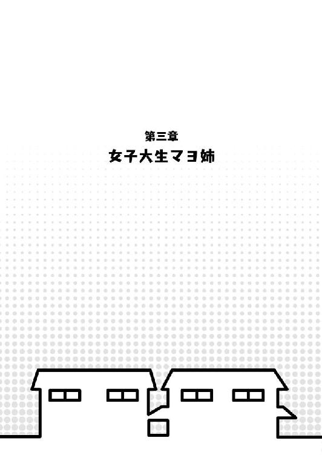

| 桜ノ杜ぶんこ 恋愛０キロメートル もしものおはなし | |
| 天草白 | |
| (2013) | |
桜ノ杜ぶんこ
恋愛０キロメートル
もしものおはなし
天草白
それは四月の初旬──春休み最終日のことだった。
「家族を交換しようと思うの～」
希桜さんが唐突に言い出した。
この場に集まっているのは、父親と四兄弟という組み合わせの矢崎家と、母親と五姉妹の組み合わせという木ノ本家。
男だらけの俺の家族と、女だらけの隣の家族。
「またやるんですか、あれ？」
俺は驚いて希桜さんを見返す。
家族交換というのは、冬に三か月ほどやっていた『お互いの家族を一人交換する』という......まあ、ちょっとしたゲームみたいなものだ。
矢崎家からは次男の俺が、木ノ本家からは次女の咲耶が、それぞれ互いの家の『家族』になった。
隣人として付き合ってきた木ノ本姉妹や母親の希桜さんと一つ屋根の下で暮らし、今まで知らなかった一面をいっぱい知ることができた。幼なじみたちが姉や妹になったのは、ちょっぴり照れくさかったりもしたけど、でも──。
「久しぶりに......いいかもしれない」
なんだかんだで、前回の家族交換は楽しかった。
......大変なこともいっぱいあったけどな。
「じゃあ、賛成の人は手を挙げてー」
「いいんじゃない？ 私は意義なし」
希桜さんの言葉にうなずいて、最初に手を挙げたのはマヨ姉だ。
ツインテールにした髪型が、整った顔立ちに可愛さをプラスしている。
しっかり者......と見えて、意外と家の中ではだらしない木ノ本家の長女。美人で性格もいい。今年から大学生だ。
この間の家族交換では真っ先に反対したマヨ姉だけど、今回はあっさりと賛成してくれたみたいだった。
「大学に進学したせいで、日中は京一と会えないし......」
ぼそりとつぶやくマヨ姉。
「マヨ姉？」
「あ、ううん、なんでもないのっ」
マヨ姉は、なぜか顔を赤くしながら手を振った。
「へえ、家族交換またやるのか......今度はウチに誰が来るかな？」
「こっちからも一人矢崎家に行くんだ。ちょうどいいからお前が行ってこい、乃来亜」
ワクワクした様子の乃来亜を、華がじとっとした目で見た。
「ん、あたし？」
「五十年ほど帰ってこなくていいぞ」
「長すぎるわ！」
「そのまま矢崎家に骨を埋めてきたらどうだ？ なんなら私が手伝ってやろう」
「目に殺気が宿ってるぞ、お前」
「惜しい人を亡くした」
「死んでねぇわ！」
「いや、別に惜しくもないか。むしろせいせいした」
「せめて死を惜しんでよ!?」
ワイワイと賑やかだ。
四女の乃来亜はうるさいくらいに元気で破天荒な女の子。セミロングにしたピンクの髪が明るい顔立ちによく似合っている。
五女の華は頭の両サイドで髪の毛をお団子にしているのが可愛らしい。乃来亜とは対照的にクールな性格だ。
まあ二人とも、家族の前では別の一面を見せることもあるけど。
他の皆も、特に反対意見はないようだった。
「で、今回は二週間ごとに交換メンバーを変えていくという新ルールだ」
今度は俺の親父──矢崎雅人が説明した。
前回は、交換メンバーは三か月間ずっと互いの家にいたままだったけど、今回は違うらしい。
「二週間ごとか......」
「じゃあ、誰が矢崎家に行くのかを決めないとね」
マヨ姉が言うと、希桜さんはにっこりと笑って、
「あみだくじを用意したわよ～。これで誰が行くのか決めましょう。一人一本ずつ書き足していって」
「一本じゃ足りねぇよ。あたし、十本くらい足してもいい？」
乃来亜が口を尖らせた。
「ダメ。追加は一人一本まで」
遠足のおやつは三百円まで、みたいなノリの希桜さん。
すかさず乃来亜が、
「バナナは追加に入りますか？」
「入ります」
「入るの!? そもそも、どうやってあみだくじにバナナを追加するんだよ!?」
俺のツッコミをよそに、木ノ本シスターズたちは、あみだの書かれた紙の前でワイワイと騒いでいた。
「当たった人が矢崎家に行くのよー」
のほほんとした口調で告げる希桜さん。
「じゃあ、私はここにするわ」
真っ先に動いたのは、次女の咲耶だ。
ピンクのリボンで束ねたポニーテールが踊るように跳ねた。
性格は強気で、最近特に怒りっぽい気がする。
......なぜか俺限定で。
「先に書くのはずるいぞ、サク姉」
「うるさいわね。最初に書こうと最後に書こうと一緒でしょ」
「サク姉の名前をぴちぴちシャツ女に書きかえてやる」
「私、ぴちぴちシャツじゃないわよ！」
「巨乳をより見せびらかすために......サク姉は貧乳の悲しみを知らない」
「あのね......」
「痴女め（ぼそっ）」
「誰が痴女よ！」
「ほらほら、ケンカしないの。何番に書いても同じでしょ」
言い争う乃来亜と咲耶を、マヨ姉がたしなめる。
「違うわ」
「違うよなぁ」
ばちばちと火花を散らし合う咲耶と乃来亜。
「私は最後でも......」
実咲が遠慮がちにつぶやいた。
咲耶の双子の妹の木ノ本家三女。咲耶と同じオレンジがかった髪を、こっちは後ろで束ねて両サイドに分けている。
咲耶とは真逆の、控えめでとても優しい性格の持ち主だった。
「残り物には福があるっていいますし......」
「福......」
「私はできれば......兄さんと......」
「えっ？」
「あ、ううん、なんでもないの」
「福？ 実咲お姉ちゃんにとっての福ってどっち？」
華がジッと実咲を見る。
「ここに残ること？ それとも──」
「え、えっと、それは......」
実咲はうろたえたように目を逸らした。
なぜか俺のほうをチラッチラッと見ている。
「それで、こっちはどうしよう？」
兄貴の神が言った。
お堅い性格でちょいキザの矢崎家長男だ。
「前みたいに京一が行くのか？」
「ちょっと待ったー！」
兄貴の言葉に本田が割って入った。
俺の弟だ。コイツを言い表すには、たった一つの言葉で足りる。
すなわち──変態。
「兄ちゃんばっかりいい目を見るなんて許さねーからな。今度こそ、俺が木ノ本家に行かせてもらう」
そういえば前のときも俺を羨んでたな、本田は。
「じゃあ俺たちもあみだくじで決めるか......って、夕空がいないな」
「どうせ、あいつは拒否するだろ」
と、親父。
夕空は俺の弟で本田の兄──つまり矢崎家の三男だ。
いや、正確には弟っていうか......まあ、この話はいいか。
とにかく夕空は喧嘩が強くて、反抗期真っ最中。親父の言う通り家族交換のメンバーなんて断固拒否しそうだ。
「悪いけど、僕もパスさせてもらう」
さらに兄貴まで拒否した。
「大学で色々と忙しくてね。環境が変わってバタバタするのはちょっと......」
マヨ姉と同じく、兄貴も今年大学生になった。
確かに入学したてだと忙しいのかもしれない。
「じゃあ俺と本田でくじを引くか」
「いや本田もパスだ」
「なんでだよ!?」
親父の言葉に愕然とした声を上げる本田。
うわー、めちゃくちゃガッカリ顔だな。
「俺だって家族交換で隣に行って、女の子ときゃっきゃうふふ脱衣所で鉢合わせしてラッキースケベ的なイベントとか間違えて着替えを覗いておっぱい見ちゃってハアハアとかハーレム王に俺はなる！ って生活してーよ」
言いながら、息を荒げる本田。
まぎれもなく、そこには生粋のＨＥＮＴＡＩがいた。
......確かに、こいつは木ノ本家に行かさないほうがいい気がする。
親父はそんな本田の肩をポンと叩き、
「彼はいつかやると思っていました......普段は小心者に見えるんですが、心の奥にドロドロしたものを隠し持ってる感じなんですよね......」
「犯罪者の近所の人にインタビューするみたいなモノローグ止めて！」
「ほんの出来心だったんだよな？ ほらカツ丼食うか？」
「だから拘置所みたいな小芝居やめろよ！ まだ何もやってねーよ！」
「まだってことは、いずれするつもりだったのか？」
「..........................................ま、まっさかー」
キョドりすぎだ、本田。目が泳ぎすぎだし。
「お前が木ノ本家に行くと何か過ちを犯しそうだからな。そんな羨まし......けしから......いや羨ましいことになったら、希桜に申し訳が立たん」
「そんな......」
ガックリとへたりこむ本田。
血の涙を流している。
同情心はまったく湧いてこないけど。
「というわけで、消去法で隣に行くのはお前に決定な、京一」
「ええええええええええええっ、兄ちゃんばっかりずるい！」
「他にいないだろうが」
「いや、だから俺が......」
「黙れ犯罪者」
「ひどっ!?」
「元気でやってこい、京一」
「ハーレム王の夢が......」
マジ泣きしている本田をスルーして、親父が俺に言った。
「分かったよ」
まあ、妥当な結果かもしれない。
こうして矢崎家の交換メンバーは決定した。
「こっちは俺がまた交換メンバーなんだけど、そっちは──」
俺が木ノ本姉妹たちのほうを振り返った瞬間、
「よっしゃあぁぁぁぁぁぁぁぁぁぁぁぁぁぁっ！」
咲耶がものすごい勢いでガッツポーズしていた。
「さ、咲耶？」
「私が矢崎家に......」
どこか寂しげな様子の実咲。
あみだくじの結果、矢崎家に行くことになったのは実咲らしい。
っていうか、咲耶の喜びようがちょっと異常だ。
目を爛々と輝かせて、何度も何度もガッツポーズ。
「ついに......ついについについについについに京一と一つ屋根の下でっ......！」
「お前、どうしたんだよ」
「フハハッ、クックックッ、ヒヒヒヒヒケケケケケ......ノォホホノォホ、ヘラヘラヘラヘラ、アヘアヘアヘ」
「笑い声がおかしい!?」
「腹の底から『大勝利＆スカッと爽やか』の笑いが出てしょうがねーぜッ！」
「キャラ崩壊してるぞ、お前!?」
「サク姉、家族になる以上兄貴のことはちゃんと『お兄ちゃん』って呼ばなきゃダメだぞ」
横から口を出す乃来亜。
前に家族交換をしたときは、咲耶が入れ替わりで俺の家に行ったから、他の四人と違って、咲耶からだけはお兄ちゃんって呼んでもらったことがない。
きっと恥ずかしがるだろうな、咲耶のヤツ。
俺はいつも通り『咲耶』って呼べばいいわけだけど、咲耶は俺のことを『お兄ちゃん』とか『兄さん』とか『兄貴』とか呼ぶわけだし。
咲耶が俺に妹として接するのか......。
うーん、想像しづらい。
「そっか......兄妹だもんね」
「今から京一って呼ぶのは禁止だ」
うなずいた咲耶に華が言った。
「『お兄ちゃん』もしくは『覚えたてのサル』という呼び名しか許可しない」
「いや二つ目おかしいだろ!?」
「じゃあ覚えたてのサルで」
「なんでそっち選ぶんだよ!?」
「えっ、ダメなの？」
「なんで不思議そうな顔してるんだよ、咲耶!?」
「京一が喜んでくれると思ったのに......」
「喜ばねぇわ！」
「やむを得ないわね......じゃあ普通に呼ぶ」
「渋々なのかよ。最初から『お兄ちゃん』でいいだろ」
「だって──」
咲耶が頬をちょっぴり赤く染めていた。
こういう顔をすると、こいつも可愛いよな......なんて、つい思ってしまう。
ああ、そうか。
俺はようやく納得する。
なんだかんだでコイツ、俺のことを『お兄ちゃん』って呼ぶのが照れくさいんだな。
「ちょっとずつ慣れていけばいいよ」
と、フォローしておく。
俺だって、前の家族交換のときに『マヨさん→マヨ姉』とか『実咲ちゃん→実咲』とか、呼び名を変えるときは照れくさかった。
......今じゃすっかり慣れたけどな。家族交換が終わっても、その呼び方を続けてるくらいだし。
「うん、ありがとうお兄ちゃん」
「そうそう、ちょっとずつ──」
って、いきなりお兄ちゃんって呼ばれた!?
「どうしたの、お兄ちゃん？」
「い、いや」
「お兄ちゃん？」
「あのさ、咲耶」
「なーにお兄ちゃん？」
ノリノリじゃねーか！
「お兄ちゃん」
「......おう」
「呼んでみただけ」
「そ、そっか」
「お兄ちゃん」
「なんだ」
「えへへ、呼んでみただけ」
幸せそうにほほ笑む咲耶。
「お兄ちゃ──」
「もういいわ！ 何回呼ぶつもりだよ!?」
「んー......あと五百七十三回くらい」
すごい具体的な数字なんですけど。
その数字にどんな意味が......？
そもそも回数多すぎないですか......？
「えへへ、京一がお兄ちゃんなのね」
咲耶は本当に幸せそうな顔をしていた。
こうして、矢崎家と木ノ本家の家族交換はふたたびスタートした。
俺は実咲の部屋を使うことになった。
冬にも一度家族交換を経験してるから、住む部屋が変わったり、家族そのものが変わっても、そんなに違和感はない。
むしろ懐かしい気分が込み上げてくる。
なんていうか──俺にとって木ノ本家はもう一つの『家』なんだな、って感じ。
その一日目の夜。
「ふう、さっぱりした」
俺は、冷蔵庫で冷やしてあったお茶をゴクゴクと飲んだ。
風呂上りで火照った体に、お茶を一杯ってのが気持ちいい。
前の家族交換でも三か月暮らしていたし、もうすっかり『勝手知ったる我が家』って感じだ。
一息ついた俺は自分の部屋に戻ろうとしたところで、廊下の隅にたたずむ人影を発見した。
──乃来亜だ。
「そんなところで何してるんだ？」
俺は乃来亜に近づいてたずねた。
「しー」
いきなり指を俺の唇に押し当ててくる乃来亜。
柔らかな指先の感触が口に触れる。
「............！」
不覚にも少しだけドキンとしてしまった。
「な、なんだよ......？」
「あれあれ」
一方の乃来亜は、そんな俺の動揺には気づいていないらしい。
小声で囁きながら前方を指さした。
少しだけ開いたドアの向こうに脱衣所がある。
俺がさっき風呂に入ったばかりで、湯気がまだ残っていた。
そこに──咲耶がいた。
「......何してるんだ、あいつ？」
ちょっと様子がおかしい。
「ふふ......くくく......」
咲耶は何やら不気味にほくそ笑んでいるのだ。
「濃厚っ......濃密っ......こ、これは収穫だわ......うふふふふふ、すーはー、すーはー」
何かに顔を埋めている咲耶。
白いタオルみたいな──。
「もっと近くで見てみようぜ、兄貴」
乃来亜がにたりと笑いながら（まるで女の子を捨てたような変顔だった）、抜き足差し足で咲耶の背後に近づいていく。
それに続く俺。
咲耶は白いタオルに顔を埋めるのに夢中なのか、全然気づいてないみたいだ。
やがて俺たちは咲耶のすぐ傍までやって来て、
「サク姉、何やってるんだ？」
「あひいぃぃぃぃぃぃぃぃぃぃっ!?」
乃来亜が声をかけたとたん、異常なほど驚く咲耶。
「いや、そこまで驚かんでも」
「で、何やってるんだ？」
「べ、べべべべべっつにー」
咲耶は明後日の方向に視線を向けた。
いやいや、目が泳ぎすぎだろ。
あからさまに怪しい。
「誤魔化しても無駄だって。あたしたち、さっきからずっと見てたし」
「............」
「それ、兄貴のシャツだよなぁ」
ん？
言われてみれば、咲耶が手にしているのは、風呂に入るときに脱いだ俺のシャツだった。
遠目だと白いタオルに見えたけどな。
「ぎくり」
「もしかして前の家族交換で矢崎家に行ったときも、似たようなことしてたんじゃね？」
「ぎくりぎくり」
「たとえば──兄貴の布団にくるまってスーハー匂いを嗅いだり」
「し、ししししししししししてないわよっ、するわけわけわけわけわけないでしょっ！」
「本当にしてたのかよ!? そんなこと!?」
「や、ややややだなー、私がそんにゃ変態的なこと、す、すりゅわけななななひわよぉ」
「カミカミじゃねーか」
めちゃくちゃ分かりやすいうろたえ方だな......。
「ち、ちょっと、その......えっと、洗濯の準備をしてただけ」
「ふーん」
「本当だからねっ！」
「なるほどなー」
乃来亜は腕組みをしてうんうんとうなずいている。
それからニヤリ、と例の変顔で咲耶を見た。
「サク姉って、兄貴の匂いに興奮するヘンタ」
「きえええええええっ！」
その瞬間、咲耶によってボコボコにされる乃来亜。
あまりの早業に残像が見えた──。
咲耶の格闘能力、おそるべし。
さらに追い打ちをかけようと、咲耶は拳をボキボキならす。
「バレてしまった以上──始末するしかないわ」
「いやいや、始末って!?」
「久しぶりに来て忘れてしまったの？ これが木ノ本家の日常──」
「ここってそんな殺伐とした家族だったっけ!?」
でも前回は咲耶が入れ替わりで矢崎家にいってたしなぁ。
もしかして咲耶がこの家にいるときは、これが日常なのかもしれない。
おそるべし木ノ本家の日常......。
「ノキ、あんたは何も見ていない。いいわね？」
「えっ？」
「あんたは何も見ていない。はい復唱」
「あ、あたしは何も見てない......」
コクコクと素直にうなずく乃来亜。
「咲耶お姉ちゃんは優しくて美人。はい復唱」
いや、それ今の出来事と関係ないよな!?
「サク姉は......や、優しくて美人......」
「ノキは咲耶お姉ちゃんのしもべ」
「あ、あたしはサク姉のしもべ」
「洗脳じゃねーか！」
まあ、そんなこんなで。
賑やかな家族交換生活が始まったのだった──。
翌日。春休みも終わり、新学期を迎えた。
その早朝──。
「お兄ちゃん、学校行こっ♥」
にこやかに俺を誘う咲耶はいつもの勝気さもどこへやら。すっかり可憐で可愛い女の子っぽい態度になっていた。
「お前キャラ変わりすぎだぞ......」
「お兄ちゃんは私だけのものなんだからっ。誰にも渡さないんだからねっ」
「いや、誰だよお前......」
「だって今は京一の妹だし」
「だからって妹キャラ作りすぎだろ」
「えへへ」
なんにしろ咲耶は上機嫌だ。
「ほらほら、早く行こっ」
と、俺の腕にしがみついてくる。
うっ、弾力のあるものが二の腕に当たって──。
..............................。
..................。
いいね！
咲耶と腕を組んだまま、俺たちは家を出た。
「......兄さん」
ちょうど隣の矢崎家から出てきた実咲と鉢合わせする。
「おはよう、実咲」
「............」
──って、あれ？
「実咲？」
「オハヨウゴザイマス」
実咲のヤツ、妙に険しい顔で俺を見てる。
正確には、俺と咲耶の両方を。
「さっそくアプローチして......本気なんだね、お姉ちゃん......」
「えっ」
「仲、いいんですね」
「視線が冷たいんだけど......」
「......おはよ、実咲」
咲耶もまた、なぜか表情を険しくして俺の腕にギュッとしがみつく。
むぎゅぅぅぅぅぅぅぅぅぅっ。
たわわで柔らかいものが、ますます強く二の腕に押しつけられる。
........................。
...............。
ナイスおっぱい！
いやいや、浸ってる場合じゃないな。
よく分からないけど急に険悪な雰囲気になってしまった二人を、俺は交互に見つめ、
「さ、三人で一緒に行くか」
「......そうね」
「......そうですね」
実咲が俺の反対側にやって来て、肩を寄せる。
「行きましょう、兄さん」
控えめながらも体を寄せてきたことで、実咲の胸元が俺の二の腕に当たった。
ぷにゅっ、ぷにゅうぅぅぅぅぅっ。
咲耶とは反対側の腕に、咲耶に勝るとも劣らない素晴らしい感触が──。
「......何にやけてるのよ、京一」
咲耶もさらに胸を押しつけてくる。
っていうか『京一』って。『お兄ちゃん』じゃないのかよ。
素の呼び方になってるぞ、咲耶。
実咲と咲耶に両側から挟まれた格好のまま、俺たちは通学路を進んだ。
むぎゅっ、むぎゅうっ。
相変わらず咲耶の胸が俺の二の腕に当たってる。
反対側の腕にも、ときどき実咲の胸が触れるし。
まさに両手におっぱい......じゃなかった、両手に花の状況。
「き、今日からいよいよ最上級生か」
ドギマギとして声がうわずってしまう。
「なんか実感ないわね......」
「クラス替え、どうなるんでしょうね」
実咲がぽつりとつぶやいた。
どこか不安げな顔。
「お願い......同じクラスに......」
ぽつりとつぶやいた声は小さすぎて、よく聞こえなかった。
「えっ」
「そ、それはそうと、そんなにくっついたら兄さんが暑いんじゃない？ 少し離れたら、お姉ちゃん？」
実咲が話題を変える。
咲耶はふんと鼻を鳴らし、俺に向き直って、
「朝はまだ肌寒いし、ちょうどいいわよね、お兄ちゃん？」
「い、いや、その......」
「兄さんは優しいから嫌だって言えないのよ」
「嫌がってるようには見えないけど？ むしろにやけてるし」
それはおっぱいが当たってるから......。
「そんなふうに胸を当てたら兄さんだって困るでしょう？」
「当ててんのよ」
わざとだったの!?
「わ、私だって──」
「割り込みはなしよ、実咲」
咲耶がキッと実咲をにらむ。
「......お姉ちゃんはいつも兄さんと一緒にいられるんだから、今くらい......私にも」
「そこまで怒ることないじゃない」
「ずるい......」
「えっ」
「いつもいつも。私から......取って............」
「......実咲？」
咲耶の表情がこわばる。
ギスギスとした空気。
俺はふいに、嫌な予感を覚えた。
大切のものが崩れ去ってしまうような予感。予兆。
──俺たちは、幼いころから何をするにも三人一緒だった。
俺が茶化して、咲耶がそれを怒って、そんな二人を実咲が笑顔で見つめる。
これが子供のころからずっと続けてきた三人のやり取りなんだ。
だから、こんなのはダメだ。
なんとかこの雰囲気を変えないと。
「ふ、二人とも、こっちを見てくれ！」
「あ？」
「あぁん？」
な、なんで俺をにらむんだよ!?
いや、ひるむな。
とにかく場を和ませるんだ。
二人がこれ以上ギスギスしないために──。
いくぞ、俺の渾身の一発ギャグ！
「の、のっぴょっ、ぴ、ぴょーんっ！」
か、噛んだー！
「そういえば昨日の『ぐるぐるナシゴレン』だけどさー」
「あ、うちでも『ぐるナシ』見てたよ」
「『ゴチになりたい』に出てきたインド料理がすごい美味しそうだったじゃない？」
「あー、私も思った。本田君から、あれと同じもの作って、ってお願いされちゃった」
「実咲、料理上手だしねー」
反応して！ 頼むから！
何ごともなかったかのように日常会話モードに入った二人を、俺は涙目で見つめた。
渾身の一発ギャグだったのに、これじゃ俺バカみたいじゃん......。
とりあえず、ギスギスした雰囲気はなくなったからよしとするか。
......俺はひどい精神的ダメージを負ったけど。
ちょっと寂しい気分に浸りながら、やがて俺たちは学校に到着した。
俺たちが通う野川宮学園は四年制の学園だ。
去年までは木ノ本家の全員がこの学園に通っていた。
最上級生だったマヨ姉が卒業したため、今年度からは俺と咲耶、実咲が四年生、乃来亜が三年生、華が二年生ということになる。
ちなみに華は二年生ながら前生徒会長のマヨ姉から役職を引き継ぎ、新たな生徒会長になった。
今日から心機一転、俺たちの学園生活が始まる──。
そう思った矢先、
「うああああああああああああああああ..............................あああああああああ..................！」
実咲ががっくりとその場にへたりこんだ。
今俺たちがいるのは、下駄箱の前に張り出されたクラス替え発表の掲示板。
去年は俺も咲耶も実咲も同じクラスだったんだけど、今年は違っていた。
俺は四年Ａ組、実咲は隣のＢ組だ。
「そ、その......元気出せよ」
へたりこんだままの実咲に慰めの声をかける。
俺だって実咲と別々のクラスになったのは寂しい。
だけど実咲のこの落ちこみっぷりは、「寂しい」とかそういうレベルを超越してるような......？
「か、神様のばかあぁぁぁぁぁぁぁぁぁぁ............」
完全に虚脱状態の実咲。
さすがにちょっと心配になってくる。
「あんまり落ちこむなよ。クラスが離れ離れになっただけで、永遠のお別れってわけじゃないし」
「うう......ぐすっ、ひぐぅ......えぐっ......」
号泣してるー!?
そこまでショックだったのか......。
と、
「四年生になってもよろしくです、矢崎」
氷室屋灰が駆け寄ってきた。
神社の娘でときどき巫女さんをやっているくせに金髪のショートヘア。
一年のころからの悪友で、掲示板を見ると最後の学年でも同じクラスみたいだ。
なんだかんだで腐れ縁だな、こいつとも。
「実咲は違うクラスになっちゃったですか......」
実咲と仲がいい氷室屋はちょっと寂しそうな顔を見せた。
うずくまったままの実咲の肩をぽんぽんと叩く。
「元気出すですよ、実咲」
「ううううう、灰ちゃぁぁぁん......」
実咲が氷室屋に抱きつく。
氷室屋はその頭をよしよしと撫でながら、
「気持ちは分かるです。ボクも矢崎と離ればなれになると、寂し......」
「えっ」
「あ、いえっ、なんでもないですっ！」
「ふーん......」
そんな俺たちを咲耶が見ていた。
「また同じクラスになったわね。今年もよろしく、お兄ちゃん」
そう、咲耶とも同じクラスになったのだ。
結局いつものメンバーでクラスが違うのは実咲だけだった。
と、
「えっ、木ノ本咲耶、今矢崎のことを──」
氷室屋が不審そうに俺と咲耶を見やる。
あ、しまった。
学校ではお兄ちゃんって呼ばないように言っておくべきだったか。
「鬼ちゃんって」
「........................」
「矢崎は木ノ本咲耶に鬼のような仕打ちをしているですか？」
「いやいや」
「いい人を装いつつ、裏では幼なじみに虐待を......恐ろしい男です、矢崎」
氷室屋は、わなわなと体を震わせた。
「まあ木ノ本咲耶になら、別に何してもいいですけど」
「ちょっと、どういう意味よ！」
怒る咲耶。
うーん、さすがにこの誤解は後で解いておいたほうがいいな。
まあ俺が咲耶を虐待してるなんて誰も信じないだろうけど。
逆ならともかく。
「お兄ちゃ......じゃなかった、京一。あんた今ものすごく失礼なこと考えてない？」
「い、いやいやいや、考えてないっすよ」
「じー」
咲耶にジトッとした目で見られ、汗ジトになる。
「このままじゃ、どんどん距離が離れちゃう......お姉ちゃんに持って行かれちゃう......なんとかしないと......なんとか......」
一方の実咲は、何やらブツブツとつぶやいていた。
どうも今朝から二人の様子がおかしいままだ。
気になる。
漠然とした不安感が一瞬、俺の胸をよぎった。
翌日の昼休み。
学食に行こうとしたところで、教室に誰かが駆けこんできた。
「兄さんっっっっっ！」
すごい勢いで俺のところまで走ってくる。
「実咲か。どうした？」
ハアハアと息を切らせながら、やって来た実咲は、
「お弁当を作ってきました、兄さん！」
キリッとした顔で俺に弁当箱を差し出した。
「わざわざ作ってきてくれたんだ」
「お姉ちゃん、兄さんのお弁当を作ってないと思ったから」
「うっ、だ、だって料理自信ないし......」
ギクッとした顔でのけぞる咲耶。
「前に私が教えたじゃない」
「でも朝は時間ないし」
「うう......」
「時間は作るものだよ」
「ううう......」
いつになく気迫にあふれた実咲に、あの咲耶がたじろいでいる。
「というわけで、どうぞ食べてください兄さん」
「あ、ありがとう」
実咲は俺をジッと見つめている。
「どうしたんだ？」
「あ、あの」
少し恥ずかしそうにうつむきながら、実咲は言った。
「よ、よかったら一緒に食べませんか」
「あれ？ 新しいクラスの友だちと一緒じゃなくていいの？」
横から口出しする咲耶。
実咲はキッと咲耶をにらんだ。
「お姉ちゃんこそ、灰ちゃんとでも一緒に食べてればいいんじゃない？」
......どうも、さっきから実咲の様子が変だ。
咲耶に対してやたら厳しいし。
「なんで私が氷室屋と一緒に食べなきゃいけないのよ」
「ん、呼んだですか」
氷室屋が、たたた、と俺たちのところまでやって来る。
「灰ちゃん、お姉ちゃんがお昼ごはん一緒に食べたいって。二人っきりで」
「私、そんなこと言ってないわよ！」
「まあ、同じクラスのよしみで一緒に食べてやってもいいです」
「あんたと食べるくらいなら、焼けた鉄板の上で正座して頭を下げながら食べたほうがマシよ」
「ボクと一緒の食事って焼き土下座より嫌ですか!?」
「冗談よ」
「まったく......笑えない冗談です」
「どっちかっていうと、あんたが焼き土下座するなら、ものすごく我慢してどうにか一緒に食べてあげてもいいレベル」
「焼き土下座役はボクのほうなんです!?」
愕然とした顔の氷室屋。
そんな氷室屋を尻目に実咲が、
「どうぞ召し上がれ、兄さん」
隣に座った実咲が弁当箱を開けた。
ハンバーグや卵焼き、ホウレンソウのお浸しなどが入った、オーソドックスな弁当だ。
だけどオーソドックスだからこそ、作った人の実力がダイレクトに反映される。
盛り付けも綺麗だし、一つ一つのおかずの彩りも豊かで、すごく美味しそうだった。
「く、悔しいけど......やっぱりさすがね」
唇をかむ咲耶。
実咲はそんな咲耶に目をやってから、俺に向かってにっこりとほほ笑んだ。
「この卵焼き、ちょっとした自信作なんです」
「ち、ちょっと料理ができるからって......」
「一緒に住んでいたら、朝も昼も夜も兄さんに料理を振る舞えるんですけどね」
「ううう......」
ひるんだ様子の咲耶。
木ノ本家の料理はほとんど実咲 がやっていた。
今は華と咲耶が頑張って作ってくれているけど、やっぱりかなり大変そうだ。
「ボク......焼き土下座しなきゃいけないですか......」
で、氷室屋はまだ落ちこんでいるらしい。
......まあ、今はどうでもいいんで放っておこう。
放課後──。
「......あれ？」
下駄箱の陰に誰かいる。
たぶん本人は隠れてるつもりなんだろうけど、ピンク色のリボンにオレンジがかった髪の先端部がちらっと見えていた。
あの髪とリボンはもしかして──。
「実咲？」
「っ....................................！」
下駄箱の陰からうろたえたような気配が伝わる。
「実咲だろ？」
「ち、違います」
陰に隠れたまま、返ってくる声。
「なんで隠れてるんだ？」
「ワタシみさきトイウヒトジャアリマセーン」
「カタコトになった!?」
新しい遊びか何かなんだろうか？
リアクションに困る。
「じ、じゃあ、俺たち帰るから」
「また明日ね、実咲」
「ハイ、マタアシタ──」
下駄箱の陰から顔を出した実咲は、にこやかに手を振った。
「......って、なんでやねん！」
「ど、どうした実咲」
いきなり怒り出した!? しかもなんで関西弁ツッコミ？
「そ、そうじゃないんです、兄さん。私は、あの......えっと」
言いづらそうにモジモジしている実咲。
「？？？」
「だから、その......」
「ん？」
「私っ......兄さんと一緒に帰りたいですっ！」
実咲はハアハアと肩で息をしながら、俺をジッと見ていた。
「............！」
咲耶が俺の腕にギュッとしがみつく。
実咲がハッとした顔でうつむいた。
「......そうだよね。お姉ちゃんは、この前の家族交換で三か月も我慢して......」
「えっ？ えっ？」
「でも、私だって譲りたくないし......ああ、もう」
「よく分からないけど、変な遠慮するなよ」
俺は思わず苦笑いした。
実咲らしいといえば、らしいのかもしれない。
「一緒に帰るか？」
「............」
「実咲？」
「......は、はいっ」
しばらくの間、迷っていた様子の実咲は、やがてぱっと顔を上げた。
まるで何かを吹っ切ったように。
たたた、と走ってきて、俺の腕にしがみつく。
今朝の咲耶みたいだ。
「......ふーん」
俺の隣で咲耶が眉を寄せた。
なぜか面白くなさそうな顔だった。
「......私、もう遠慮しないって決めたから」
実咲が咲耶に言い放つ。
「？？？」
一体なんの話だ？
咲耶はキッと表情を引き締めた。
「......そっちがその気なら、私だって」
「今まで全然積極的じゃなかったくせに」
「わ、私なりにアプローチしてたわよっ......その、こいつが鈍感だっただけで......」
「私......絶対譲らない」
よく分からないが、姉妹の戦いが勃発しているらしかった。
その日の夜、木ノ本家の食卓。
「はいお兄ちゃん。あーん」
咲耶は豚肉の生姜焼きを箸でつまみ、俺の口元に持ってきた。
香ばしい匂いが鼻をくすぐる。
そして目の前には、にっこりと嬉しそうな顔で俺を見つめる咲耶。
「い、いや自分で食べられるって」
「あーんしてくれなきゃやだ、お兄ちゃん」
「お前、キャラ変わってるぞ......」
「私だって一度くらい兄妹やってみたかったのよ。この間は一人だけ矢崎家に行かされて、のけものだったし」
「まあ、そうだけど」
こいつ、実はあのとき寂しかったんじゃ......。
「だからその分も、今回はたっぷり『妹』をやらせてもらうんだからね」
咲耶は俺の口元にふたたび生姜焼きを差し出した。
「はい、あーん」
「あ、あーん......」
仕方なく咲耶から食べさせてもらう俺。
もぐもぐ。
「ど、どう......かな？」
上目遣いに俺を見上げる咲耶。
「うん、美味いよ、これ」
俺は素直にうなずいた。
実咲と比べるのは可愛そうだけど、咲耶の料理も上達したんだな。
前に作ってもらったときに比べて、ずっと美味しくなってる。
「あれから練習したんだからね。私も......その、実咲に教えてもらったりして」
咲耶はぽつりとつぶやいた。
こういうところは偉いな、と素直に思う。
「えへへ、嬉しい」
はにかんだような笑みを浮かべる咲耶。
う、こういう顔すると、本当に可愛いな。
「じゃあ、もう一口......あーん」
また生姜焼きを差し出された。
「あ、あーん」
もぐもぐ。
「さらに一口。あーん」
「あーん......」
......さっきから、ひたすら生姜焼きばっかりだ。
「追加で一口」
「あ、あーん......」
「まだまだ続くよ一口」
「......っていつまでやるんだよ、これ！」
だいたい、さっきから生姜焼きオンリーじゃねーか！ 他のものも食べさせろよ！
「兄妹なんだし、いいじゃない」
「兄妹は必ずあーんして食べなきゃいけない、なんて決まりはない」
「はい、あーん」
「聞けよ」
しかも、また生姜焼きだし。
──と。
なんてやり取りをする俺と咲耶を、乃来亜と華がジッと見ている。
なんだかイタいものをみるような視線が、なんとも気まずかった。
いや、実際にイタい行動かもしれない。
「まあ。なんザマスか、あのデレデレっぷり。『あーん』ですわよ、『あーん』」
「まったくですわね、奥様」
「見てるこっちが恥ずかしくなるザマス」
「バカップルはよそでやってほしいザマス」
「ひそひそ」
「ひそひそ」
有閑マダムみたいな話し方で顔を見合わせる乃来亜と華。
さらに──、
「ぐぎぎぎぎぎぎぎぎぎぎぎぎ......」
テーブルの端の席で、実咲が俺たちを恨めしげに見ながらタオルを噛んでいる。
今日は、親父は仕事の都合で、兄貴は大学のサークルの歓迎会で、本田は映研の活動でそれぞれ遅くなるらしい。
夕食のタイミングがバラバラになってしまうため、実咲はこっちの家で夕食を取ることにしたとか。
ちなみに、矢崎家の夕食はすでに全部準備済みらしい。
さすがに実咲はきっちりしてるな......。
「あれ、どうしたの実咲？」
咲耶は俺に「あーん」をする手を止め、
「よその家の子が勝手に上がりこんじゃダメよ」
「よ、よその子じゃないもん！」
「今は矢崎家の人間でしょ」
「ぐぎぎぎぎぎぎぎぎぎぎぎぎぎ..................！」
お前もキャラ変わってるぞ、実咲......。
夕食後。
矢崎家に戻る実咲（ちゃんと木ノ本家の食器を全部洗っていったのは、偉いと思う。他の姉妹も見習ってほしいもんだ）を、俺が玄関先まで送っていった。
「今日はありがとうございました、兄さん」
玄関を出たところで、実咲がぺこりと頭を下げる。
「元々お前の家なんだから礼なんていいって」
「でも......」
実咲はうつむいて、
「私、邪魔じゃなかったですか？」
「そんなことあるわけないだろ」
「もう矢崎家の人間ですもんね、私。木ノ本の家に軽々しく出入りするべきじゃないですよね」
「......ヘンな気の使い方するなよ。お前、最近ちょっと変だぞ」
俺は眉間にしわを寄せた。
「妙に迫ってきたり、いきなりネガティブになったり」
「........................」
「咲耶ともなんかギクシャクしてるし」
「......だって、このままじゃお姉ちゃんに............」
「えっ？」
両肩を震わせている実咲。
まるで泣き出す寸前みたいに。
「もしかして──寂しいのか？」
「えっ？ えっ？」
「やっぱり寂しいよな。家族と離れるって。けっこう寂しがりなんだな、実咲って」
「兄さん......」
「いやー、どうせなら実咲がこっちに残ってくれればよかったのにな。やっぱり料理も上手いし、よく気が付くし......はは」
実咲の気分をほぐそうと、冗談めかして言ってみる。
「ふーん、そんなこと思ってたんだ？」
「そりゃ、やっぱり実咲は色々と気配りしてくれるし、働き者だし」
「どうせ私は気の付かない女で怠け者ですよ」
「それだけじゃなくて、料理だって他の家事だってなんでもこなせるし──」
って、この声は!?
まさか......。
「お兄ちゃん、どこ行ったのかと思ったら......こんなところで実咲と......」
振り返った先には、玄関のドアを開け、腕組みをして立っている咲耶。
まずい、聞かれた！
背筋がゾワリとなった。
実咲には冗談で言ったんだけど、このタイミングで聞かれると誤解されかねない内容だ。
案の定、咲耶はブルブルと全身を震わせている。
怒りに目を吊り上げて──。
「もしかして......実咲じゃなくて私が矢崎家に行けばよかった、って思ってるの、京一？」
「違う。そういう意味じゃなくて──」
「き、聞いた通りじゃない。兄さんは私のほうがいいって言ってくれてるんだもん」
「おい、実咲──」
なんで対抗意識燃やしてるんだよ!?
お兄ちゃんを取り合う二人の妹みたいな図式になってるし......。
おかしい。
こんなの、おかしい。
「....................................」
咲耶から返ってきたのは怒声ではなく、沈黙だった。
怒鳴られるより、こっちのほうがよほど怖い。
「さ、咲耶さん？」
「実咲のアホバカボケカス死んじゃえー！」
......小学生みたいな罵倒だった。
咲耶は走り去っていった。
俺は呆然とその後ろ姿を見つめる。
すぐに追いかけなきゃ──と思うのだが、半ばパニック状態で思考が働かない。
頭の芯が痺れたみたいな感覚。
後悔と罪悪感。
それを破ったのは、
「......はあ」
実咲の、小さくため息だった。
「お姉ちゃんったら子どもみたいですね」
「............」
「しばらく放っておきましょう」
突き放すような言葉が気になった。
こんなの、実咲らしくない。
「それより、もう少しお話しませんか、兄さん。せっかくこうして一緒なんだし......」
その言葉に──俺の中の違和感がさらに広がる。
俺はゆっくりと首を左右に振った。
「いいのか、実咲」
「............」
「悪いのは俺だけど、でも実咲の言い方もちょっとどうかな、って思った。俺はやっぱり仲良くしてる実咲と咲耶を見たいから......だから追いかけてくる。行って謝ってくる。お前のこともフォローしてくる」
「............」
答えは、帰ってこない。
後ろ髪を引かれる思いで、それでも俺は走り出した。
実咲に背を向けて。
「待ってください！」
声とともに、俺の体が引き戻される。
「......実咲？」
実咲が、ギュッと俺の袖をつかんでいた。
「焦ってたんですね、私。兄さんがどこかに行ってしまう気がして......私だけが置いていかれるような気がして。お姉ちゃんに対抗意識燃やしたり、ヤキモチ焼いたり......」
「置いていくわけないだろ。妹なんだし」
「妹......」
実咲はハッとした顔で、
「えへへ」
嬉しそうに笑った。
「私も一緒に行きます」
俺たちは咲耶を追うために走り出す。
──いや、走り出そうとした。
だけど、実咲が急に足を止めて、俺をジッと見つめる。
「もう一つだけ......答えてください、兄さん」
「えっ」
「お姉ちゃんも、兄さんにとっては『妹』ですか？」
どういう意味だ？
聞き返そうとして、言葉を呑みこむ。
俺を見つめる実咲の顔があまりにも真剣だったから。
冗談とかじゃない。
訝しく思いつつも、俺は首を縦に振った。
「どっちも大事な妹だからな。ケンカしてほしくないし、ケンカしたら仲直りしてほしいって思うのは当たり前だろ」
「どっちも......妹......」
実咲はうつむいたまま、両肩を震わせていた。
泣いているのか、怒っているのか。
深く伏せた顔からは読み取れない。
やがて、実咲がゆっくりと顔を上げた。
「大事な、妹ですもんね」
にっこりとした笑顔で。
「今は......それでいいです」
ぽつりと付け足した声は、なぜか少しだけ寂しげに聞こえた──。
俺と実咲は家を出て近所を探し回った。
咲耶、足速いからなぁ......どこまで行ったんだろ？
散々探した末に、公園のところでそれらしき人影を発見する。
「ん、もしかしてあれか......？」
砂場のところに座りこんでいるシルエット。
指先で砂の上に何かを書いている。
よく見れば、あちらこちらに書かれたその言葉は──。
『ダメ人間だもの』
『私はゴミです』
『生まれてきてごめんなさい』
「暗っ!?」
思わず叫ぶ俺。
ハッとしたように咲耶がこっちを向いた。
「あ......見つかっちゃった」
「もうっ、探したんだからね、お姉ちゃん」
頬を膨らませた実咲が、咲耶の元に駆け寄る。
「だって......私、いらない子だし」
「だから違うって！ それは冗談というか、場の流れであんな言葉になったっていうか」
俺は慌てて言い訳をして、
「とにかく──ホント、ごめん！ 俺があんなこと言ったせいだよな？ 悪かったよ」
素直に頭を下げて謝る。
「謝らなくてもいいわよ。どうせ、あれがお兄ちゃんの本心でしょ？」
ツンとそっぽを向く咲耶。
やっぱり怒ってるよなぁ。当たり前だけど。
「......拗ねるのもいい加減にしてよ、お姉ちゃん」
実咲がムッとした顔で、
「お姉ちゃんだって、本当は分かってるくせに。あんなの、兄さんの本心じゃないって」
「............」
「ホントはそのことで怒ってるんじゃないんでしょ？」
「............」
「私の言い方が悪かったのは謝るよ。でも......私、お姉ちゃんとはフェアに戦いたいから。だから自分からいじけて逃げたりしないで」
ん、戦う？ なんの話だ？
「............だって、私」
「咲耶？」
「あんたたちが一緒にいるところを見たら、頭がカーッとなって......」
咲耶がぽつりとつぶやいた言葉は、俺には意味が分からなかった。
いや、そもそもさっきから実咲と咲耶がなんの話をしているのか、今一つ要領を得ない。
首を振って、咲耶が立ち上がる。
「なんでもないわ。いつまでもいじけてても仕方ないし......そろそろ帰ろうかな」
よかった、少し機嫌を直してくれたみたいだ。
咲耶はにっこりとした笑みを俺に向けた。
「とりあえず──お兄ちゃん？」
「ん？」
「実咲とは停戦するわ。その代わり」
「そ、そっか」
ホッとする。
なんでギクシャクしていたのか、結局分からずじまいだったけど......。
仲直りしてくれるなら、それが一番だ。
「ん、その代わり？」
首をかしげた俺に、咲耶はにっこりと極上の笑顔を浮かべてみせた。
「一発殴らせて」
「い、いやいやいやいや」
いきなり何言い出すんだよ!?
にっこり笑ってたんだし、そのまま和解でいいじゃん！
「殴らせて♥」
「はぁと、なんて言っても可愛くない！ 怖いよ！」
「それでチャラにしてあげる」
「や、やっぱり怒ってるんだろ、お前......」
「怒ってないってば♥」
「だから、はぁとなんてつけても──って、待て！ 待て待て待て落ち着けって！ 拳ボキボキ鳴らすなよ怖いからお前思いっきりやる気だろっていうかお前の力で全力パンチ受けたら俺マジで死」
どがばきぐしゃっ！
咲耶の拳の連打に、俺はあっけなくノックアウトされた。
一発っていったのに......。
薄れゆく意識の中で、俺は咲耶と実咲が微笑み合っているのを見た──。
「うああああああああああああああああ..............................あああああああああ..................！」
咲耶ががっくりとその場にへたりこんだ。
クラス替えのときの実咲と同じ反応。
こういうところは、さすが双子だ。
今日で家族交換から二週間が過ぎ、次の交換メンバーを選ぶことになったんだけど──。
くじで木ノ本家側のメンバーに選ばれたのが咲耶だったのだ。
「せっかく一つ屋根の下だったのに、濃縮されて染みこんだアレもコレも手に入れられなくなるなんて......」
「なんの話だよ？」
異様なほど落ちこんでいる咲耶は、俺の問いにも答える余裕がないらしい。
「終わった......全部終わった......」
「まあ、二週間だけのことだし」
「呪ってやる恨めしい皆滅べばいい世界なんて消えてしまえばいい」
「負の感情ダダ漏れすぎだろ！ どんだけネガティブになってんだよ!?」
対照的に実咲は、
「よろしくお願いしますね、兄さん」
ニコニコ顔で俺の腕にしがみついてくる。
ううっ、当たるっ......！
ぷにゅぷにゅしたものが、俺の二の腕に──。
「あー、今エロいこと考えてるでしょ、京一っ！」
立ち上がった咲耶が怒りの形相で叫んだ。
「やはりお前の呼び名は『覚えたてのサル』で決まりだな」
「また二週間よろしくな、サル」
華が無表情に告げ、乃来亜がニヤニヤと笑う。
「二人ともその呼び名はやめろ！」
抗議する俺に実咲が、
「よ、よろしくお願いします、サル兄さん」
「いや、その呼び方もおかしいだろ、実咲！」
......下手すると、この呼び方が定着するんじゃないか？
あり得る。
こいつらなら、あり得る。
絶対阻止しないと......。
「明日から一緒に登校しましょうね。あ、お姉ちゃんはもう矢崎家の人間になるし、別々だから」
「えっ？」
「二週間の天下だったね、お姉ちゃん」
「えっ？ えっ？」
「これで形勢逆転だね。お姉ちゃんがいない間に、兄さんとの距離を縮めて──」
「ちょっと実咲！ 停戦協定結んだわよね、この間！」
「確かに停戦すると言った......だが、それがいつから、というのは指定していない......つまり私がその気になれば、十年後二十年後もあり得る、ということ......」
いつからそんな腹黒キャラになったんだ、実咲!?
「くくくくくくくくく......」
すっかり悪の顔で、実咲がほくそ笑む。
それを見上げて、悔しげにぎりぎりと歯ぎしりをする咲耶。
この間の展開はなんだったの!?
いい話っぽく締めたはずだよな!?
バチバチと視線の火花を散らす実咲と咲耶を見て、俺はため息をついたのだった。
家族交換が始まって三週間目に入った。
矢崎家の交換メンバーは毎回俺なので、この三週間ずっと木ノ本家で過ごしている。
前にも三か月間この家で生活したことがあるし、もうすっかり慣れた。木ノ本家がもう一つの我が家って感じだ。
最初に実咲が二週間矢崎家に行った後、今は咲耶が交換メンバーになっている。
そんなある日のこと──。
「なあなあ。今週末みんなで花見に行こうぜ！」
リビングに集まった俺たちに向かって、乃来亜が唐突に言い出した。
ちなみに、リビングにいるのは俺と咲耶、実咲、乃来亜、華、そして希桜さんだ。
マヨ姉は大学のサークルに行っていて、今は留守。咲耶は交換メンバーになったけど、何かと理由を付けてはこっちの家に遊びに来ていた。
「花見？」
「近場にいいスポットがあるし、今度そこに行ってみようってお袋が」
「希桜さんの提案か。いつもながら唐突にイベントを思いつくな......」
前回や今回の家族交換といい、今度の花見といい──。
「締め切りも終わったことだし、ぱーっと飲みたいのでありますー」
しゅたっと右手を挙げて叫ぶ希桜さん。
希桜さんは『黒ずんだ珠子』というペンネームで、いわゆるボーイズラブ......男同士の恋愛を主体とした漫画を描いている。
ちなみに、その漫画『ヤーザキ肉体愛家族』に出てくる男キャラのモデルは、何を隠そう矢崎家。
主人公は俺をモデルにした京介というキャラで、親父や兄貴たちと......その、まあ、そういう関係になるわけで......。
......いや、あんまり考えたくない、この話は。
で、昨日が原稿の締め切りで、希桜さんは徹夜明けだそうだ。
「うぇひひひひひひひ、飲むでありますー！」
おまけにかなり酒が入っているらしく、やけにハイテンションだった。
にへらと笑いながら、俺にしなだれかかってきて、
「一緒に飲もうね、京介ぇ～」
「俺、京一ですから」
「あ、でもお兄さんを差し置いて京介と仲良く飲むのは悪いかも......」
「だから、それはマンガの話でしょう!?」
「ごめんね、京介。禁断の兄弟愛を邪魔したりしないからね～」
ダメだ、この人......。
「そもそも俺たち未成年ですし」
「えー、付き合い悪いぞ、京介ぇ」
「絡み酒っぽいノリはやめてください」
「絡んでないもーん」
ぷはあ、と希桜さんが酒臭い息を吐き出した。
いや、どう見ても絡み酒です、本当にありがとうございました──。
「ねー行きましょうよ、京一～」
あ、やっとマトモに名前を呼んでくれた。
「は、はい」
「えへへ～、家族皆で楽しみましょうね～」
家族......か。
俺に対してすんなりとその言葉を使ってくれるのは、やっぱり嬉しい。
前回と今回の家族交換が単なる家族ごっこじゃなく。
本当の家族になるための日々なんだ、って実感できる。
──なんて、しみじみしていると、
「京介は大切な息子なんだから」
にっこりと笑った希桜さんが、ふたたびしなだれかかってきた。
いや、俺『京一』ですけどね......もう、いいや。
「ち、ちょっと希桜さ──うわわっ」
両腕を俺の背中に回すようにして、抱きついてくる希桜さん。
潤んだ目元。
ほんのり色づいたピンク色の頬。
そして、そこはかとなく漂う大人の色香──。
相手は母親くらいの年齢の女性なんだけど、ついドギマギとしてしまう。
『家族』とはいっても、やっぱり希桜さんは可愛い。
とても○○才とは思えない童顔で──。
「うっ、酒くさっ！」
そんな甘酸っぱい気持ちは次の瞬間、跡形もなく吹き飛んだ。
近寄ると、すごいアルコール臭だ。
思った以上に飲んでたんだな、希桜さん......。
まあ締め切りが終わった祝い酒なのかもしれないけど。
と、
「すう、すう......」
希桜さんは、いきなり寝息を立てて寝てしまった。
締め切りが終わって、疲れが一気に出たのかもしれない。
ここは寝かせておこう。
俺はタオルケットを持ってきて、希桜さんの体にかぶせた。
それにしても、さっきの希桜さんにはドキッとさせられた。
まだちょっと胸がドキドキいってる。
「親子ほど年の離れた女性に禁断の恋......兄貴もやるねー」
乃来亜がニヤニヤと笑いながら、俺を見た。
「い、いや違うって」
ギクッとしながら首を振った俺に乃来亜が、
「何が違うんだよ、義父さん？」
「呼び名がおかしい!?」
「親父～小遣いくれよぉ～」
と、まるでヤンキー漫画に出てくる三下みたいな変顔で迫る乃来亜。
いやいや、そんな顔芸いらないから。
「たかるなよ......」
あと、俺は義父じゃない。
「いちおう祝福はしてやる。ほら、私たちを養うためにさっさと働いてこい」
華が腕組みをしてフンと鼻を鳴らした。
「今のうちに稼いでおかないと慰謝料が払えなくなるぞ」
「えっ、離婚前提なの!?」
「お前から限界ぎりぎりまで金を吸い取ることができればそれでいい」
「金目当てじゃねーか」
「臓器は高く売れるらしい」
「ブラックな稼ぎ話はやめて!?」
「まあ、和やかにまとまったところで」
と、乃来亜が横から言った。
「全然和やかじゃないし、まとまってもいないだろ......」
「そろそろ本題な。おつまみや飲み物類を買いに行く係を決めるぞ」
俺の抗議は無視かよ、乃来亜。
乃来亜はにかっと笑い、
「係は二人くらいいればいいだろ。買い出しは荷物が多くなるし、男手がいるから、まず一人は兄貴で決定な」
「えっ、俺？ 別に買い出しくらい男でも女でもいいだろ？」
正直ちょっとめんどくさい。
「ちょうどいいどれ......労働力だし」
「今、奴隷って言いかけた！」
「お願い、お兄ちゃん♪」
「......可愛いフリしても駄目だ」
「とか言って、ちょっと赤くなってる」
「な、なってねーよ！」
いや......ホント言うと、ちょっと可愛いとか思ってしまったけど。
くそ、乃来亜のドヤ顔がムカつく。
「で、まず兄貴が買い物係に決定したところで、あと一人くらい必要だよな」
「いや、決定してないから」
「あたしたちの誰かから決めよう」
「マヨお姉ちゃんは大学に入ったばかりで忙しそうだし、この中の四人から決めればいいだろう」
「聞けよ」
乃来亜と華が俺を完全無視して話をどんどん進めていく。
まったくこの姉妹は......。
「しょうがないわね。愛する姉妹のために、ここは私が一肌脱ぐわ」
咲耶が真っ先に手を上げた。
「本当は面倒なんだけど、体力には自信があるし。お兄ちゃんと一緒に頑張ってくるわね。全部私に任せて、あんたたちは何もしなくていいからね。特に私とお兄ちゃんの間に割りこ......あ、いえ、なんでもない」
なんだか、やる気満々みたいだ。
どうしたんだ、こいつ？
普段ならこういう役目は面倒がりそうなんだけど......。
「え、お姉ちゃん立候補するの？」
驚いた顔をする実咲。
咲耶はフフンと鼻を鳴らし、
「係になればお兄ちゃんと二人で......じゃなかった、えっと、可愛い実咲やノキに大変な仕事をさせられないもの」
つぶらな瞳をキラキラと輝かせ、慈愛に満ちたほほ笑みを浮かべる咲耶。
ほ、本当にどうしたんだよ？
すっかり心優しい『きれいな咲耶』になってしまってるんだけど......。
ちょっと心配になってきた。
「咲耶、熱でもあるのか......？」
「これで、お兄ちゃんと二人っきりに......ハアハア......実咲に差をつける大チャンスよっ......ぐふふふふふふ......！」
──って、メチャクチャ鼻息荒いーっ!?
「そっか、そういうつもりなんだね、お姉ちゃん......」
実咲は何かに気づいたようにハッと顔を上げた。
「ううん、私こそお姉ちゃんにいつまでも頼りきりじゃいけないと思うの」
「実咲？」
「ここは私が買い物係をやるよ、お姉ちゃん」
「私がやるわよ。あんたは無理しないで」
「大丈夫、私に任せてお姉ちゃん」
「出しゃばらないで私に譲りなさい（優しい子ね、私を気遣わないで）」
「抜け駆けはさせない（ありがとうお姉ちゃん、その気持ちだけで十分だよ）」
二人とも本音と建前が逆ーっ!?
ばちばちばちっ。
火花を散らしている咲耶と実咲。
前回、実咲が交換メンバーになって以来、こんな感じになることが多い。
二人は一度、停戦協定を結んだんだけど、結局元に戻ってしまった。
うーん、困ったもんだ......。
それにしても、二人ともどうしたんだよ。
買い物係なんて面倒くさいだけだろ？
本来、自分から立候補するような役目じゃないと思うんだけど──。
「立候補する人がいるなら、私はパスだ」
華が無表情に告げた。
「......面倒くさいんだな、華」
「面倒くさくはない」
「そうなのか」
「お前と一緒の係なんてまっぴらというだけだ、お兄ちゃん」
「......そ、そうなのか」
「お兄ちゃんとペアになったら買い物にかこつけてどんなセクハラをされることやら」
「華たんハアハア......ぼ、僕と一緒にお医者さんごっこしようよ......でゅふふふふ」
「おぞましいぞ、お兄ちゃん」
「さあ脱ぎ脱ぎしましょうね～」
「誰がお前などに肌を見せるか、このセクハラ男死ね氏ねじゃなくて死ね見るな触るなこっちに寄るな体が汚れるこの世から失せろ」
「口では嫌がっていても体はそうは言ってないみたいだよ、お嬢ちゃん......ぐへへへへ」
「人の声色で妙なこと口走るなよ、乃来亜!?」
そう、今の一連の台詞は俺じゃなく背後の乃来亜が口走ったもの。
これじゃ、俺がまるで変態みたいじゃないか......。
「ふん」
華は無表情のまま鼻を鳴らし、チラリと乃来亜に目を向けた。
「乃来亜もパスだろう？ こういう面倒なことはやりたがらないからな、お前は」
「............」
「乃来亜？」
「あ、えっと......あたしも立候補、かな」
ん、珍しい。
咲耶だけじゃなく、こいつまでこんな面倒そうなことをやりたがるなんて。
「いや、おつまみにしろ飲み物にしろ自分で選びたいじゃん」
「意外とこだわるな、お前」
「せっかくの花見なんだから楽しまないとな～」
乃来亜は妙に嬉しそうだ。
「......じゃあどうやって決める？ 三人でバトルロイヤルってのはどう？ バーリトゥード（＝なんでもあり）ルールで」
ぼきぼきと拳を鳴らす咲耶。
相手が虎や熊でも殺せそうなほどの迫力だ。
「そんなの、お姉ちゃんが圧倒的に有利だよ！」
「ひいい、サク姉と本気で戦ったら殺される......！」
乃来亜が戦慄している。
......まあ、乃来亜じゃなくてもビビるよな。
「あたしたちを亡きものにしてでも買い物係の座を手に入れようとしてる......」
「ひ、人を殺人鬼みたいに言わないでよ！ 冗談だってば」
あんまり冗談に聞こえなかったけどな。
「いくらなんでも、そこまでして買い物係になろうとは思わないわ」
なぜ目を逸らす、咲耶？
「じゃあ、変顔対決は？」
代わって乃来亜が提案した。
「三人でにらめっこして、最後まで笑わなかった人が勝ち」
「変顔はちょっと......京一の前だし......」
「私も、ちょっと......」
咲耶と実咲がちらっと俺のほうを見た。
一方の乃来亜は準備万端なようで、某鼠園のマスコットのようにハハッと笑っている。
......いや、比喩じゃなくて、もうそれとしか見えないような変顔が出来上がっていた。
「ハハッ。顔芸なら負けないよ？」
いろんな意味で危ないからその顔やめれ。
「......公平にジャンケンで決めよっか」
ため息混じりに提案する実咲。
どうやら妥当なところに落ち着いたようだ。
「じゃあ恨みっこなしで」
「じゃんけん──」
「ほい！」
咲耶、グー。
実咲、グー。
乃来亜......パー。
「うああああああああああああああああ..............................あああああああああ..................！」
咲耶と実咲が同時に崩れ落ちた。
って、これクラス替え発表のときの実咲とまったく同じリアクションじゃねーか！
さすがは双子、反応までシンクロしてる。
っていうか、二人とも落ちこみすぎだよ......。
たかが買い物係だろ？ そもそも、なんでわざわざ面倒くさい係に立候補したんだか。不思議でたまらない。
「「せっかく二人っきりになるチャンスが......」」
咲耶と実咲が声をハモらせていたが、やっぱり俺には意味が分からなかった。
翌日の放課後。
学校が終わると、さっそく俺と乃来亜は二人で駅前のスーパーにやって来た。
足取りも軽く店内を歩く乃来亜と、カートを押しながらその隣を歩く俺。
「どれにしよっかなー」
乃来亜はニコニコ顔でお菓子の陳列棚を見ている。
「適当に見繕えばいいだろ」
「何言ってんだよ。もっとちゃんと選ぼうよ」
「ちゃんとって......」
「究極に美味いお菓子と至高の美味さを持つジュースで最高の花見にするんだよ」
料理マンガみたいな仰々しい言い回しだな......。
俺は苦笑しつつ、棚からポテチの袋を手に取った。
「待てやぁぁぁぁぁぁぁぁぁぁぁぁぁぁぁぁっ！」
猛烈な勢いで横から飛びこみ、俺の動きをブロックする乃来亜。
「な、何するんだよ？」
「それは......それは本当に、兄貴にとって究極に美味い菓子といえるのか？」
「究極かどうかは分からないけど美味しいじゃん、うす塩味のポテチ」
「ダメだ。究極に美味しくないと」
「そこまでこだわらなくても......」
「そんな菓子で天国にいる本田は満足してくれるのか？」
「いや本田は生きてるし」
とりあえずツッコんでから、
「お菓子といえば、きのぼりの山だろ」
「はあ？ たけとんぼの里に決まってんじゃん」
乃来亜が猛抗議する。
こいつ──たけとんぼ派か！
「いいや、きのぼりの山だね」
俺は手近にあった『きのぼりの山』を三箱ほど買い物カゴの中に入れた。
「あー、何勝手に選んでるんだよ！」
乃来亜が負けじと『たけとんぼの里』をカゴに放りこむ。
「なんで四箱なんだよ。きのぼりの山より多いじゃねーか」
「だってこっちのほうが美味しいし」
そうやって睨み合っていた、そのとき。
「京一とノキ、いい雰囲気じゃない──」
「うらやましい......」
「......ん？」
ふいに妙な気配を感じて、俺は背後を振り返った。
「どうしたの、兄貴？」
「いや、今視線を感じたような......」
「えっ？」
「気のせいだったみたいだ」
「そっか。まあとりあえず次行こう」
「あっ！ 今、さりげなく一箱増やしただろ」
「......バレちゃった、てへ♪」
可愛いフリしても駄目だからな。
──と思ったけど、まあ大目に見てやることにした。
「その代わり『きのぼりの山』もちゃんと買うからな」
「はいはい。じゃあ次はお酒ね」
「未成年はアルコール類買えないし、後で親父に買いに行ってもらおう」
俺たちは買い物を続行する。
「あたし、コーラがいい」
「俺はオレンジジュースな」
「あはは、なんか子どもみたいだな、兄貴」
なぜか自慢げに胸を張る乃来亜。
「それに引き換え、あたしのチョイスは大人だ」
「なんでコーラだと大人で、オレンジジュースは子どもなんだよ？」
「まだまだガキだなー、兄貴」
「お前のほうが年下だろ」
「風呂場で覗いた......も子どもだったし。ぷぷぷ」
「えっ」
「じっくりたっぷりねぶるようになぶるように見てやったぜ、ぐへへ」
「覗いてたのかよ！」
顔が完全にエロオヤジにやってやがる......。
「じ、冗談......だって？」
「なんで目逸らすんだよ!? ホントに覗いてたんじゃないだろうな！」
「......ほら、次行こうぜ、次ー」
こいつ、話を逸らしやがった！
なんてたわいのないやり取りが、けっこう楽しくて。
最初は面倒だと思っていた買い物係だけど、これはこれでいいかもしれない。
「花見の日が楽しみだなー、ふんふん～♪」
乃来亜は鼻歌を歌いだした。
楽しげな乃来亜の顔を見ていると、何だか俺までちょっと楽しくなってくるから不思議だ。
「ん、どうした兄貴？」
キョトンとした顔で俺を見つめる乃来亜。
「もしかして......あたしに惚れた？」
「惚れてねえよ」
「あたしレベルの美少女と一つ屋根の下に暮らしてたら、兄貴の理性が狂ってもしょうがないか」
「よくそこまで自分を持ち上げられるな......」
「そういえば、この間からあたしのパンツが一枚行方不明なんだけど、兄貴知らない？」
「俺が盗んだみたいなニュアンスじゃね、それ!?」
「言ってくれれば一枚くらい分けてやるのに」
「いらねえわ！」
こんな感じで、最後までワイワイ楽しく買い物は続いたのだった。
......あと、俺は乃来亜のパンツを盗んだりしていないからな。
そして──花見当日を迎えた。
今は昼を少し回ったところ。今日は日曜日なので、当然学校は休みだ。
咲耶や華は部屋でグダグダと過ごし、実咲は家事をしていた。
「ほら、行くぞ兄貴」
乃来亜が俺の部屋を訪ねてきた。
「行くって、どこに？ 花見は夕方からだろ？」
「席取りだよ」
「席取り？」
「はっけよい......残った！」
「花見の席取りも俺たちでやるのか？」
「素で受け流さないで!?」
「じゃあレジャーシートも用意するか」
「あ、もしかして気づいてない？ 今のは席取りと関取をかけたボケで」
「確か家に大きめのレジャーシートがあったはずだよな。俺、向こうの家に行って取ってこようかな」
「は、反応してください......お願いします、渾身のボケだったんです......」
乃来亜が泣いていた。
涙に濡れたその顔は、さすがに憐れみを誘う。
「わかったわかった」
「じゃあ最初から仕切り直し」
「は？」
「さっきの台詞からもう一度」
「もう一回やるのかよ」
無駄だろ、このやり取り。
だいたい二回も引っ張るほどのネタじゃなくね？
「もういいから、レジャーシート取ってくるよ、俺」
「えーやろうよやろうよー」
意外に食い下がる乃来亜。
だんだん面倒臭くなってきた。
「俺は忙しいんだ」
「お願い、お兄ちゃん♪」
「よし分かった」
くっ、ここでそのキャラを持ってくるとは──。
悔しいが、けっこう可愛い。
しょうがない、付き合ってやるか。
「えっと......席取り？」
「はっけよい......残った！」
「......って、それは関取だろうが！」
俺が（義理で）ツッコむと、乃来亜は満足げにうんうんとうなずいた。
「いやー、いい感じでオチがついたぜ」
そうか？
「だいたい渾身のボケって割には、こう......破壊力がなさすぎっていうか、平凡すぎるっていうか」
「あ？」
いきなり逆ギレすんなよ！
──まあ、そんなこんなで。
実家から持ってきたレジャーシートを広げ、俺と乃来亜は二人で席取りをした。
ボーッと辺りを見回す。
ほぼ満開の桜の木々。
淡い桃色をした花びらが無数に舞い散って、すごく綺麗だ。
見上げれば青い空と白い雲。
........................。
..................。
......退屈だ。
「兄貴ーヒマだよー」
「俺も」
「ヒマだよー、なんか面白いことないのかよー」
「そう言われてもな......」
「誰だよ席取りしようって言いだしたのはー、あー殴りてー」
「いやお前だろ」
「あーあ、後一時間もあるのか」
「まあ一時間なんて、すぐだって」
乃来亜をなだめ（なんで俺がなだめなきゃいけないのか、今一つ納得いかないが）つつも、やっぱり退屈だった。
「暇つぶしになんかするか？」
「なんかって......何？」
「んー、そうだな......」
「エロいこと禁止な」
「するか！」
「さっきから兄貴のねっとりと舐めるような視線があたしの胸元を這い回ってるのを感じるんだよなー」
「人聞きの悪いこと言うな。そもそもお前、胸」
「あぁん？」
その瞬間、豹変する乃来亜の顔！
そこにはまぎれもない鬼がいた。
木ノ本家の姉妹はマヨ姉、咲耶、実咲、華と巨乳ぞろいなんだけど、乃来亜だけが小ぶりな胸をしている。
胸がないことをけっこう気にしてるんだな、乃来亜......。
俺の言葉は、そんな乃来亜の逆鱗に触れたらしい。
「い、いや、なんでもないです」
俺は慌てて居住まいを正し、正座をした。
「どうせ兄貴は淫乱巨乳が好きなんだよな～、つるぺたなお子さまはお呼びじゃないんだよなー、傷つくよなーひどいよなー」
「す、すまん、乃来亜」
ん？ 何気に淫乱とか言わなかったか？
「胸がなきゃ女じゃないんだよなー」
「そんなことないって。乃来亜だって......」
「あたしだって......何？」
視界に飛びこんでくる、乃来亜のぺったんこの胸。
うーむ......。
「......いや、すまん」
フォロー不可能だった。
「フォロー諦めんなよ！ 諦めんなよ、お前！ どうしてそこでやめるんだ、そこで！ もう少し頑張ってみろよ！」
「いや......だってさ......」
「ダメダメダメ！ 諦めたら！ 周りのこと思えよ、応援してる人たちのこと思ってみろって！ 後もうちょっとのところなんだから！」
「必死すぎだろ！」
なんでそんな熱血口調でフォローを強要するんだよ。
俺だってフォローできることとできないことがあるんだよ。
「あーあ、あたしなんて兄貴にとっては可愛くもなんともない、ただのゴミなんだよなー」
こんどは急に卑屈になった。
ポジティブとネガティブの振り幅大きいな、こいつ......。
「いや乃来亜は、その、可愛いぞ」
「えっ」
乃来亜が驚いた顔で振り返った。
さっきまでのネタっぽい口調もどこへやら、真剣な顔で俺をジッと見つめる。
「あたし......可愛い？」
意外なほどの至近距離に、『妹』の顔があった。
背中まで伸びた、ゆるくウェーブのかかった桃色の髪。
くるくるとよく動く綺麗な翡翠色の瞳。
そして明るい笑みを絶やさない朗らかな顔。
こうして見ると──。
さっき言った言葉を、俺はあらためて再確認させられる。
可愛いよな、こいつ。
どくんっ。
心音が急に跳ねあがる。
「本当に可愛いと思ってる、あたしのこと？」
「あ、ああ」
黙ってれば、な。
と、こっそり心の中で付け加える。
「そっか、あたしも兄貴の中で一応女の子なわけか......えへへ」
照れくさそうに笑う乃来亜。
確かに、こういう顔をしてればホント可愛い。
まあ乃来亜の機嫌が直ったみたいで、とりあえずよかった。
「あ、そうだ」
乃来亜は上機嫌な顔のまま、
「ありがとな、兄貴」
「えっ」
「兄貴にいっぱい手伝ってもらっちゃった」
「乃来亜......？」
「おかげで楽しい花見ができそうだ。お袋なんて昨日の晩、子どもみたいにはしゃいでてさ......って、兄貴は見てないか」
「そうなんだ」
「うん、朝の六時まで寝れなかったって」
「ほぼ徹夜だよな、それ!?」
小学生の子どもみたいだな、希桜さん......。
「サク姉も実咲姉も楽しそうにしてたし、華は華で顔にはあんまり出さないけど、心の中じゃウキウキしてるみたいだし、マヨ姉も楽しみにしてるらしいし、本田も草葉の陰から見守ってるしな」
「そっか......」
どうしても本田は死んだことにしたいらしいな。
「兄貴が手伝ってくれたおかげだよ。ありがと」
「何回も礼言われると、こっちが照れるよ」
「いや、こういうのはちゃんと礼を言いたいからさ。本当に感謝してるんだ、あたし」
乃来亜が上目遣いに俺を見つめる。
やっぱり可愛いよな。
ドキン、とまた心臓が跳ね上がる。
「......な、なあ兄貴、あれ」
乃来亜が急に顔を赤くして、前方を指さした。
「えっ？」
その方向を見て見ると──。
「んっ......ちゅ」
「ちゅうぅぅ」
若いカップルが、その......なんだ......。
思いっきりキスしてやがる。
公衆の面前だぞ、いちおう......。
「うわー、舌まで入れてるぞ、ほらほら」
「興味津々だな、お前」
「そろそろ脱ぐころかな」
「いや脱がないだろ。公園だぞ、ここ」
「ブラからかな、それともぱんつ──」
「だから脱がねぇって！」
「待ってんだけど、ずーっと......ぐへへへへへへへ......じゅるり」
「顔にやけすぎだろ、お前!?」
ほとんどエロオヤジだよ......。
「あ、兄貴はああいうの......興味ないのか？」
「興味って......」
「あたしらと一つ屋根の下にいて、隙あらば乃来亜ちゃんとちゅっちゅしたいとか乃来亜ちゃんを抱きしめたいとか乃来亜ちゃんを揉みしだきたいとか乃来亜ちゃんと手取り足取りくんずほずれつしたいとか」
「なんで乃来亜限定なんだよ!? 俺そこまでケダモノじゃねーよ！」
「傍にこーんな美少女がいるんだから、そう思っても不思議じゃないじゃん」
「美少女？ どこに？」
「ほら、ここここ」
「どこだよ？」
きょろきょろと周囲を見回す俺。
いや、顔だけでいえば確かに乃来亜は美少女だけど、本人の前でそれを認めるのはちょっと悔しいっていうか。
「むー、ここにいるだろ！」
乃来亜はぷうっと頬を膨らませると、俺に向かって思いっきり顔を近づけた。
「っ......！ ち、近すぎっ......!?」
「あ......！」
ほとんどキスする寸前まで顔を寄せられ、さすがに俺も焦る。慌てて顔を離した。
このまま顔を寄せ合っていると、ますます変な気分になってしまいそうだ。
心臓がまだドクドクいってる。
「あ、兄貴は......」
乃来亜の声が上ずっていた。
コイツも、やっぱり緊張してたのかな。
「なんだ」
「兄貴はしたことあんの？ キスとか」
「お、お前はあるのかよ」
「そりゃあ、あたしくらいの美少女になれば」
あるのか？
「ただ単に口と口をくっつけるだけなんて初心者だな、初心者。真の上級者は舌を入れてのべろちゅー当たり前、お互いの舌をこうくんずほぐれつ」
すごい体験談っぽい台詞だ。
「この間なんて舌入れすぎて相手の喉にはまって抜けなくなりかけた」
「そこまで!?」
「いやー、あたしくらいの達人になると喉キスもありうる」
「喉キスなんてあるんだ？」
初めて聞いたわ、そんな単語。
いやそんなことよりも──。
乃来亜のヤツ、見かけによらず恋愛経験豊富なのか？
胸の奥がズキンと疼いた。
なんだろう、この感覚。
まさか俺──。
嫉妬、してる？
乃来亜が他の男と......。
「──なんて妄想は日常茶飯事だ」
「妄想かよ！」
「将来彼氏ができたらしたいこと妄想日記から抜粋」
「つけてるの!? 妄想日記!?」
妄想なら妄想と最初に言ってくれよな！
ゼイゼイと肩で息をする俺。
くそ、一人でドギマギして、焦って、挙句の果てに嫉妬とか......。
なんかバカみたいじゃないか、俺。
「何怒ってるんだよ、あたし......その、キスなんて......」
「なんだ、したことないのかよ」
「......悪い？」
「い、いや......」
なぜかホッとした俺がいた。
い、いやいや、ちょっと待て。
なんで乃来亜が誰ともキスしたことがないからってホッとするんだ!?
俺......本当に嫉妬していた!?
嫉妬するってことはつまり。
つまり俺は、乃来亜のことを──
「お待たせー！」
咲耶の声が響き、俺の思考は中断させられた。
ビクッとして乃来亜から距離を離す。
「ん、どうしたの、京一」
キョトンと首をかしげる咲耶。
「ど、どうもしない」
「変な汗かいてる」
「かいてないって」
「具合でも悪いんですか、兄さん？」
心配そうに聞いてきたのは、咲耶の後ろからやって来た実咲だ。
さらに希桜さんと華、マヨ姉や親父たちの姿も見える。
夕空だけは来てないみたいだった。
......ちょっと残念。
と──気が付くと、咲耶と実咲が俺をジッと見ていた。
いや俺だけじゃなく、乃来亜のこともジロジロと。
「この雰囲気......怪しい」
何かに気づいたような様子の、咲耶。
どうしたっていうんだ？
「この間のスーパーでもいい雰囲気だったし......」
「えっ？」
「あ、違うのっ。京一と乃来亜が買い出しに行くのを、実咲と二人でこっそり尾行したとか、妙にいい雰囲気だった二人を見ながら悔しい思いをしたとか、そういうのじゃないから、全然ちっともっ」
咲耶が急にあたふたする。
どうしたんだ、こいつ？
「それにしても、やっぱりノキ、京一のこと──」
「またライバルが増えて......ぶつぶつ」
二人はなぜか面白くなさそうな顔だった。
時間になり、木ノ本家と矢崎家合同の花見が始まった。
「ほら飲め本田。お父さまが注いでやるぞ」
「あ、こりゃどうも」
「父さん、本田は未成年だよ。本田も当たり前みたいに飲もうとするんじゃない」
当然のことを注意する兄貴。
親父は兄貴に向き直り、
「じゃあお前が飲め、神」
「いや、僕も未成年だから」
ワイワイ騒いでいる矢崎家。
「かんぱーい。ほら、飲んでマヨちゃん」
「未成年の娘にお酒を勧めないでよ、母さん」
親父と同じ行動をしている希桜さんを、マヨ姉が注意する。
まったく俺の家といい木ノ本家といい、どっちが大人なんだか分かりやしない。
「こんなに美味しいのに～。あ、でもお酒は二十歳になってからよ」
「今私に勧めたじゃない!?」
「あ、ちょうど満開ね」
「綺麗だね、お姉ちゃん」
にこやかに桜を見上げる咲耶と実咲。
その隣では華と乃来亜が、
「お菓子......たくさん......」
「あたしと兄貴が二人で買いに行ったんだからな。感謝しろよ、華」
「ちっ、ありがたみが薄れる......」
「なんでだよ!?」
ワイワイと賑やかな木ノ本家。
......念のために言っておくと、俺たち未成年組はちゃんとジュースを飲んでる。ビールなのは親父と希桜さんだけだ。
おつまみに買ってきたお菓子はまたたく間になくなっていった。
特に乃来亜や華は競い合うようにして食べている。
そんな様子をほのぼのと眺めながら、俺は頭上の桜に視線を移す。
「綺麗に咲いてるよな。散る前に来れてよかったよ」
「お前は花よりお色気だろう、お兄ちゃん」
華が『きのぼりの山』をぼりぼりと食べながら（どうやら華はきのぼり派らしい）言った。
「お色気って何!? それを言うなら花より団子じゃないの!?」
「エロエロな妄想で頭がいっぱいのくせに」
「んなこたーない」
「家の中で私を見る目がすでに卑猥だ」
「俺、そんな目で見てないよ！」
「この間も洗濯かごに入った私の下着を手に取って、すーはーすーはーくんかくんかしていた」
「してないって！」
「えっ、兄貴そんなことしてたの？」
乃来亜が会話に加わってきた。
「信じるなよ......」
「あたしの下着でよければ貸してやったのに」
「借りねーよ！」
「脱ぎたてホヤホヤのやつだぜー。欲しくなっただろ？」
「ならないから」
「じゃあ一枚一万円でどうだ？」
「売るな」
「ははっ、冗談だって」
「ったく......」
「一万円はぼったくりすぎだよな。一枚五千円でいいから」
「冗談って値段のほうかよ!?」
「妹のパンツを金で買う兄......最低だな、お兄ちゃん」
華がジトッとした目で俺を見た。
「えっ!?」
「あたしは嫌だって言ってるのに、兄の立場を利用して無理やり......」
「えっ？ えっ？」
「本当に欲しくないの、兄貴？ あたしのパンツ」
「いらん！」
「........................」
「........................」
なんで二人そろって不思議そうな目で俺を見るんだよ......。
それから一時間ほどが過ぎた。
両家合同の花見は宴たけなわって感じだ。
気が付けば、あれだけ大量に買った酒やジュース、お菓子類も大半がなくなっている。多めに買っておいてよかったかもしれない。
「まあ宴たけなわって言うには、ちょっと羽目を外しすぎてる気もするけど......」
周りに目を向けると、親父は意気投合した近くの花見客の中で騒ぎ中。希桜さんは飲みすぎたのか、近くの樹と語り合っているし、本田は本田で「ナンパ王に俺はなる！」なんて言い出して、怪しい足取りでどこかへ去ってしまった。
さらにそんな状況に呆れたのか、兄貴はいち早く帰っちゃったし......。
というわけで、俺の周囲には木ノ本五姉妹しかいない。
と、
「飲んれますか、にいはん」
実咲が背後からしなだれかかってきた。
柔らかい感触が背中に触れる。
........................。
......いいね！
「──って、この匂いは......!?」
実咲の体からほのかに漂ってくる匂いは、ひょっとして──。
「にいはーん、すりすり～」
やたらと体を押しつけてくる実咲。
「お、おい、なんか変だぞ、実咲。大丈夫か？」
「飲んれないれすよ」
ぷはあ、と息を吐き出す実咲。
普段とは別人みたいだ。
「あらしが飲んらのは、謎のジュースれすよ......ひっく。おねえはん、おかわり～」
「いやいやいやいや」
今、ひっく、って言ったじゃん、実咲！
さらに、
「あー、きょーいちはっけーん！ きゃはははははははは！」
やたらと甲高いハイテンションな笑い声を上げながら、咲耶が駆け寄ってきた。
おいおい、実咲だけじゃなくて咲耶までかよ......。
「乃来亜とか実咲とばっかりベタベタしちゃって。私の相手もしなさいよばーかばーか」
「えっ、いや......」
「私、見てたんだからね。スーパーで......こいびとどーしみたいにぃ～」
「こ、恋人!? 違うって──」
「ばかばかばーか！ 京一のあほあほあほあほーっ好きっ」
「お、お前、言ってることが支離滅裂だぞ？」
「おねえはん、おかわり～」
「ちょっと実咲、あんたそんなに飲んで......もっと注いじゃえ～、あはははははーっ！」
「ちょっ、待てっ、だからそれは飲んじゃダメだって！」
「なーに？ せっかく私が実咲に注いてあげたのに飲ませねーってのー？」
「いや、だから飲ませるなら他の......」
「ケンカ売られちゃったー、きゃははははははは、好きっ！ 二人でやっちゃうぞー」
「あらしたちがタッグ組んだらつよいんれすからね......一足す一が二じゃねーぞ、二百ら。十倍らぞ十倍！」
なんか色々言ってることがおかしい！
ダメだこの二人、早くなんとかしないと......。
「きゃははははははははは、京一なんて全然振り向いてくれないしいい加減にしろってのばーかばーかばーか、好きっ！ きゃはははははははは」
おい、咲耶......。
「はーい、一番木ノ本マヨ、脱ぎまーす！」
唐突に響いた声に振り返れば、なぜか服を脱ごうとしているマヨ姉の姿。
「マヨ姉まで!?」
「ふんふんふーん、ちょっとだけよ～♪」
にっこりと笑いながら、おもむろに上着をたくし上げるマヨ姉。
俺は大慌てでマヨ姉の元まで走り寄り、その手を押さえた。
周りには人目もあるんだ。
こんな場所で脱ぐなんて冗談じゃない。
「京一、おひねり足りなーい」
「ストリップはまずいって！」
「ふふふふふふ、せいぜい前かがみになってなさい、京一......！」
上着をたくし上げるマヨ姉。
ぷるんと揺れる下乳はまるで瑞々しいメロンみたいで──。
すごく......大きいです......！
「ちょっ、マヨ姉!?」
「脱いだらすごいんだからね、私」
「いや、ここではまずいから......」
「じゃあ、どこでならいいの？ 二人っきりのとき？ うふふふふ」
「えっ」
「あはは、赤くなってかわいー」
ちょうどマヨ姉の胸元が目に入った。
半ば以上たくし上げられた上着。豊かに盛り上がった肉と肉の間で、深い谷間が作られている。
ごくり。
思わず息を呑む俺。
正直、子どものころから、マヨ姉の胸をついチラ見してしまったことも数知れない。
「ちょっとマヨ姉、ばかばかばか、私の京一を取らないでよねー」
「おら、酒もってこーい」
咲耶と実咲が左右から俺に抱きついてきた。
「お、おい、お前ら......うわわっ」
のみならず、グイグイと胸を押しつけてくる。
まるでマヨ姉に対抗するかのように──。
「デレデレしすぎだ、お兄ちゃん」
少し離れた場所で『きのぼりの山』をパクパク食べている華と目が合った。
一見、いつも通りの態度。
だけど、他の皆がこの分だと、こいつも変になってるんだろうな、きっと。
「ジロジロ見るな」
おや？
いつもの華だ。
よかった、こいつだけは無事だったのか──。
「素直になれないヤツだな。あれか？ ツンデレか？ んん？」
「えっ、華......？」
「あれか？ ツンデレか？ んん？」
「二度言わなくても......」
「そんな唇は私が塞いでやる。ちゅー」
言いながら、キスしようと唇を突き出してくる華。
ぷるんとした唇が俺の唇のすぐ傍まで近づき──。
「お、おい、ちょっと待て!?」
間一髪で不意打ちのキス攻撃を避ける俺。
......危うくファーストキスを華に奪われるところだった。
「んー......」
「やめろって」
「あ、ずるい......にいはんとのキスはあたしが」
「きゃははははは、ちゅーしよっか京一～」
「見て見て京一ー。おっぱいがいっぱいだよー」
俺の元に雪崩のように押し寄せる実咲、咲耶、マヨ姉。
「大変だな、兄貴も」
そんな俺を見て、くすりとほほ笑む乃来亜。
「笑ってないで助けろよ！」
「マヨ姉がおっぱいチラ見せなら、私なんて全部見せちゃうもーん、ほら京一だけ特別にっ、あはははははー」
「にいはん、あらしだって脱いだらちょっとしたもんれすよ......ちらり」
「きゃー実咲、あんただいたーん。それじゃ私も～」
上着をたくし上げブラまで外そうとする咲耶。
深い胸の谷間をチラ見せしてくる実咲。
さらにブラジャーを取り去り、いわゆる手ブラ姿で迫ってくるマヨ姉。
限界ぎりぎりまで露出しようとする姉妹たちを、俺は必死で止めた。
周りに人の目があるってことも、ちょっとは考えろよな、全員！
「んー......お兄ちゃん、私の初めてをあ・げ・る♥」
「キャラ変わってるぞ、華!?」
「んー」
「ちょ、やめろって......あ、マヨ姉、ブラは外しちゃダメだ！ おい、咲耶笑ってないで止めろよ、実咲も......」
「あははは」
乃来亜が笑っている。
......笑ってる場合じゃないんだけどな。
「まあ、いいじゃん。皆楽しそうだし」
「あのな、集中攻撃を受ける俺の身にもなれっての」
「兄貴は......楽しくない？」
急に不安そうな顔をする乃来亜。
ああ、そういえばこいつはいつだってそうだ。
乃来亜は──自分が楽しいと思うことが、他人にとっても楽しいことだって思っているんだ。
だから今回もきっと、俺たちを楽しませたくて一生懸命なんだ。
自分から買い物係を買って出たり、お菓子やジュースを真剣に吟味したり、率先して場所取りをしたり──。
一見、普段の乃来亜にそぐわないと思った行動も、本当はこいつらしい行動だったんだろう。
俺がいつも乃来亜に振り回されながらも側にいて楽しいのは──たぶん、そういう理由なんだろう。
「いや、楽しいよ。皆で花見ってやっぱりいいもんだな」
「だろ？」
「言いだしっぺの希桜さんに感謝だな」
俺は笑いながら、乃来亜の肩にポンと手を置いた。
「もちろん頑張ってくれた乃来亜にも、な。本当にありがとう」
「い、いきなり真面目にお礼なんて言うなよ。照れるだろ......」
頬を赤らめて視線を逸らす乃来亜。
「あたしも──」
つぶやいて、急に俺の肩にこつんと頭を乗せる。
「お、おい、乃来亜？」
「あたしも......兄貴と、一緒......たのし......むにゃむにゃ」
少し疲れたのか、あるいは眠くなってきたのか。
その寝顔は幸せそうだった。
ちょっとだけ、心が安らいだ。
──のも束の間、ふたたびマヨ姉や咲耶や実咲がワイワイ騒ぎだして、俺はその輪の中でもみくちゃにされる。
俺たちの宴は狂乱のまま、まだまだ続くのだった。
翌日の朝。
花見の余韻で気持ちが高ぶっていたのか、俺はいつもより早く目が覚めてしまった。
登校するにはまだ早い時間だし、他の家族もたぶんまだ寝ているだろう。
「ふう」
俺は洗面所に下りて顔を洗い、小さく息をついた。
「昨日は楽しかったな......」
あの後もずっと皆でワイワイ騒ぎっぱなし。
親父や希桜さんは完全に出来上がってしまって、後で家まで連れて帰るのが大変だった。
でも、また来年もやりたい。
そんなふうに思える花見だった。
「喉乾いた......」
俺は洗面所からリビングへと移動する。
「あ......」
そこで乃来亜とばったり鉢合わせしてしまった。
コイツも早く目が覚めたのかな？
「き、昨日は、あの......」
言ったきり、黙りこくってしまう乃来亜。
なんだ？ 妙にモジモジしてるな。
乃来亜らしくない。
ふと乃来亜の柔らかそうな唇が目に入った。
「......！」
息を、呑む。
もう少しでキスするところだったんだよな、こいつと......。
胸が、甘酸っぱく疼く。
まさか、乃来亜を女の子として意識してしまうとは思わなかった。
普段接しているときは、姉妹の中でも一番女を意識しない相手だったのに。
こいつ、やっぱり可愛い......。
どくん、どくん。
心臓の鼓動が速まっていくのが分かる。
くそ、落ち着け俺。
相手は乃来亜だぞ。
ずっと妹みたいに接してきた相手なのに。
「あ、あに──」
「の、のき──」
同時に相手に呼びかけ、同時に黙りこくる俺と乃来亜。
「............」
「............」
気まずい。
なんで、こんなに緊張してるんだよ、俺。
でも目の前にいる乃来亜が、気になって仕方がない。
乃来亜はどう思っているんだろうか、俺のこと。
頬をほんのりピンクに染めて恥ずかしそうにうつむく乃来亜は、ちゃんと女の子らしくて......こんな言葉をこいつに使うのは初めてだけど、すごく『可憐』で──。
ダメだダメだダメだ。
考えれば考えるほど意識してしまう。
「え、えっと......咲耶たちはどうした？」
気まずい雰囲気をどうにかしようと、とりあえず適当な話題を振ってみる。
「まだ寝てる。昨日の花見で騒ぎ疲れたみたい。ちなみに実咲姉も華もお袋も」
「ま、あれだけ飲んだり騒いだりしたら、さすがに疲れるよな......」
「兄貴はちゃんと皆のフォローしてたよな。後片付けとかもほとんど一人でやって」
「あれは、ほら、他にやる人がいなかったからで......」
「そういうところ、偉いと思う」
にっこりと笑う乃来亜。
だから、なんでこのタイミングで真正面から褒めるんだよ。
ますます照れるだろ......。
と、そのときだった。
「兄貴──」
気が付けば、乃来亜がジッと俺を見つめていた。
わずかに開かれた唇が、ドキッとするほど色っぽい。
え、何？
聞き返そうとしたけど、かすれた声しか出てこない。
そのままゆっくりと近づいてくる乃来亜。
気のせいか、やけに突き出されているように見える唇は──。
もしかして俺にキスを求めてるんだろうか？
「あ、兄貴......」
「乃来亜......」
俺も、それに応えるように顔を寄せる。
お互いの顔が近づき合う。
甘い息遣いが俺の口元に触れた。
あと五センチ.........三センチ.........一センチ......。
どんどん、乃来亜の唇との距離が縮まる。
いいのか、俺？
本当に、乃来亜とキスなんてして。
分からない。
頭がグルグルと回って、何も考えられない。引き寄せられてしまう。
「うっ」
その瞬間、乃来亜の表情が固まった。
こわばった顔。
まるで俺を拒絶するような──。
「......乃来亜？」
や、やっぱりまずかったか？
冷静に考えれば、妹みたいな女の子にキスしようだなんて。
「ご、ごめん、乃来亜。俺、あの、その......」
「ぅぅ......おええええええええええええええっ!!」
いきなりトイレに駆けこみ、ゲロを吐く乃来亜。
えっ？ えっ？
さっき乃来亜の表情がこわばったのって、もしかして。
昨日の花見で色々飲んだり食べたりして、それが今日もまだ糸を引いていたってだけのことだったのか？
「えっ、何？ 兄貴？」
戻ってきた乃来亜はケロっとした様子だった。
吐いたおかげですっきりしたらしい。
「いや、だってさっき──」
乃来亜がふたたび顔を近づけてくる。
「お、おい、ちょっと待て！」
俺は焦って叫んだ。
今度こそキスされてしまう。
ダメだ、まだ心の準備が──。
しかもお前の唇、まだゲロがついてるんだけど！
さすがにファーストキスがゲロの味というのは、避けたい。
どうせなら甘酸っぱいレモンの味とか、そういうのがいいよな？
だから、今は待て。
せめて口をゆすいでから──。
コンマ一秒ほどの間に、俺の頭の中でグルグルと思いが渦巻く。
そんなことを考えているうちに、乃来亜はすでに俺のすぐ傍まで接近している！
避けられるタイミングじゃない。
こうなったら、俺も覚悟を決めて──。
身構えた瞬間、
「糸くずついてたぞ、兄貴」
俺の頬に乃来亜の手が触れ、ひょいっと糸くずを取る。
「えっ？」
「昨日の後片付けでついたのかな？」
き、キスしようとしてたんじゃなかったのかよ。
「えっ？ えっ？」
「どうかしたの？」
「こいつっ......！」
「？？？ なんか怒ってない、兄貴？」
キョトンと首をかしげる乃来亜。
紛らわしいことするんじゃねぇぇぇぇぇぇっ！
俺は声にならない怒りの声を上げたのだった。

矢崎家と木ノ本家で花見をした翌日。
夕食を終えた俺たちはリビングでのんびりと過ごしていた。
「あー、やっぱり実家は楽ねー。ごろごろ～」
大学生にもなっても、やっぱりマヨ姉は変わらない。
ご飯を食べたとたん、床でゴロゴロしていた。
交換メンバーで矢崎家に行ったマヨ姉だけど、今日はこっちに遊びに来ている。
まあ、遊びに来たも何も、マヨ姉は元々木ノ本家の人間だけど。
「あ、乃来亜、そこのお菓子取って～」
「自分で取れよー」
「めんどくさいんだもん」
「マヨ姉のすぐ後ろにあるだろ」
「立ち上がるのめんどくさい。息するのもめんどくさい」
だらしなく床の上で寝そべったまま、マヨ姉がため息をつく。
「あー、もう何もかもめんどくさい～。ごはんの後ってだらけちゃうのよね」
「そんなにめんどくさいなら、お菓子食うなよ」
「でも、食べるのだけはめんどくさくないの。てへっ」
うわー、真性のめんどくさがり屋だ、この人。
初めての家族交換で俺が木ノ本家に来たときは、まだマヨ姉のそういう面を全然知らなくて。
だから完璧超人のマヨ姉が実は家ではだらしなかったり、部屋の中が信じられないほど散らかっていたり、買い物も満足にできなかったり──そんな一面、想像もつかなかった。
ただ、そういう面を知ったことで、かえって親近感が増したんだけどさ。
そんなマヨ姉を尻目に、俺と咲耶、実咲の三人は来月に迫った修学旅行の話をしていた。
「今度の修学旅行は京都なんだ？ 私たちのときと同じね」
懐かしそうに目を細めて、俺たちを見るマヨ姉。
ぽりぽりとポテチを食べながら。
「そういえば、灰ちゃんが『京都には強力な結界が張ってあるから、うかつに入ると焼け死ぬです～』って私のクラスまでやって来ましたね」
「ああ、急に教室から飛びだしたから何かと思ったら、そんなこと心配してたんだ」
「どうしようもないわね、氷室屋は」
実咲の話に、俺と咲耶が同時に笑った。
それにしても、結界って......。
そういうところだけは神社の娘っぽいんだな、氷室屋。
「そうそう、この間なんて竹林先生が......あ、竹林先生っていうのは今年の新学期から新しく来たんだけど」
今度は咲耶の話。
「......そうなんだ」
マヨ姉が短い相槌を打った。
「卒業してしまうと、話題についていけなくなるわね」
「たまには遊びに来てくれよ、マヨ姉」
少し寂しげな顔をしたマヨ姉に、俺はフォローを入れておいた。
「いつでも歓迎するからさ」
「そうそう、華なんて喜ぶんじゃない？ あの子、最近生徒会長が板についてきたっていうか──」
「そうね、講義が休みのときにでも顔出してみようかな」
ほほ笑むマヨ姉。
「ところでマヨ姉さん、大学ってどんな感じ？」
咲耶がたずねる。
「んー、やっぱり学園までとは色々違うわね。朝から夕方までずっと講義があるわけじゃないから自由な時間も増えるし、その分自分のやりたいことに打ちこめるって感じかな」
「自分のやりたいこと......」
「趣味の時間だったり、サークル活動だったり、バイト三昧の人もいるわね」
「マヨ姉はサークルやってるんだったっけ」
「ええ、二つくらいね。バイトもそのうち始めるつもり」
「いいなー、なんか楽しそう」
拗ねたような顔をする咲耶。
「私も早く大学行きたい」
「その前に受験で合格しなきゃな」
「それを言わないでよ......受験勉強のことはあんまり考えたくないわ。早くキャンパスライフってのを送ってみたいけど......」
俺が冗談めかして言うと、咲耶はたちまち顔をしかめた。
「そうね......なんなら一度見てみる？ 実際のキャンパスを」
マヨ姉がぴんと人差し指を一本立てる。
「今度うちの大学でオープンキャンパスをやるのよ」
「オープンキャンパス？」
確か、大学を自由に見学できるイベントだよな。
「そ。来月の今ごろよ。五月十五日の日曜日。よかったら来ない？」
「でもオープンキャンパスって、そこを受験する人が行くんだろ？ 俺の成績じゃ、マヨ姉の大学に受かりそうにないし......」
「別に受験する人しか来ちゃいけないってわけじゃないわよ」
マヨ姉が言った。
「見るだけならいいでしょ？ せっかくだから来てみたら？」
「うーん、面白そうだけと、ちょっとその日は予定があるからパスかな」
「私もバイトがあるかも......」
咲耶と実咲が断る。
「じゃあ、俺だけでも行ってみようかな。大学の雰囲気を味わってみるのもいいかもしれないし。来年からは大学生なわけだし」
「合格すれば、ね」
マヨ姉が邪気のない笑みを浮かべた。
「うっ」
「ううっ」
「うううっ」
いっせいに言葉を詰まらせる俺、咲耶、実咲の三人。
完璧超人のマヨ姉と違い、正直、成績には自信がない。
まあ、それでも。
「頑張ればきっと、どこかには......はは」
「そうよね、頑張れば......」
苦笑混じりの俺に、咲耶がうなずく。
「頑張ってお金を積めば......」
「いや、そっち方面で頑張る気はないよ!?」
「お兄ちゃんのことだから、裏口入学を画策してるのかと思った」
「お前、俺をなんだと思ってるんだよ」
「正攻法がダメなら、裏の手段で......」
「まだダメって決まったわけじゃないだろ」
まったく、縁起でもない......。
「裏口入学の相場っていくらくらいでしょうね、兄さん」
「リアルに相談すんなよ、実咲!?」
何気にひどいな、実咲も......。
「ごめんごめん。変な話の流れになっちゃったわね」
マヨ姉が悪戯っぽく笑う。
変な話の方向に持って行ったのは咲耶だけどな。
「で、どうする、オープンキャンパス？」
「うーん......じゃあ、せっかくだし行ってみようかな」
「ええ、私が色々と案内してあげるわよ」
「マヨ姉さんが......京一を......案内......？」
ぴくり、と咲耶の片眉が上がった。
「ん、どうした？」
「やっぱり私も行くわ。ちょうどその日は予定が空いてるし」
いやお前、さっき予定あるって言ってたろ。
「わ、私も......一緒に行く。バイトはシフトをズラせば大丈夫だと思うし」
さらに実咲まで。
どうしたんだ、二人とも？
オープンキャンパスには行かないんじゃないかったのか？
「マヨお姉ちゃんが大学でどんな感じか見てみたいし」
「大学生のマヨ姉......か」
去年まで同じ学校に通って、生徒会長として活躍するマヨ姉を見てきた。
そんなマヨ姉も今は大学生。
年齢は一つしか違わないのに、随分と遠く離れてしまった気がする。
ひさびさに『学校』でのマヨ姉を見るのもいいかもしれない。
「じゃあ、皆で行くか」
なぜか咲耶と実咲がジッとマヨ姉を見ている。
「......もう、二人ともそういうこと？」
そして、なぜかマヨ姉が苦笑していた。
「まったく。ガード固いんだから......」
なんの話をしているのかよく分からない。
「別にそういうのじゃないわよ」
マヨ姉が二人に向かって手を振る。
「どうだか」
「マヨお姉ちゃんだって、本当は昔から兄さんのことが......」
「ち、ちょっと二人とも、変なこと言うのはやめてよ」
慌てた様子のマヨ姉。
その頬がほんのり赤いのはどうしてなんだろう──。
五月十五日──。
俺と咲耶、実咲の三人はマヨ姉に連れられてオープンキャンパスにやって来た。
マヨ姉が通っているのは、原ノ山大学（通称原大）。俺の成績じゃとても太刀打ちできない難関大学だ。
そんな難関にあっさり合格するんだから、さすがはマヨ姉としか言いようがない。
校内に入ってみると、学園とは随分と雰囲気が違った。校舎が十棟くらいあるし、敷地も段違いに広い。
「マヨ姉はここに毎日通ってるんだ......」
感心混じりにつぶやく俺。
周りを見ると、ちらほらと学園生っぽい姿を見かけた。
けっこう人が多い。
ここを受験する予定の人間だけじゃなく、俺たちみたいに単なる見学で来ている人間もいるかもしれない。
「賑やかだね。学園祭みたい」
咲耶がキョロキョロと辺りを見回した。
最初は行くのを渋っていた割に、今は楽しそうだ。
それは実咲も同じらしくニコニコ顔だった。
「来年の新入生を見越してサークルの勧誘をやってるところもあるしね。ちょっと気が早すぎると思うけど」
苦笑混じりに説明するマヨ姉。
「マヨ姉ってなんのサークルに入ってたっけ？」
「私はテニスと英会話。掛け持ちしてるのよ」
俺の質問にマヨ姉が答えた。
テニスサークルってことは、マヨ姉のテニスウェアが拝めるわけか......。
「もしかして私のテニスウェア姿とか見たい？」
「な、何言ってるんだよ、俺は別に!?」
心の中を言い当てられ、思わず動揺してしまう。
マヨ姉はそんな俺を見ながら、悪戯っぽい笑顔を浮かべた。
「マヨ姉の揺れるバスト、汗で透けた服、短いスカートから覗く白いアンスコ......」
「だから、俺は別に──」
言いつつも、顔がかあっと熱くなるのを止められない。
はっきり言って──見たい。
すごく......見たいです......。
「特別サービスで京一にだけ見せてあげてもいいわよ」
「えっ」
「お姉ちゃんのテニスウェア姿、見たいでしょ？ いけない弟ね」
どきん、と心臓が鼓動を速める。
......いきなり『お姉ちゃん』とか言い出すのはずるいぞ、マヨ姉。
その小悪魔っぽい笑みもやけに色っぽくて、俺はますますドギマギしてしまう。
これが大人の色香ってやつか......。
大学生になって、やっぱりちょっと変わったのかな、マヨ姉？
「後でテニスサークルを回ってみる？ 私のサークルは休みだけど、勧誘しているサークルもあると思うから」
「俺、テニスなんてほとんどしたことないよ」
「大丈夫大丈夫、私が教えてあげる。咲耶と実咲もどう？ ほら、早く早く～♪」
俺たちを促すマヨ姉。
「ラ～ン、ラララン、ラ～ン♪」
鼻歌混じりにスキップまで始めた。
妙に上機嫌だな、マヨ姉。
「マヨ姉さんったら、ここぞとばかりに......」
「学校が離れ離れになって、相当うっぷん溜まってたんだね、きっと......」
傍で、咲耶と実咲がヒソヒソと話していた。
「しかもテニスウェアで釣るとか......」
「おっぱい大きいからってずるいよ、マヨお姉ちゃん......」
「私だってマヨ姉さんの次に大きいんだから」
「二番は私だよ、お姉ちゃん」
「私のほうが一センチくらい大きいはずよ」
「お姉ちゃんは八五でしょ。私、八六だもん」
「ぐぬぬ......」
なんで張り合ってるんだ、二人とも？
と、そのときだった。
前方から歩いてきた女子大生が、俺たちの元にやって来る。
「あれ、木ノ本さん。今日は彼氏連れ？」
その女子大生は、マヨ姉を見てにっこりと話しかけた。
「妹と幼なじみです、先輩。うちの大学を案内している途中で......」
先輩──ってことは、サークルの先輩か何かだろうか？
マヨ姉は女子大生のお姉さんに会釈している。
ばっちり決まったメイクやふわりと漂う上品な香水の匂いは、学園生に比べてグッと大人に見えた。
さすがは大学生って感じだ。
「幼なじみ？ ああ、いつも話して──」
「ち、ちょっと先輩！」
「あはは、これ言っちゃいけないんだっけ？」
「先輩こそ、どうしてここに？ 今は講義もサークルも休みなのに」
「んー、バイト帰りについでに寄っただけ。うちのオープンキャンパスって、ちょっと学祭っぽい感じで楽しいじゃない」
「あー、関連イベント多いですしね」
すっかり打ち解けた感じの会話。
楽しげな雰囲気。
「そういえば、桜田さんが彼氏できたらしいよ」
「梅本さんもできたって聞きましたよ。やっぱり春だからですかねー」
「木ノ本さんはいないの、彼氏？」
「私は......」
「木ノ本さん、美人なのに」
「や、やだな......」
「それとも......好きな人でもいるとか」
「えっ」
目を泳がせるマヨ姉。
「......やっぱりねー。そういうこと」
「違いますってば、もう」
俺の知らない交遊関係を広げているマヨ姉が、そこにはいた。
しばらく雑談を交わした後、サークルの先輩は去っていった。
「ちょっと知り合いに会っちゃって。次行こっか、次」
マヨ姉はスタスタと歩いて行く。
それにしても、さっきのマヨ姉は、大学生との会話に違和感なく溶けこんでたな。
俺が知っている『学園生』のマヨ姉は、そこにはいなくて。
大人びた──俺の知らない顔を見せるマヨ姉がいたと思う。
まぶしいような、ちょっぴり寂しいような......複雑な気持ちだ。
ふたたびマヨ姉の案内の元、キャンパス内を進む俺たち。
と、
「へえ、空手部なんてあるのね」
咲耶が目を向けた先には、『来たれ、空手部！ 体験入部大歓迎！』と書かれた案内板があった。
そして、うず高く積まれた瓦の山と、その前に身構えた白い道着姿のゴツい男。
どうやら、その男は瓦割りをしようとしているらしい。
他にも数人の道着姿がいて、たぶん部の勧誘のためのパフォーマンスだろう。
瓦は全部で二十枚近く積まれていた。
って、まさかアレを全部割るつもりか？
驚いて見ていると、
「破ぁぁぁぁぁぁぁぁぁぁぁっ！」
空手男が気合いの雄たけびとともに手刀を振り下ろした。
どがっ！ がらがらがらっ......！
ものすごい破壊音とともに、瓦が次々と割れていく。
さすがに二十枚全部は無理だったものの、七枚くらいが一撃で割れていた。
「すごい......」
「派手ねぇ」
感嘆する俺の隣で、マヨ姉が苦笑気味につぶやく。
「ふん、大したことないわよ、あんなの」
勝気に鼻を鳴らす咲耶。
子どものころ、咲耶は空手や柔道をやっていた。
同年代の子どもの中では一番腕っぷしが強かったし、俺もよく泣かされたっけ......。
「じゃあ咲耶もやってみたらどうだ、あれ？」
俺が笑ったそのとき、
「新入生かな？ よかったら体験入部してみないか、君たち？」
そんな俺の声が聞こえたのか、空手男が歩み寄ってきた。
「君みたいなか弱い女の子でも、頑張れば割れるようになるぞ」
ニタニタと笑う空手男。
「か弱い女の子......？ 私のこと？」
咲耶はなぜか満更でもなさそうな顔だ。
「か弱い......。ふふ、普段そういうこと言われないし......」
「なんで俺のほうを見るんだよ」
「でも私か弱い女の子だから、空手なんてどうかなー」
わざとらしくモジモジする咲耶。
「嘘つけ。どこがか弱いんだ......ごふうっ!?」
突然みぞおちに走った重い衝撃に、俺は崩れ落ちた。
そんな俺を咲耶はにっこりと見下ろし、
「よけいなこと言うと三年殺し食らわすわよ」
もう食らわせてるじゃん!?
「何も本格的にやらなくても、体力づくりだと思えば。健康的に汗を流すのもいいもんだぞ」
空手男がニヤニヤ顔のまま勧誘する。
「こんなひ弱そうなチャラチャラした男と一緒にいるよりいいだろ？」
「......！」
さっきまでご機嫌だった咲耶の表情が、急に険しくなった。
いや、咲耶だけじゃない。
実咲も、そしてマヨ姉も。
「ちょっと。そういう言い方は──」
「ま、待ったマヨ姉！」
マヨ姉が何か言い返そうとしたところで、俺は慌てて止めに入った。
「マヨ姉は新入生なんだし、変に目立つのはよくないよ」
俺たちは通りすがりみたいなもんだけど、マヨ姉はこれから四年間この大学に通うんだ。
ここで学内の人とトラブルを起こしたら、迷惑をかけてしまうかもしれない。
「俺たちは部外者なんだし、どう言われてもいいよ」
「部外者......」
マヨ姉が顔を伏せた。
ドキッとするほど物憂げな表情──。
どうしたんだ、マヨ姉？
「ほら、こっちで体験入部やってるからさ」
空手男が咲耶と実咲を促す。
その一方で俺のことをジロリとにらむのも忘れない。
「......三人もはべらせやがって......こっちは部員が男ばっかり......ぶつぶつ」
なんか俺に対する言動が、やっかみとも嫉妬ともつかない感じだ。
これだけの美少女（要するにマヨ姉、咲耶、実咲）を引きつれている俺のことが面白くないんだろうか。
で、空手男の視線は、マヨ姉や咲耶、実咲の胸元を忙しく往復していた。
「......いやー、おっぱいでかいねー......ぐひひ」
マヨ姉たちに聞こえないよう小声でつぶやいてるつもりらしいが、傍にいる俺には丸聞こえだった。
いやらしい視線がマヨ姉たちに、ねっとりと絡みつく。
ふいに、胸の奥にムカムカしたものが込み上げてきた。
なんだろう、この苛立ちは。
この部に入ったら、セクハラとかされるんじゃないか、咲耶たち？
まあ、咲耶と実咲がこの大学を受験する予定はないはずだけど。
「お兄ちゃんをバカにされたとあっては、妹として黙ってられないわね......！」
咲耶の目がぎらりと光った。
マヨ姉を止めたら、今度は咲耶か。
「おい、咲耶」
「せっかくだから私も挑戦してみよっかな、瓦割り」
「変な騒ぎは起こすなよ」
「失礼ね。騒ぎなんて起こさないわよ。瓦を割るだけ」
咲耶がふんと鼻を鳴らす。
「あのセクハラ男の顎も割るけど」
「いやいやいや、そっちは割っちゃ駄目だろ!?」
「お兄ちゃんをバカにしただけじゃなく、やらしい目で私の胸を見た罰よ......」
「確かに胸ガン見してたけど」
「男は皆おっぱい星人なのね......お兄ちゃんを筆頭に」
「えっ、なんで俺の名前が出てくるの？」
「兄さんは......巨乳が好きですから......」
「なんでしみじみと言うの、実咲!?」
っていうかフォローしてよ!?
「おっぱい星人だもんね、京一は」
マヨ姉まで......。
「お兄ちゃんのセクハラ目線に比べれば、あの男なんて全然大したことないわよ」
「なんで俺が糾弾される流れになってるんだ......」
納得いかない。
全然、納得いかない。
「私にもやらせてもらえませんか、それ」
咲耶が前に進み出た。
「えっ、体験入部は型とかだけで──」
「だって面白そうだし」
「いやいや。素人がやると危ないし、やめといたほうが」
「素人じゃないし」
ふんと鼻を鳴らす咲耶。
何かのスイッチが入った感じだ。
こうなるともう止められそうにないな......。
「どいて」
咲耶が空手男を押しのけるようにして、さらに進み出る。
周囲がざわめいた。
さっきのパフォーマンスで半分以上残った瓦に正対し、ゆっくりと腰を落とす。
下腹に力を込めて、深く息を吐き出す。
そして──、
「おおおおおお..............................りゃぁぁぁぁぁぁぁぁぁぁっ!!」
気合一閃。
どがががががが、ばきっ、がらがらがらっ！
恐ろしい勢いで振り下ろされたチョップが、十枚以上ある瓦を一撃で粉砕した。
ぱら......ぱら......。
土ぼこりが舞う中、咲耶が悠然と空手男を見つめる。
「あ......はは......は......」
空手男は呆然としていた。
「一緒の部に入ったらよろしくね、先輩」
にっこりと笑う咲耶。
「毎日たーっぷり組手しましょうね」
「ひ、ひいいいいいいっ」
......あんまり脅すなよ、咲耶。
まあ今のは空手男の自業自得か。
大学のあちこちを回っているうちに午後になった。
「いやー、楽しかった」
「まさかオープンキャンパスに来てまで実咲の手料理を食べられるなんてな」
「やだ......ちょっと恥ずかしいです」
照れくさそうに笑う実咲。
──空手部の後、今度は料理サークルの勧誘に出くわした。
実咲が誘われて料理したんだけど、サークルの人たち顔負けの美味さで。
俺たちもお相伴に預かり、ちょうど昼食を済ませることができた。
オープンキャンパスっていうより、学祭にでも来たみたいだ。
ふと見ると、マヨ姉がうつむいたままボーっとしていた。
「......マヨ姉？」
「............」
「どうかした？」
「............」
へんじがない。ただのマヨ姉のようだ。
「誰がしかばねよ」
「い、いや、しかばねなんて言ってないよ！」
いきなり顔を上げたマヨ姉に、思わず仰け反ってしまう俺。
「今日はひさびさに京一たちと一緒に学校で過ごしたな、ってしみじみしてただけ」
去年までは同じ学校だったから朝や昼、放課後に会うこともできたんだけど、今年からはそうもいかない。
「京一たちはまだ学園生なのよね。いいなぁ」
「大学生だっていいじゃん。すごい楽しそうだよ」
「楽しいのは楽しいんだけど」
微苦笑を浮かべるマヨ姉。
「でも、ここには京一が......」
「えっ？」
その表情が意味するところを、このときの俺は理解できていなかった。
「マヨ姉さん、やっぱりお兄ちゃんのこと──」
咲耶がぼそりとつぶやく。
「えっ？ えっ？」
「......全然気づいてないんだ？」
「えっ？ えっ？ えっ？」
「鈍すぎなのよね。私のことだって──こんなにアプローチしてるのに......ぶつぶつ」
「？？？？」
急に不機嫌になったぞ、咲耶のヤツ。
何怒ってるんだろう？
「あ、いたいた！ さっきの君！」
どたどたと一人の巨漢が走り寄ってきた。
白い道着姿の男──。
「さっきの......」
そう、空手部の勧誘をしていた男だ。
「さっきは悪かった。いや君。すごいね」
「は、はあ」
「どうだろう、うちの部に入らないか？」
「それは断ったじゃないですか」
「いや、今度はおっぱいガン見したいとか、あわよくば胸チラを拝みたいとか、練習にかこつけて触りたいとかじゃなくて、純粋な勧誘だ。いや、おっぱいを見たことは否定しないが」
「下心の塊だな、あんた!?」
「君がいればインカレ上位入賞も夢じゃない」
空手男は悪びれずに身を乗り出す。
くそ、俺のツッコミをスルーしやがった。
しかもその視線は相変わらず咲耶たちの胸元にロックオンされてるし。
「いや、あの、私......まだ学園生で......」
「じゃあ来年入学したらぜひ！」
メラメラと瞳を燃やす空手男。それから実咲にも目を向け、
「お、君は妹さん？ 君もよかったら空手部に入らないか！」
「い、いえ、私は空手なんて──あ、あの」
「な、なんで私まで──」
空手部の人たちは半ば無理やり咲耶と実咲を連れて行ってしまった。
即戦力になりそうな咲耶を見て、居てもたってもいられなくなったんだろう。
目がすごいキラキラしてたな......。
「しょうがないわね。ここで待ってましょうか」
「追いかけなくていいの、マヨ姉？」
「んー......いいんじゃない？ 咲耶がいるから大丈夫でしょ」
「......面倒くさいんだな」
ま、いっか。
人の話をあまり聞かなさそうな集団だったし。
咲耶たちが帰ってくるのをおとなしく待とう。
──十分後。
「ねえ、京一」
マヨ姉と二人で周辺を歩いていると（ただ待っているのも退屈だったのだ）、
「ん？」
「京一はどこの大学を受験するの？」
「まだはっきり決めてないけど、俺の学力に見合ったところを受けるよ......ここくらいレベル高いところに受かったらいいんだけどな」
「原大でも頑張ればなんとかなるわよ」
「うーん、どうかな。俺、マヨ姉みたいに成績よくないし......」
苦笑する俺。
「ダメ元で原大も受けてみようかな、はは」
「............」
「マヨ姉？」
「あ、うん。そうね。ダメ元くらいで気楽に受ければいいんじゃないかな。最終的には、京一が行きたいところに行ければいいと思う」
マヨ姉が小さくため息をついた。
「大学でも別々......か。しょうがないわよね」
物憂げなまなざしにドキッとする。
ふいに、思った。
もしかしたら、マヨ姉とこうやって同じ学校で過ごすのは今日が最後かもしれない。
いや、多分そうだろう。
三年間ずっとマヨ姉と同じ学園で過ごしてきて、いつの間にかそれが当たり前みたいに感じていて──。
だけど今、別れ別れになって、やっと気づく。
俺はマヨ姉と──。
頭の中がグルグルと回る。
俺はどうしたいんだろう？
こんなこと考えてもしょうがないのに。
遅かれ早かれ、別れ別れになるのは当たり前なのに。
「あのさ、マヨね」
「おなか空いてきちゃった」
考えがまとまらないまま口を開こうとした俺を、マヨ姉が唐突にさえぎった。
「えっ、さっき食べたじゃん」
実咲が料理サークルで作ってくれた料理を俺とマヨ姉、咲耶の三人で美味しくいただいたのだ。
......ちなみに一番たくさん食べてたのはマヨ姉だ。
「あれは試食でしょ」
「でも、マヨ姉はほとんど一食分食べてたような......」
「別腹よ」
きっぱりと言いきるマヨ姉。
「別腹なんだ......」
「食堂に行かない？ ここの学食、けっこう美味しいのよ」
三号館にある学生食堂で、俺はマヨ姉と一緒に遅めの昼食をとっていた。
ちなみにマヨ姉のおごりだ。
「そうそう、華は生徒会で上手くやってるかしら」
「ああ、最近は生徒会長の仕事にも随分慣れたみたいで、周りに助けてもらいながら上手くこなしてると思うよ」
と、俺。
「完璧超人のマヨ姉とは一味違った生徒会長ぶりだ」
「あの子にはあの子なりのやり方があるもの。私の真似をする必要なんてないわよ」
クスリとほほ笑むマヨ姉。
「私はもう、学校でのあの子を見ることができないから、ちょっと気になっていたけど......それを聞いて安心したわ」
マヨ姉の笑みが、少し変わった。
ほほ笑みから口元をかすかに歪める笑みに。
妙に陰のあるその笑い方がどうにも引っかかる。
「もう野川宮学園の生徒じゃないしね、私」
「......なんかその言い方、ちょっと壁がある感じ」
「そう？」
「自分は部外者だ、って言ってるように聞こえる」
「だって部外者じゃない」
「マヨ姉......」
どこか拗ねたような口調のマヨ姉に、俺は違和感を覚えた。
「しょうがないじゃない。もう卒業しちゃったんだし。どんなに羨ましくても、もう戻れないんだし」
俺の知ってるマヨ姉はもっと余裕があって、もっと大人で──。
そりゃ家の中ではだらしない一面もあるけど。
でも、外での姿は完璧超人の頼れるお姉さん。
──のはずなのに。
「マヨ姉、なんかあったの？」
「やだな、何もないわよ」
両手を振るマヨ姉だけど、やっぱりどこか元気がない気がする......。
どうしちゃったんだよ、マヨ姉？
俺がジッと見つめると、マヨ姉は顔を背けた。
「あ、喉乾かない、京一？ 私ジュース買ってくるね」
言って、あたふたと席を立つ。
まるで俺の視線から逃げるように──。
「気を遣わなくてもいいよ」
「私が無理やり連れてきたんだし。これくらいさせて」
「マヨ姉──」
自販機のほうに去っていくマヨ姉の背中を、俺は釈然としない気持ちで見つめた。
無理やり連れてきた、なんて言うなよな、マヨ姉。
俺はオープンキャンパスに来てよかったって思ってるのに。
普段が学校で会えないから、久々にこうして同じ学校で過ごせて嬉しいって思ってるのに......。
と、
「ねえ君、木ノ本さんの幼なじみの子よね？」
一人の女子大生が話しかけてきた。
「......あ、どうも」
さっきマヨ姉と話していた人だ。
マヨ姉と同じテニスサークルの先輩だって言ってたな。
「ええ、まあ。マヨ姉......マヨさんとは、子どものころからの付き合いです」
と、うなずく俺。
「いつも木ノ本さんが話してるのよ。弟みたいに可愛がってる幼なじみがいるって」
「そうなんですか......」
マヨ姉、大学で俺のことを話題にしてくれたりするんだ。
ちょっと嬉しいかも。
「でも木ノ本さん、学園を卒業してからは学校で君に会えなくなって寂しいんだって。ねえ君たちって付き合ってるの？ 木ノ本さんはその辺、はっきり言ってくれないんだよね」
『はっきり言ってくれない』ってどういう意味だ？
俺とマヨ姉はただの幼なじみなんだけど──。
マヨ姉、サークルの人たちにそういう説明をしてないのかな？
「年下の男の子かぁ。うん、そういうのもいいかも」
ニヤニヤと好奇心丸出しでたずねてくる先輩。
「付き合ってるような、付き合ってないような、微妙な言い回しするのよねー、木ノ本さん」
「えっ」
「ふふ、きっと木ノ本さんは君のことが──」
「あれ、先輩......？」
ふいに声がして振り返ると、缶ジュースを二本持ったマヨ姉の姿があった。
「あ、木ノ本さん。あなたの可愛い幼なじみをちょっと借りてたわよ」
にっこりと笑う先輩。
「やだな、何言ってるんですか」
「照れない照れない。いつもこの子のこと、話してるじゃない」
「やっ......そ、それは京一には内緒に......！」
「あはは、ごめんごめん。もう話しちゃった」
「せ、先輩っ」
「いいじゃない。もっと積極的に行かないと──誰かに取られちゃうわよ」
「............！」
「それじゃ、お邪魔虫は退散するね。後は二人でごゆっくり～」
先輩は笑いながら去っていった。
「もうっ、先輩ったら......！」
ぷうっと頬を膨らませるマヨ姉は、それまでの大人びた雰囲気とは一転、妙に子どもじみていて可愛かった。
それから訪れる沈黙。
俺たちの間に、若干気まずい空気が流れる。
「俺に会えないと寂しい、って......」
いや、単に弟代わりの人間がいないから寂しいっていう意味なんだろうけど。
......そういう意味だよな？ きっと。
ちらりとマヨ姉を見ると、
「っ......!?」
マヨ姉は急に顔を赤くして、そっぽを向いてしまう。
えっ、何？
その態度は一体──？
「......だからね」
マヨ姉がぽつりとつぶやいた。
「嘘だからね、さっきの」
「えっ」
「せ、先輩がちょっとからかっただけ。私は別に......き、京一がいなくても、寂しくなんかないんだから......」
「マヨ姉......」
今さらだけど、気づく。
強がりの裏に隠された、マヨ姉の本当の気持ちに。
そりゃあそうだよな。
去年は矢崎家、木ノ本家の全員と同じ学園で過ごして──。
ワイワイ賑やかに、楽しく過ごして。
今は一人ぼっちだ。
寂しくないわけがない。
「今日は無理やり連れてきちゃってごめんね」
マヨ姉が謝る。
心がチクリと痛んだ。
同時に、心の中に湧き上がってくる思いがあった。
俺がこれからすべきこと。したいこと。
「そろそろ戻ろっか。皆で帰りましょう」
「マヨ姉」
俺はゆっくりと顔を上げる。
「俺......決めたよ」
「京一？」
「マヨ姉と同じ原大に行く。いっぱい勉強して、必ず合格するから」
マヨ姉がハッとした顔で息を呑む。
呆然と目を見開いて俺を見つめる。
その口元がゆっくりと綻んで──。
「......待ってる」
ほほ笑むマヨ姉は、やっぱりすごく綺麗だった。
俺の、憧れのお姉さんだった。
──と、
「ちょっとどこ行ってたのよ、京一！ 探したのよ」
「マヨお姉ちゃんも......元の場所にいないから、心配したよ」
咲耶と実咲が駆け寄ってきた。
そういえば俺たち、さっきの場所からけっこう移動してたな。
後で戻ろうと思ったんだけど、咲耶たちのほうが先に終わったみたいだ。
マヨ姉は苦笑混じりに、二人に頭を下げる。
「あ、ごめんごめん。ちょっとその辺を歩いてたら、いつの間にか時間が経ってたわね」
「............」
「............」
「な、何、二人とも？」
「油断も隙もないんだから」
「兄さんと二人っきりになるチャンスを逃さず、着実に距離を詰める──さすがだね、マヨお姉ちゃん」
咲耶と実咲がジトッとした目でマヨ姉を見ていた。
オープンキャンパスの翌日。
「──というわけで受験に向けて特訓開始よ」
「ま、マヨ姉......？」
俺の部屋（実咲の部屋だけど）にやって来たマヨ姉は、なぜか黒いスーツ姿だった。
おまけに眼鏡なんてかけちゃって。
どこかの敏腕秘書と見まがう姿がやたらと似合っている。
知的美人って感じで、いつもとは一味違う魅力があった。
「それ、なんのコスプレ？」
「家庭教師よ」
「へっ？」
「形から入ろうと思って」
ふふん、と笑い、俺の傍にやって来るマヨ姉。
豊かな胸元がブラウスを内側から押し上げていて、妙にエロい。
マヨ姉が軽く前かがみの姿勢になって、床に座っている俺と視線を合わせた。
ちょうど俺の目の前には、ブラウスの隙間から深い谷間が見えている。
ごくり、と思わず生唾を呑みこんだ。
「もしかして気に入った、このコスプレ？」
「え、えっと......」
「次はもっとマニアックなコスプレを試してみようかな」
「元の目的からズレてきてない？」
「京一が褒めてくれると嬉しいから......」
ぽつりとつぶやくマヨ姉。
「？」
「な、なんでもないわ。さっそく始めましょうか。一応簡単な時間割を作ってきたの」
なぜか顔を赤らめながら、マヨ姉が一枚のプリントを差し出した。
「へえ、どれどれ......って、マヨ姉!? これ、ほぼ毎日スケジュールがぎっしり詰まってるんだけど!?」
毎日予習復習を五時間ずつ。
休憩時間は五時間ごとに、たったの十分。
計算すると睡眠時間が三時間くらいしか取れないような......？
殺人的といってもいいスケジュールだった。
完璧超人のマヨ姉ならともかく、俺にこんな勉強のスケジュールがこなせるわけない。
家庭教師をしてくれるのは受験生の俺にとってありがたい話だけど、これはさすがに──。
絶対、無理。
が、マヨ姉はにっこりと笑い、
「これくらいやれば、きっと受かるわよ。足りないようなら徹夜の日も入れよっか？」
「い、いや、徹夜って......そもそも毎日っていうのも、ちょっと......」
たじたじとなる俺に、マヨ姉は眉間を寄せた。
「約束してくれたよね？ 一緒の大学に行くって」
「言ったけどさ、でも──」
「約束、してくれたよね？」
マヨ姉、無表情のままアップで迫るのはやめてください。
すごく......怖いです。
「さあ手取り足取り教えてあげるわよ、京一」
「えっ、あの、勉強を教えてくれるんだよな......？」
「ふふふふふふ」
「ま、マヨ姉......？」
マヨ姉は俺の前でとびっきりの笑顔を浮かべ、
「今夜は寝かさないぞ♥」
「センス古っ!?」
それ死語だよ、マヨ姉......。
「さあ、お姉さんが教えてあ・げ・る♥ 大丈夫、怖くないから」
「ひいいいいいっ......！」
怖いほどの笑みを浮かべたマヨ姉の顔が、俺の視界いっぱいに広がった──。
──そんな京一とマヨの様子を、ドアの向こうで聞き耳を立てている者たちがいた。
「手取り足取り教えてあげる......ですって？」
「マヨお姉ちゃん、急に積極的になった」
「さすがの行動力だぜ、マヨ姉」
咲耶、実咲、乃来亜の三人だ。
オープンキャンパスに行ってからマヨの様子が妙だということで見張っていたら、案の定......というわけだった。
「やっぱり、マヨ姉さんも京一のことを」
「マヨお姉ちゃんまで参戦してくるなんて」
「手ごわい......特に胸とか」
自分の胸元を見下ろし、ぐぬぬ、となる乃来亜。
咲耶と実咲は、左右から彼女の肩にぽんと手を置き、
「ノキから見たら絶望的な戦力差よね......ほろり」
「乃来亜、気を落とさないで......」
「......や、やめろよ、二人とも！ 優しくすんなよ！」
冗談めいた掛け合いをしつつも、三人とも気づいていた。
京一に対して、今まで微妙なバランスでそれぞれの距離を保っていた木ノ本家の五姉妹。
それがここに来て、明らかにバランスが崩れていることを──。
姉妹たちの仁義なき戦いが、始まろうとしていた。
六月の頭──。
俺たち野川宮学園の四年生は今、修学旅行で京都に来ていた。
二泊三日で京都各地を巡るという日程で、今日はその初日だ。
「ここが京都か。初めて来たな」
京都駅に降り立つと、大勢の人でごった返していた。俺たちと同じ修学旅行生らしき姿もちらほらと見える。
他にも、外国人も含めて観光客らしき人が大勢いた。
「あ、私も私もー！」
「私も初めてです！」
俺の言葉に、咲耶と実咲がうなずく。
二人とも声が高ぶり、はしゃぐ気持ちが伝わってくる。
気分が高まっているのは、俺も同じだった。
やっぱり旅行はいいよな。
見知らぬ土地の、いつもとは違う空気感。ワクワクする感じ。
毎日のように顔を合わせている相手も、ここにいると雰囲気が違って見えた。
「ボクも初めて......です。優しくしてくださいね、矢崎」
頬を赤らめたうえに、瞳を潤ませている氷室屋。
「............」
「............」
「............」
「あ、今のは見知らぬ土地にいて不安なボクに優しく接してほしいという意味で......」
「............」
「............」
「............」
「さ、三人そろって冷たい目で見るのはやめてほしいです!?」
ジト目で見てやると、氷室屋があたふたとした。
......まあ、こいつは放っておこう。
「さて、どこから回ろうかな......」
野川宮学園の修学旅行は、日中は少人数のグループ行動がメインだ。
生徒たちはクラスに関係なく思い思いにグループを作って、好きな場所を観光することができる。
俺は咲耶、実咲、氷室屋と一緒にグループを作っていた。
実咲とは普段違うクラスだから、こうして一緒に行動できるのは嬉しい。
「京都は観光名所が多いからな」
俺は手元のパンフレットに視線を落とした。
パンフレットには有名な金閣寺や銀閣寺をはじめとして、清水寺に貴船神社、下賀茂神社など色々な名所が載っている。
もちろん時間的に全部を回るのは無理だから、いくつか場所を絞ることになる。
「どこか行きたい場所があったら言ってくれ」
「行きたい場所......目移りするわね」
「私はみんなと一緒に回れるだけで満足です」
パンフレットを覗きこむ咲耶と、にっこり笑顔の実咲。
「氷室屋はどうだ？」
たずねると、氷室屋は俺のほうをチラリと見て、なぜか頬をほんのり赤く染めた。
「わざわざボクにだけ聞くなんて──」
「ん？」
「矢崎、ボクと二人で京都を回りたいんです？ 旅先で開放的な気分......羽目を外す二人......いつしか気分が盛り上がった二人は夜の祇園へと......」
「あ、金閣寺ってこの近くなんだ」
「行ってみようよ、お兄ちゃん」
「あ、私も行きます」
「じゃあ行くか」
俺は咲耶と実咲を伴い、歩いていった。
........................。
..................。
............。
ひゅるるるるる～～～。
「ひょっとしてボク無視されてるです!?」
風の吹く中、一人立ち尽くす氷室屋。
「京都に来てまでこの扱い......ひどすぎます......」
その背中には、そこはかとない哀愁が漂っていた......。
──その後、俺たちは氷室屋を連れて（危うく置き去りにするところだった。すまん、氷室屋）、バス停までやって来た。
「まったく、もう......信じられないです......ぶつぶつ」
氷室屋はまだ怒っている。
「危うく置いていかれるところだったです。しかも見知らぬ土地で」
「つい、いつものノリで......すまん」
俺はもう一度謝る。
「てへっ」
「てへっとか言われても可愛くないです」
「悪かったよ」
......まあ、怒るのも無理ないか。
「そんなに怒るなって」
「ひどい扱いです」
「どうせなら置いていけばよかったのに」
と、辛辣な咲耶。
「ほら、機嫌直して灰ちゃん」
実咲がため息混じりに、氷室屋をなだめた。
やっぱり実咲は優しいなぁ。
「ちょっと浮かれてしまって......。でも、やっぱり灰ちゃんが一緒じゃないと楽しくないから」
「いくら慰めてもらっても、ボクの怒りはそう簡単に収まらないです」
「アイスクリーム奢るから」
「ボクご機嫌です」
「立ち直り早っ!?」
思わず叫ぶ俺。
さすがは氷室屋、鋼の精神力だ......。
夕方になり、俺たちは旅館に入った。
部屋は四人一組で、夕食後は基本的に自由時間だ。
俺は仲のいいクラスメイト何人かと一緒に大浴場に入り、その日の汗を流してすっきりした。
まだ風呂に入ってる他の連中より一足早く男湯から出ると、
「兄さん」
ちょうど隣の女湯から実咲が出てくるところだった。
「み、実咲......」
実咲は、旅館に備えつけてある花柄の浴衣姿だ。
湯上りでほんのりと赤く染まった頬。浴衣の襟元から覗くうなじ。
やけに色っぽくてドキッとする。
家族交換で一緒の家に住んで、湯上りの実咲なんて何回も見たはずなのに、なんでこんなにドキドキとするんだろう。家と違って浴衣だからか？
浴衣効果恐るべし......！
「いいお湯でしたね」
「あ、ああ」
何緊張してるんだ、俺。
相手は『妹』だろ。いや、そりゃ本当の妹じゃないし家族交換上の役割ではあるけど本当の妹みたいに思ってはいるし幼なじみでもあるから......って、落ち着け俺。
優しくて可愛くて、でも十年間家族同様に付き合ってきた相手なんだ。
あらためて自分にそう言い聞かせる。
「せっかくの修学旅行ですから、いい思い出をいっぱい作りましょうね」
実咲が優しくほほ笑む。
いい思い出か......。考えてみたら、学園での旅行ってこれが最後なんだよな。あと一年もしないうちに、去年のマヨ姉みたいに俺たちも卒業になるんだ。
そういえば、実咲はどこの大学に行くんだろう。
俺はマヨ姉の大学を目指すことに決めたけど、実咲がどこを受けるつもりなのかは知らない。
......野川宮学園を卒業したら、別々の学校に行くことになるかもしれない。
そう思うと、やっぱり寂しい。
「......いつまでも一緒じゃないですしね」
まるで俺の内心を読んだかのように、実咲がぽつりとつぶやいた。
物憂げな表情だった。
「この前、オープンキャンパスに行って思ったんです。もしかしたら違う大学に行くことになって、今までみたいに会えなくなるかもしれない、って」
実咲、俺と同じことを──。
「だからこそ今を大事にしたいんです。兄さんと一緒にいられる、今を」
実咲が俺をジッと見つめる。
ふわり、と漂うシャンプーの清潔な香り。
思わず息を呑んだ。
なんだろう、実咲の顔が白く霞みがかって見える。
すごく幻想的で、綺麗で──。
実咲って、こんなに可愛かったっけ？
いや、もちろん美人なのは分かってるんだけど......。
「あ、明日は、その......」
ふいに、実咲が口を開いた。真剣な顔だ。
「あの、その......」
顔がカーッと真っ赤に染まっていく。
「な、なんだよ」
頬を赤らめる様子が可愛くて、なんだか俺のほうも照れくさくなってきた。
不自然な沈黙が流れる中、やがて実咲が震える声で切り出す。
「ふ、ふた、ふたふた......」
「ふた？」
「双子だそうですよ、Ｂ組の川村先生とＣ組の横山先生の赤ちゃん」
「へえ、子どもが生まれたんだ。って何の話だよ!?」
実咲はどうしてこの話題をチョイスしたんだ......。あんなに赤くなって言うから、何かと思って無駄に緊張したじゃないか。
それにしても、横山先生って学長の元奥さんだったっけ。となると略奪婚か......。
「横山先生、まだ学長と離婚してないそうですけど」
「泥沼すぎだろ!?」
「色々修羅場みたいです」
「そりゃそうだろうな......」
「あ、いえ、違うんです。私が言いたかったのは、そうじゃなくって」
あわわ、と両手を振る実咲。
「兄さん、明日は私と二人で回りませんか......？」
「えっ」
二人っきりで、ってこと？
どくん、と心臓がふたたび鼓動を速める。
それってどういう──。
やば。またさっきの照れとか緊張感がぶり返してきた。
どくん、どくん、どくん。
俺自身の心臓の音が耳元まで聞こえてくる。
俺を見つめる実咲の瞳が、揺れている。
と、
「あ、矢崎発見ですー！」
だだだ、と足音高く駆け寄ってくる人影。
「いたいた。探したんだからね、実咲」
さらにもう一人。
氷室屋と咲耶だった。
ふう、とため息をつく俺。
さっきまで緊張していたけど、二人を見て少しだけ気持ちが落ち着いた。
「灰ちゃん......お姉ちゃんも......せっかく二人だったのに......」
実咲がかすかに眉を寄せた。
「私たちの部屋に来ない、実咲？ せっかくだから女の子だけで朝までパジャマパーティよ」
「同じ部屋にいる残りの二人は、今日は別の女子の部屋で過ごすそうです。代わりに実咲が来ても大丈夫ですー」
咲耶と氷室屋が口々に実咲を誘う。
「え、でも私、兄さんと──」
「ほら、行きましょう、実咲！ ほらほら、早く！」
咲耶が実咲の浴衣の袖をつかんだ。
修学旅行だけあってテンション高いなぁ、咲耶のヤツ。
「みんなでガールズトークするですー」
氷室屋も同じくらいテンション高めだ。
なんだか女子たちのパワーに圧倒されてしまう。
「さあ、さっさと来なさい！」
「え、ちょっと......ダメぇ......」
ぱらりっ......。
咲耶が袖を強く引っ張ったとたん、実咲の襟元がはだける。
「あ......」
硬直。
全員が言葉を失った。
その......えっと、なんだ。
お椀を伏せたみたいな丸い膨らみ。
弾力のありそうな肌。
そして頂点で震える桜色の──。
お、思いっきり......見えちゃってます、実咲さん。
おっぱい！ おっぱい！
俺の胸の中で自然と湧き上がる、興奮のコール。
「きゃぁぁぁぁぁぁぁぁぁぁぁぁぁっ！」
次の瞬間、実咲が絶叫を響かせた。
「ご、ごめん、実咲──」
「お姉ちゃんのばかぁぁぁぁぁぁぁっ！」
実咲が咲耶の手を振りほどこうと暴れる。
その拍子に、
「あ......」
硬直。
ふたたび全員が言葉を失っ（以下略）
「いやぁぁぁぁぁぁぁぁぁぁぁぁぁっ！」
今度は咲耶のおっぱいがポロリしていた。
咲耶とは部屋がちょうど向い合せなせいで、たまに下着姿とかおっぱい丸出しの姿を見てしまう（もちろんわざとじゃない、事故だ！）ことがあるんだけど。
こうやってはだけた浴衣でのポロリを見ると、これはこれで──。
......いいね！
「ぎゃぁぁぁぁぁぁぁぁっ、見ちゃだめぇ！」
感慨にふける間もなく、俺は咲耶にぶっ飛ばされる。
「ほ、ほら、早く部屋に行こ、実咲」
「う、うん、お姉ちゃん」
涙目の二人が浴衣の前をそそくさと直し、氷室屋とともに去っていくのを、俺は薄れゆく意識の中でぼんやりと見ていた......。
──実咲、本当に京一のこと好きなんだ......。
遠目からチラッと見ただけだが、京一と実咲はいい雰囲気になっているように思えた。
それもこれも自分がモタモタしていたからだ。
振り返れば、きっかけは最初の家族交換が始まったばかりのころだと思う。
実咲が『私、決めたから......。お姉ちゃんには、もう負けない。もう遠慮しない』とわざわざメールで咲耶に宣戦布告してきたのだ。
ずっと前から、咲耶が京一に対して煮え切らない態度を取ってきたことを不満に思っていたのだという。それが家族交換によって一気に表面に出てきたのだろう。
私には、あそこまでまっすぐぶつかっていくことはできない──。
そう思うと、素直にアプローチできる妹の行動力が羨ましくもある。
性格的には実咲より咲耶のほうが活発なのだが、こと恋愛に関しては逆かもしれない。
だけど......いつまでもこのままではいられない。
モタモタしていたら京一を取られてしまう。
十年間、片思いを続けてきた恋しい少年を。
（そうだ、思いきって告白とか......あ、ううん、ダメダメ、いきなりそんなこと......危険すぎる......！）
「さっきから何を気張った顔をしているです、木ノ本咲耶？」
「告白がどうとか言ってなかった、お姉ちゃん？」
氷室屋と実咲から同時にツッコまれた。
「ひいぃぃっ!? わ、私、告白ななななんて、そんな、す、するわけ......」
自分でも情けないほどうろたえてしまう。
いつも、こうだ。
京一のことを考えると頭の中がカーッと燃え上がるようになって、冷静ではいられなくなってしまう。
「？？？」
「あ、えっと......修学旅行中に告白してカップルになる生徒もいるかなー、なんて思ったりして」
「旅行中に......」
「旅先だとカップルができやすいとか言いますねー」
うなずく氷室屋。
「実際、去年も修学旅行中に何人かがカップルになったらしいです」
「修学旅行中に──」
ゴクリ、と息を呑む咲耶。
自分も、なれるだろうか。
あの幼なじみの少年と。そういう関係に。
「あ、私もマヨお姉ちゃんからそういう話聞いた気がする」
実咲が言った。
「確か同じクラスの山田君と佐藤君がくっついたって」
「へえ、やっぱり修学旅行だと気分が盛り上がって、そういう......」
言いかけて、ハッと気づく。
「ん、君づけってことは──」
「二人とも男の子なんだって」
「ホモカップル!?」
思わず叫ぶ咲耶。
「愛に性別は関係ないです」
「むしろ、そういうのもいいっていうか......」
「しかも、それに触発されて同室のクラスメイト同士もくっついちゃったそうです。気づいたら、そこらじゅうホモカップルだらけです」
「「ホモカップル祭......ハアハア」」
「何息荒げてるのよ、二人とも」
「お姉ちゃんだって好きなくせに」
「う、うるさいわね。話がズレてるわよ」
咲耶は脱線しそうになった話題を元に戻す。
「そうそう、旅行中はカップル成立のチャンスっていう話でした。いつもと違うシチュエーションで積極的にアプローチ......これです」
「......あと三日間、ガンガンいかないとね」
「......珍しくやる気ですね、実咲」
「灰ちゃんこそ」
「何ヒソヒソ話してるのよ、あんたたち」
咲耶が眉をひそめる。
氷室屋はムッとした顔で、
「木ノ本咲耶は黙っていてください！」
「そうだよ、お姉ちゃん！」
珍しく実咲までが張り切りを前面に出している。
ピリピリしている......というのとも、微妙に違う。
闘志がみなぎっている、という感じ。
何に対しての闘志なのか──。
そう考えたところで、咲耶は小さくため息をついた。
考えるまでもない。
実咲は、きっと京一に対して今まで以上に積極的にアプローチするつもりなのだ。
いや、もしかしたら氷室屋も......？
（じゃあ私はどうすればいいんだろう？）
咲耶は自問した。
子どものころからずっと一緒だった幼なじみ。
十年以上ずっと片想いをし続けた相手。
だけどその距離は十年以上、縮まらないまま。
幼なじみの、ままだ。
（今のままじゃダメよね......）
最初から分かっていたこと。
分かり切っていたことだ。
もう一歩踏み出さなければ、いつまでたっても今の関係のままだ、と。
修学旅行という普段とは違うシチュエーションが、咲耶が一歩踏み出すためのきっかけになるかもしれない。
「私──がんばる」
咲耶は決意も新たに顔を上げた。
「どうしたですか、木ノ本咲耶」
何かに気づいたように実咲がこちらを見た。
「私も......負けてられない」
「お姉ちゃん......？」
驚いたように実咲がこちらを見ていた。
「そっか、やっと前向きになったんだね、お姉ちゃん。頑張ってね。でも私も負けないよ？」
「私だって。......こういうのもなんか変だけど、一緒に頑張りましょう、実咲！」
「うん、お姉ちゃん！」
「な、なんだか二人が麗しい姉妹愛......です？」
氷室屋がキョトンとした顔で咲耶と実咲を交互に見る。
──と、そのとき部屋の電気が急に暗くなった。
「あれ？」
「もしかして、もう消灯の時間？」
事前に渡された修学旅行のしおりによれば、夜の十時が消灯時間だったはず。
夢中で話しこんでいるうちに、いつの間にかその時間が来ていたようだ。
「......チャンスね」
電気が消え、薄闇に包まれた部屋の中で咲耶が目をぎらつかせる。
「お姉ちゃん......？」
「わ、私、ちょっとトイレ......」
そそくさと部屋を出る咲耶。
ばたん、と後ろ手にドアを閉め、
「くくく......うぷぷぷぷぷぷ......」
こらえきれずに笑いを漏らす。
そう、これはチャンスだ。
消灯で薄暗くなった館内をこっそりと移動し、京一の部屋に襲撃をかけるのだ。
部屋に残っている二人──特に実咲にバレないよう、足音を殺してゆっくりと廊下を進み始める。
「お兄ちゃんを呼び出して......二人っきりで甘酸っぱいいちゃいちゃトークなんてしたりして......いつもと違って開放的な旅先だからこそ会話も弾んじゃったりして......今まで幼なじみ止まりだった関係が一気に進展したりして......」
ぱぁぁぁぁぁっ、と脳内に広がっていく妄想。
「よっしゃぁぁぁぁぁぁぁぁぁっ！ 十年間の片思いに今──終止符を打つわよ！」
咲耶は燃えていた。
「──どこに行くの、お姉ちゃん」
そんな妄想を中断したのは、背後からの声。
「えっ......!?」
ぎくり、と咲耶は全身を硬直させた。
振り返れば、訝しげにドアの前に立っている実咲の姿。
「ど、どこってトイレよトイレ」
「トイレは反対方向じゃない」
「そ、それはその......」
「？？？」
キョトンと首をかしげる実咲。
咲耶は頬からツーッと汗を垂らしながら、
「ちょっと別のトイレの使い心地も試してみようと思っただけよ。トイレマニアだから、私」
「と、トイレマニア？」
「日本中のあらゆるトイレを使うのが私の夢なの」
「そんな設定初めて聞いたよ、お姉ちゃん!?」
ツッコミを入れた実咲は、すぐにハッとした顔で、
「......ホントは兄さんの部屋に行くつもりなんでしょう」
「っ......！」
咲耶は眉間を寄せた。
「怪しい......怪しすぎるです、木ノ本咲耶」
さらに氷室屋までやって来た。
廊下で対峙する三人。
「ボクたちからコソコソと隠れるように──まさか」
氷室屋にまでバレた!?
咲耶はますます表情を険しくする。
「まさか、大のほうですか？」
「............」
「別に恥ずかしがることはないです。思う存分長くてぶっといのをひり出」
「ぎゃぁぁぁぁぁぁぁぁぁぁぁぁっ！」
咲耶はすさまじい形相で歩み寄って氷室屋をボコボコにする。
「......もう。灰ちゃんちょっと下品だよ」
苦笑する実咲。
「うう、乱暴な女です......」
氷室屋もさるもの、あっという間に元通りに立ち直った。
と、
「何をしているの、あなたたち。消灯時間はとっくに過ぎたわよ」
懐中電灯を片手にやって来たのは、一人の女教師だった。
消灯時間になったので、生徒たちがちゃんと寝ているか見回りに来たらしい。
不審げな顔で咲耶たちをジロリとにらむ。
「え、えっと......」
咲耶は思わずタジタジとなりながら、
「実は氷室屋......さんが勝手に男子の部屋に行こうとして。わ、私と実咲で必死に止めようとしていたんです」
「濡れ衣です!?」
「あ、実咲はボクの味方ですよね」
「う、うん、私は......むぐうっ!?」
氷室屋のフォローをしようとした実咲を、背後から咲耶が押さえこみ、その口を手で塞いだ。
「むぐぐ......（何するの、お姉ちゃん!?）」
「よけいなことは言わないでいいのよ、実咲（ひそひそ）」
「むぐぐぐぐ......（だって、灰ちゃんが......）」
「後で隠し撮りした京一の着替え写真あげるから（ひそひそ）」
「っ......!?」
「だから、ここは私に合わせて（ひそひそ）」
「............」
「いいわね、実咲（ひそひそ）」
咲耶が悪魔の微笑をうかべて、実咲の口から手を離す。
「先生......私、本当のこと言います......」
「実咲！」
目をキラキラとさせ、実咲を信頼の眼差しで見つめる氷室屋。
「やっぱり実咲はボクの味方──」
「私も必死で止めようとしたんですけど、灰ちゃ......氷室屋さんはそれを振り切って」
「──じゃなかったです!? 裏切られたです!?」
「犠牲になりなさい、氷室屋......」
「ごめんね、灰ちゃん......」
「く、黒い......真っ黒です、二人とも......」
女教師は表情をさらに険しくして氷室屋をにらんだ。
「男子から女子、あるいは女子から男子の部屋を訪ねることは禁止よ。一体どういうことかしら、氷室屋さん？」
「い、いえ、それはその......」
「ごめんなさい、先生......私たちの制止も聞かずに......」
「ちょっ、何言ってるですか、木ノ本咲耶！」
「『世界中の男はみんなワシのもんじゃぁぁぁぁぁぁっ！』なんて言い出すもんだから」
「ボク、キャラ変わりすぎです!? しかも一人称ワシって!?」
「......詳しく話を聞かせてもらう必要がありそうね」
「先生、信じちゃったです!?」
「ほら、さっさと来なさい。場合によっては懲罰として地下強制労働施設に収容することになるから」
「そんな恐ろしい罰則が......！」
咲耶が戦慄する。
「何言ってるですか、早く助けるです、木ノ本咲耶、それに実咲も......ひいいいっ」
「さあ、ゆっくり話を聞かせてもらうわよ」
冷酷に告げて氷室屋を引っ張っていく女教師。
薄闇に包まれた廊下に、「ひいいいいっ、いやぁぁぁぁぁぁっ......」という悲鳴が呑みこまれていく。
「あんたのことは忘れないわ氷室屋。おとなしく成仏してね、なむなむ......」
合掌する咲耶に実咲が、
「約束、守ってね。兄さんの着替え写真」
「えっ、着替え写真!?」
実咲が表情を険しくして、
「まさか口から出まかせだったんじゃ......ないよね？」
「............」
「お姉ちゃん？」
「や、やだなー、あるわよ。着替え写真の一枚や二枚。私の京一盗撮歴を舐めないでよ」
額から汗を流しつつ、弁明する咲耶。
「そ、それはそれとして、せっかくだから二人で話さない？ ガールズトークってやつ」
「お姉ちゃんと......？」
「修学旅行の定番、恋バナとかね！」
「恋バナ......」
実咲が真面目な表情でうなずく。
「......そうだね、お姉ちゃんとは一度ゆっくり話してみたかったし」
「ええ、腹を割って話しましょうか」
二人はうなずき合うと、部屋の中に戻ったのだった。
次の日。
朝になり、俺は待ち合わせ場所である宿屋のロビーに下りた。
しばらく待つと、咲耶たちがやって来る。
なぜか全員目を赤くしていた。
瞼は腫れぼったいし、顔に疲れがにじんでいる。
「なんか寝不足......」
「昨日、遅くまで話しこんじゃいました」
力なく告げる咲耶と実咲。
まったく、遅くまで二人で何を話してたんだか。
「ボクは地下の強制労働施設で......うう......そんなに運べないです......班長、許してくださいなのです......」
お前は本当に何をやらかしたんだ、氷室屋!?
「実咲と木ノ本咲耶はガールズトークに勤しんでいたというのに、どうしてボクだけ......うう」
「ガールズトーク......ねぇ」
俺は思わず氷室屋を見た。
「あ、なんですか、その視線！」
「べっつにー」
「ボクを女の子扱いしてない目です、それは！」
「えっ、女の子だと......思ってるよ？」
「なんで語尾疑問形なんです!?」
ショックを受けたような顔の氷室屋。
俺は焦りながら言い繕った。
「いやいや、ちゃんと女の子扱いしてるって......たぶん」
「今、目を逸らしたです」
「逸らしてないって」
「目どころか、顔まで背けたです！」
氷室屋が詰め寄る。
さすがに俺もタジタジになり、話題を変えることにした。
「えっと......今日は清水寺に行くんだよな。どのバスに乗ればいいんだっけ？」
「ネットで検索してみるわ」
携帯電話を取り出した咲耶が、軽く顔をしかめた。
「どうした？」
「携帯の電池が切れてる」
「えっ」
「昨日の夜、実咲と話すのに夢中で充電忘れてたわ」
「じゃあ私が見てみるね、お姉ちゃん」
苦笑した咲耶の隣で、実咲が携帯電話を取り出す。
実咲に目的地までのアクセス方法を調べてもらい、俺たちは早速出発することになった。
俺たちは、最初の目的地──清水寺へとやって来た。
さすがに観光客や修学旅行生などでごった返している。
お寺とかには詳しくない俺だけど、さすがにここは知っている。
有名な清水の舞台ってやつも初めて見た。
「清水の舞台から飛び降りるっていう言葉は有名ですねー」
氷室屋が言うと、咲耶が、
「飛び降りてみたら、氷室屋？」
「殺す気です!?」
「意外と生存率高いみたいよ」
「いるですか!? 実際に飛び降りた人が!?」
「江戸時代とか、何百人も飛び降りたって」
咲耶がパンフレットを見せてくれた。
......うん、確かに書いてあるな。
ギャグかと思ったら、本当にそうなんだ......。
清水の舞台から飛び降りるって言葉自体は『思いきって何かをやってみる』みたいな意味だったと思うけど。
人ごみに混じりながら、俺たちは本堂までたどり着いた。
横一列に並び、拝む俺たち。
「ねえ、お姉ちゃんは何をお願いしたの？」
次の場所に移動する途中、実咲が咲耶にたずねた。
「へっ、私？ 私は、その......」
ちらりと俺を見る咲耶。
その顔がぱあっと赤らんだ。
......今日は咲耶といい実咲といい、こういう表情が多いな。
やっぱり旅先ってことで気持ちが高ぶっているんだろうか。
まあ、いつもよりテンションが高まってるのは俺も同じだけど。
「私は、あの......えっと、お、お兄ちゃんと、ずっと......」
「ん？ 俺？」
「ず、ずっと──」
咲耶のヤツ、何テンパってるんだ。
実咲と氷室屋は妙にじとっとした目で咲耶を見てるし。
「ずっと......お兄ちゃんと」
ごくり。
息を呑む。
咲耶は笑顔だったが、目は笑っていなかった。
俺には、そう思えた。
「お兄ちゃんと......お兄ちゃんを......」
咲耶の願いって一体──。
「こき使って私の奴隷として扱いたいな、って」
「そんなことお祈りしたのかよ!?」
「ほんの百年くらいだから大丈夫」
「それ一生じゃねーか！」
わざわざ京都まで来て、なんてことをお願いしてるんだ、こいつは......。
清水寺を後にした俺たちは、ふもとの土産物屋に寄った。
「矢崎、矢崎ー、こういうの見つけたです」
氷室屋が持ってきたのはお土産用のＴシャツだった。
「おそろいで買いますか？ ペアルックです」
「ペアルックって......古くないか？」
「ねえねえ、お兄ちゃん」
と、今度は咲耶だ。
「おそろいで買わない？ えっと、その......ぺ、ペアルックってやつ」
「思考が氷室屋と同じだな......」
「えっ!?」
咲耶がぎぎぃ、と氷室屋を振り向く。
そこにはＴシャツを持ったまま、落ち込んでいる氷室屋の姿。
「氷室屋と被った!? そんな──」
なんか、やけにショックを受けてるな、咲耶。氷室屋もだけど。
「で、実咲は何にするんだ？」
「私はこれです。華が喜びそうだな、って」
実咲が手にしているのは、ゆるキャラっぽいキーホルダーだ。
華は一見クールなくせに、こういう可愛らしいものが大好きだからな。
こういうチョイスは、やっぱり実咲ならではっていうか。
「女の子らしいって感じだよな......」
「えっ、本当ですか？ 嬉しい」
実咲は顔を赤らめてほほ笑む。
「センスが古い......古い......」
「氷室屋と被った......被った......」
俺たちの背後で氷室屋と咲耶がうめいていた。
「むー......女子力勝負で負けた......」
咲耶は一人うなだれた。
その隣に上機嫌の実咲が並ぶ。
「お姉ちゃんの後だったから、よけいに私が選んだお土産の印象が際立ったんだね、きっと」
「あんた、まさかそこまで計算して──」
「おかげで兄さんの前でポイントアップ」
「......やるわね、実咲」
「計算通り」
にやりと陰のある笑みを浮かべる実咲。
もしもこのやり取りを京一が見ていたら、きっとこう思ったに違いない。
女って怖い──。
咲耶は土産物屋を出た後も、うなだれたままだった。
これからはガンガン行こうと決めたばかりなのに、早くもその決意は揺らぎ始めている。
そんな自分が嫌になってしまう。
「京都はどこに行っても混んでるですね」
氷室屋が周囲を見回してため息をつく。
「年がら年中修学旅行生がいるらしい」
「県民の半分が修学旅行生らしいですよ」
「これだけ多いとはぐれそうだな」
小さく笑う京一。
だんだん腹が立ってきた。
（人の気持ちも知らないで、楽しそうに......こっちは十年間片思いしてるんだからね！ いい加減に気づきなさいよ、この鈍感バカ京一っ）
心の声を言葉にできないのがもどかしい。
「迷子にならないでよ、お兄ちゃん」
代わりに咲耶が取った態度は、ふんと鼻を鳴らすことだけだった。
「ああ、もうっ」
小さく舌打ちする。
なぜ京一のことが絡むと、こうも気持ちが不安定になってしまうのか。
今まで通りの態度では、あの鈍感な幼なじみの少年はきっと一生咲耶の気持ちに気づいてくれない──。
分かってはいるのだが、いざアプローチしようとするとやっぱり難しい。
自分は根本的に恋愛が下手なのだと気付く。
自分の気持ちを素直にぶつけることが中々できないのだ。
「お兄ちゃんの......ばか」
ぼそっとつぶやく。
すぐ前を歩く恋しい少年の背中が、まるで何メートルも先にあるかのように遠い。
遠すぎる。
「ダメよ、咲耶。がんばらなきゃ。がんばって前に出なくちゃ──」
ありったけの勇気を振り絞り、足を速める。
ずんずんと早足で追い抜き、振り返って京一をにらみつけた。
もっと可愛い顔で話しかけなきゃダメだ、と分かっているのに、どうしても笑顔がこわばってしまう。
普段バカ話をしているときにはなんともないのに、いざ『アプローチ』をしようとするととたんに緊張してしまう。
そんな自分が、嫌になる。
「ねえ、お兄ちゃん......」
言いかけたところで、咲耶の表情が固まった。
──土産物屋を出た俺たちは、次の目的地へと向かった。
「京都はどこに行っても混んでるですね」
氷室屋が周囲を見回してため息をついた。
「年がら年中修学旅行生がいるらしい」
「県民の半分が修学旅行生らしいですよ」
「これだけ多いとはぐれそうだな」
小さく笑う俺。
「迷子にならないでよ、お兄ちゃん」
咲耶がふんと鼻を鳴らした。
なんだ、妙に不機嫌だな？
「そういえば、前から気になってたんですけど」
氷室屋が口を挟む。
「その『お兄ちゃん』ってなんなんです？」
「ああ、それは──」
俺はちょっと言い淀んでから、
「お、お兄ちゃんみたいに頼りになるってことだよ。だから咲耶はリスペクトをこめて俺を『お兄ちゃん』って呼んでるわけだ」
「なんだ、新手のプレイじゃなかったですか」
「プレイってなんだよ!?」
「矢崎は変態ですから」
「変態じゃねーよ！」
「むしろ巨乳好きの変態です」
「まあ、兄さんが巨乳好きなのは否定しないけど......変態は言いすぎだよ、灰ちゃん」
さすが実咲だ。ちゃんと『兄』のフォローに回ってくれるんだな。
「小学校のころから巨乳のグラビアを集めまわったりしてた生粋の巨乳好きなだけで、変態じゃないの」
「真性ですか......ひくわー」
ますます俺の評価が悪化してる!?
フォローになってないぞ、実咲！
「そういえば、実咲も矢崎のことを兄さんって呼んでますねー」
「えへへ」
「そんなにお兄ちゃんプレイが流行ってるですか」
「だからプレイじゃないっての！」
──と、さっきから咲耶が会話に加わってないな。
俺の両隣に実咲と氷室屋が並び、咲耶は一人で俺たちの背後を歩いている体勢だ。
四人で横に並ぶと歩道を塞いでしまうことを気にしたんだろう。
でも、これだと咲耶が独りぼっちだし──。
二人ずつ隣り合って歩いたほうがいいな。
そう思って、俺は背後を振り返った。
「なあ、咲耶──」
って、あれ？
咲耶の姿がない。
通り道は観光客でにぎわっていて、その中に紛れてるんだろうか。
「......あれ、咲耶は？」
「お姉ちゃんですか？ さっきまでここに──」
言いかけて、実咲の言葉が途切れる。
──いない。
咲耶の姿がどこにも。
人ごみの中に紛れているとかじゃなくて、本当にどこにもいない。
「集団行動ができないヤツですね、木ノ本咲耶は」
憤然とする氷室屋。
それから何かに気づいたように、ハッとした顔でつぶやく。
「まさか、日差しの暑さに溶けてしまったんじゃ......」
「いや、溶けないだろ」
「京都が本格的に暑くなるのはこれからみたいですよ、灰ちゃん」
「ああ、今くらいの暑さなら大丈夫ですか」
「ええ、もうちょっと暑かったら溶けてたかも」
「危なかったです......」
「いや、なんで『人間は暑いと溶ける』前提で話を進めてるんだよ!?」
いや、そんなことよりも──。
一体どこに行ったんだろう、咲耶のヤツ。
地元ならともかく、ここは京都だからな。
はぐれてしまうと、ちょっと厄介だぞ。
「ねえ、お兄ちゃん──」
咲耶の声に振り返ったのは、京一とは似ても似つかない少年だった。
「あれ？ お兄ちゃんじゃ......ない？」
背格好と服装が似ていたせいでカン違いしてしまったようだ。
「えっ、お兄ちゃんって？」
「す、すみません、人違いでした」
その少年に謝り、咲耶は慌てて周囲を見回す。
「みんながいない──」
そう。京一も、実咲も、氷室屋の姿もなかった。
「ああ、もうっ。どこ行っちゃったのよ、みんな！」
咲耶は苛立ちの声を上げた。
何度も見回すが、やはり誰もいない。
茹った頭に、次第に冷静さが戻る。
もしかして──はぐれた？
ようやく思考回路がその答えにたどり着く。
「しょうがないわね......」
携帯電話で連絡して互いの現在地を確認するしかなさそうだ。
カバンから携帯を取り出した咲耶は、
「あ......電池切れだった」
そう。昨日の夜、実咲と話すのに夢中で充電を忘れたのだ。
よりによって、こんなときに。
咲耶は天を仰いだ。
見知らぬ土地で土地勘もなければ、連絡手段もない。
「どうしよ......」
咲耶は、途方に暮れて立ち尽くした。
なかなか積極的になれず、いざ勇気を振り絞って近づいていけば、それが裏目に出てはぐれてしまった。
何もかもが上手くいかない。
「何やってんだろ、私......」
せっかく京一と一緒に修学旅行の思い出を作ることができると思ったのに──。
気分が一気に沈む。
「いつまでも積極的にアタックできないから罰が当たったのかな......」
何度も何度も決意したはずなのに。
自分は、本当に憶病だ。
もっと素直にぶつかっていけばいい。
もう一度会えたら、絶対素直になってみせる──。
強く、強く思う。
「だから神様、お願い......！」
まっすぐに、願う。
「どうか京一と再会させてください......！ そしたら、今度の今度こそ素直になりますから──」
目の前に恋しい少年が現れるように。
祈る。
「咲耶っ......！」
彼が、目の前に──。
「やっと......ゼイゼイ......み、見つけたぞ、咲耶......」
現れますように、と。
「──って、ホントに来たーっ!?」
俺は実咲や氷室屋とも手分けして探し、咲耶を見つけたら連絡を取り合うことにした。
だけど何せ年がら年中、修学旅行生でごった返している京都だ。
咲耶への連絡手段もない。
そんな中から一人の女子高生を見つけ出すのは、相当難しい。
──俺が咲耶を見つけられたのは、半分以上偶然とラッキーだった。
人ごみの中で途方に暮れたように立ち尽くす女の子。
「やっと......ゼイゼイ......み、見つけたぞ、咲耶......」
その特徴的なオレンジ色のポニーテールを目にした俺は、一直線に駆け寄った。
息を整えてから叫ぶ。
「こんなところにいたのかよ、咲耶！ さんざん探したんだからな！」
「知らないわよ！ それより、もう少し心の準備くらいさせなさいよ！」
何その意味不明な逆ギレ。
「おい、なんでいきなり怒鳴られなきゃいけないんだよ！」
「うるさいわね！ 頼んでないでしょ！」
気まずい沈黙が流れる。
険悪な、空気。
「......違う、そうじゃなくって。私......私は」
咲耶が何やらブツブツとつぶやく。
まるで自分自身に言い聞かせるように。
「......今のは、嘘」
「えっ」
「私、すぐ意地張っちゃって......ホントは不安で、京一に会いたくて......だから、嬉しくて」
「咲耶......？」
「でも、上手く自分の気持ちを言えなくて......ごめん」
珍しく素直でしおらしい咲耶に、俺のほうが戸惑ってしまう。
「あ、いや......」
「えへへ、携帯の充電忘れちゃって」
「ああ、それでつながらなかったのか」
......そういえば、清水寺に行く前にそんなことを言っていた気がする。
「肝心なときにドジなことしちゃった。せっかくお兄ちゃんと一緒に......チャンス、だったのに......」
「えっ」
それってどういう意味だ......？
チャンスって。
まさか咲耶、俺のこと──。
「と、ところで、京都って暑いよねー」
咲耶が不自然に話題を変えた。
「............」
「あんまり暑いから溶けるかと思ったわ」
「いや、溶けないから」
実咲や氷室屋といい、咲耶といい、なんでそのネタ引っ張ろうとするの？
引っ張るほどのネタじゃないだろ。
って、今はそんな話じゃない。
「じゃあ実咲たちのところに帰るぞ」
「............」
「二人とも心配してるだろうし。とりあえず咲耶を見つけたって、二人に電話しておくよ」
「あ、待って！」
俺が携帯電話を取り出したところで、咲耶がその手を押さえた。
「咲耶？」
「あの──」
咲耶は妙にモジモジとしながら、
「少し......二人で歩かない？」
「えっ？ でも実咲と氷室屋に連絡しないと。心配してるぞ、きっと」
「うん、ちょっとだけ......だから」
雅な街並みを、俺たちは二人並んで歩く。
「カップルだと思われてるかな、私たち？」
「腐れ縁の幼なじみ、って感じじゃないか？」
「そのまんまじゃない、もう」
悪戯っぽく笑う咲耶。
──あれ、咲耶って──。
俺は一瞬、言葉を失った。
咲耶の笑顔を見つめ、息を呑む。
咲耶って......こんなに可愛かったっけ？
胸がやけに疼いていた。
俺、どうしちゃったんだろ。
相手はあの咲耶だっていうのに──。
「なあ、咲耶......」
「どうしたの？」
上目遣いに俺を見上げる咲耶の顔に、また胸がドキンとなる。
無意味に緊張してしまう。
「そ、そろそろ帰ったほうが......」
声が上ずってしまった。
「もうちょっとだけ」
「そう言われても」
「お願い、京一」
「でも、あいつら待たせてるし」
「......そう、だよね」
急にしょぼんとした顔になる咲耶。
うーん、しょうがないな。
「もうちょっとしたら帰るって連絡だけしておくから」
「うん」
にっこりとした笑顔が本当に魅力的で。
「......ん」
突然、咲耶がおずおずと手を差し出した。
「咲耶......？」
「だって神様に誓ったし......私の願いをかなえてくれたから、私もちゃんと約束を守ろうって......」
「？？？」
俺は一瞬キョトンとした後、気づいた。
手を握ってって意味か。
でも、それじゃ彼氏彼女みたいなんだけど──。
「握るの？ 握らないの？ はっきりしなさいよね、京一っ」
「に、握りますっ」
なぜか逆ギレ気味の咲耶の勢いに押され、俺は反射的に差し出された手を握った。
柔らかくて、温かい手。
つないでいるだけで、咲耶の心音が伝わってきそうだ。
「じゃあ、行くか」
「うんっ」
にっこりとうなずいた咲耶を見つめ返し。
胸をドキドキさせながら、俺は咲耶と手をつないだまま、一緒に京都の町を歩いていく──。
一方、そのころ実咲と氷室屋は──。
「今ごろお姉ちゃんは兄さんと二人っきり......羨ましい......ぱくぱく」
「ボクらを放ったらかしで......もぐもぐ」
「「おかわりっ」」
実咲と氷室屋は店員に向かって同時に叫ぶ。
ほとんどヤケ食いだった。
京一から先ほどメールがあり、どうやら無事に咲耶を見つけたらしい。
が、次のバスの発車時刻まで間があり、しばらく向こうにいるということだった。
「うう、私だって......ぱくぱく......兄さんと一緒に居たかったのに......むしゃむしゃ」
「結局、一番いいところを......もぐもぐ......木ノ本咲耶、許すまじです......はむはむ......あ、これすごく美味しいです。店員さん、おかわりですっ」
古都京都で美少女二人のやけ食いシーンが延々と続くのだった。
修学旅行から一か月近くが経った。
定例の家族交換はまた交換メンバーが入れ替わり、今度は乃来亜が矢崎家に行くことになった。
もちろん俺は今回も、木ノ本家に。
「じゃあ京一の部屋をどこにするか決めないとね～」
「......そっか、部屋が全部埋まってるんだよな」
希桜さんの言葉にハッと気づく俺。
姉妹が使っている部屋は全部で四つある。
マヨ姉、咲耶、実咲の三人は一人部屋で、華と乃来亜が同部屋だ。
で、今回は乃来亜が矢崎家に行ったため、マヨ姉、咲耶、実咲、華がそれぞれ自分の部屋を使う格好になる。
今までは実咲や咲耶の部屋を使っていたんだけど、今回は俺が使う部屋がない。
「うーん、このパターンは初めてだな」
「どうするの、お兄ちゃん」
咲耶がたずねる。
「ね、寝るときとか、困るよね......」
ん、妙にソワソワしてるな、こいつ。
どうしたんだろう？
「うーん......どうしよ」
空いてる部屋がないとなると、リビングで寝るとか？
それもちょっとなぁ......。
「誰かが一緒の部屋を使えばいいんじゃない？」
と、咲耶。
なるほど。華の部屋にマヨ姉、咲耶、実咲の誰かが入って、空いた部屋を俺が使うのか。
なんか追い出すみたいで悪いな。
「わ、私の部屋はダメよ。絶対にダメ！」
真っ先に反対の声を上げたのはマヨ姉だった。
まさに必死の形相って感じ。
ちなみに、以前マヨ姉が交換メンバーになったときは、どうしても俺に自分の部屋を使われたくない、と今回みたいに散々渋られた。で、結局、実咲がマヨ姉の部屋を使い、俺は空いた実咲の部屋を使わせてもらったのだ。
「ああ、散らかってるもんね、マヨ姉さんの部屋──」
咲耶がニヤニヤとうなずく。
マヨ姉はムッとした顔になった。
確かに、その通りだった。
マヨ姉は一見完璧超人なのだが、その実、家の中では超だらしない。
俺も前回の家族交換で初めてその事実を知り、驚かされたものだ。
ただ、なんでもできる完璧超人よりも、そういう欠点みたいなものがあったほうが可愛いと思う。
俺はマヨ姉のだらしない一面を見ても、嫌いになるどころか、前よりも魅力的に感じるようになったくらいだし。
「散らかりすぎてて、片付けないと人が入れないから無理！」
「じゃあ、少し片づければ」
「無理難題言わないでよー、えーん......！」
ジタバタしてダダをこねだすマヨ姉。
こ、子どもだ、この人......。
そもそも、部屋の片づけってそこまで無理難題かなぁ？
「だいたい、なぜこいつのために私たちが部屋を出て行かなければならないんだ」
不満げな華。
「いや、華は部屋を出て行く必要はないだろ」
「お姉ちゃんの誰かが部屋を出て行くことになるだろう」
「そ、そうだけど」
「お前に罪の意識はないのか、お兄ちゃん。この犯罪者め」
「は、犯罪者とまで......」
「変質者め」
「いや、変質者は違わね!? 犯罪者っていうのも違うけど!?」
「むっしー」
華はツンとそっぽを向いてしまう。
「ねえ、京一の部屋なんだけど、私が決めてもいい～？」
希桜さんが全員を見回した。
「揉めるくらいなら、そのほうがいいんじゃないかと思って」
「うーん......私の部屋じゃなければ、どこでもいいわ」
と、マヨ姉。
「じゃあ発表しま～す。どんどんぱふぱふー」
なんとなく昔懐かしい効果音を自ら口走りつつ、希桜さんが告げる。
「京一の部屋は──」
ごくり。
息を呑む一同。
「答えはＣＭの後で～」
ノリが完全に昭和だ......。
「他人......だけど家族!? ＡＳａ Ｐｒｏｊｅｃｔが送るドキドキ家族交換恋愛ＡＤＶ、恋愛０キロメートル、好評発売中！」
本当にＣＭ入れてきた!?
「余計なヒキとかＣＭはいいってば、母さん」
マヨ姉が微苦笑を浮かべて希桜さんを促す。
「盛り上げようと思ったのに」
口を尖らせ、若干不満そうな希桜さん。
「じゃあ発表します。京一の部屋は──華ちゃんと一緒ね」
「えっ？」
「は？」
「ええっ」
俺と咲耶と実咲の驚きの声が見事にハモった。
斜め上すぎる提案だった。
そもそも姉妹の誰が華と一緒の部屋になるか、を相談していたんだけど──。
それがなんで『俺と華が一緒の部屋で過ごす』って結論になるんだ!?
しかも、この四人の中で、一番あり得なさそうな華と。
家族交換の前は、俺は華に嫌われてるんじゃないか、と思っていたくらいだ。
まあ、それは木ノ本家で一緒に過ごすうちに随分と改善されたけど。
それでも、華は姉妹の中で一番俺と距離を置いていると思う。
そんな華と二週間、同じ部屋で過ごすなんて──。
案の定、華は不満げな顔をする。
「......どうして私の部屋なんだ」
「そ、そうですよ、希桜さん。いや、そもそも俺たちはそういうことを相談してたんじゃないですし」
「え～、さっき『誰かが一緒の部屋を使えばいいんじゃない？』ってサクちゃんが言ってたじゃない？」
なるほど、『（姉妹の）誰かが一緒の部屋を使えばいいんじゃない？』というのを、『（京一と）誰かが一緒の部屋を使えばいいんじゃない？』って解釈したのか。
......すごい勘ちがいっぷりだ。
「京一、ハナちゃんと一緒の部屋は不満？ 他の子がいいの？」
「は、華がいいとか、他の子がいいとかじゃなくて、論点自体がズレて──」
「せっかくだから、ハナちゃんともっと仲良くなってほしいな、って思って」
戸惑う俺に希桜さんは話を軌道修正するどころか、ますますズラしていく。
「そもそも一緒の部屋で寝泊まりなんてマズいですよ」
「兄妹だからマズくありません」
きっぱりと首を振る希桜さん。
「兄妹だけど、でも」
「せっかく家族なんだし、兄妹で一緒の部屋でもいいじゃない～。家族っぽくていいと思うのー」
「さすがに男女同室はどうかと思うわ、お母さん」
「私もそう思う」
咲耶と実咲が同時に反対した。
マヨ姉も「うーん」という表情で首を左右に振っているし、華に至っては俺をゴミでも見るかのような目で見ている。
「むすー、皆して反対するんだ......うう」
拗ねた顔でいじける希桜さん。
「ううう、娘たちにないがしろにされてる～、いいアイデアだと思ったのに......！ じたばた」
子どもみたいな駄々までこねだした。
言い出したら、聞かないなぁ。
どうする？ と咲耶たちを見ると、全員が諦めたような苦笑顔。
うーん......このままいじけっぱなしにするよりは、希桜さんの提案に乗ったほうがいいのかなぁ。
しかし、華の部屋で同居か。
「............」
華が俺をジロリとにらむ。
......あれ？ それだけ？
意外にも華から反対の言葉はなかった。
いちおう消極的ながらも、承諾してくれたってことなのかな。
希桜さんの気持ちを無下にしたくない、ってことなのかもしれないけど。
「華......？」
ふと華の表情に違和感を覚えた。
クールな表情からにじむ、わずかな影。
いつも通りに見えて、どこか元気が薄いような......そんな感じ。
「......仕方がない。お前と同部屋で我慢してやる」
華が毒舌混じりながらも承諾してくれた。
あ、やっぱりいつもの華だ。
──俺はリビングでゴロゴロとしていた。
さっきの話し合い（というか、希桜さんのズレた提案）で、華と同室ということに決まったわけだけど、どうにも部屋に入りづらい。
といっても、いつまでもリビングで過ごすわけにもいかない。
十時を回り、俺は諦めて華の部屋に行った。
ノックをすると、
「......どうぞ」
硬い声で返事が返ってきて、俺は部屋の中に入る。
「............」
ちらっと俺を見たまま、また顔を背けてマンガを読みだす華。
「そ、その、今日から二週間よろしく......」
いちおう挨拶をしておく。
一緒の部屋で寝る......んだよな。
言葉面だけを見ると、変な気分になってしまう。
と、華がマンガ本から顔を上げて、俺をにらんだ。
「鼻の下を伸ばすな、変態お兄ちゃん」
「の、伸ばしてねーよ！」
「どもったな」
「どもって......いや、ちょっとどもったけど」
「下心満載だということを暴露したか」
「違うっての！」
否定するものの、動揺は隠せない。
だって女の子と一緒の部屋で寝泊まりなんて──。
もちろん俺と華じゃ、そういうことが起きっこないことは分かってるんだけど。
それでもドギマギしてしまう。
それに華って可愛いしな──。
「何をニヤニヤしている。近寄るな変質者」
......ドギマギは一瞬にして消えた。
「この性欲魔人が」
「なんでそこまで言われなきゃいけないんだよ」
「重度のおっぱい星人でベッドの下に『巨乳でＧＯ』というエロ本を隠してることも知ってるんだぞ」
「か、隠してねーよ！」
......ごめんなさい、ホントは隠してます。
っていうか、なんで俺の部屋に隠してるエロ本のタイトルをお前が知ってるんだ!?
「家族交換でお兄ちゃんの部屋に泊まったとき、実咲お姉ちゃんが発見したって」
「えっ、マジで？」
表情を固まらせる、俺。
やべー、アレを見られてたのか......。
「というわけで、お前は変質者で性欲魔人でおっぱい星人だということが確定した」
吐き捨てるように言って、華が立ち上がる。
「......そろそろ寝る時間だ。私は歯を磨いてくる」
俺から背を向けた華は、
「きゃんっ」
「あ......」
ぺち。
何もないところでいきなり転んだ。
「大丈夫か、華」
「な、なんでもないっ！」
華は怒ったような顔ですぐさま起き上った。
「い、今のはボケてみせただけだ」
「えっ」
「なぜツッコまない」
「えっ、なんで俺が怒られてるの？」
「ボケもツッコミも満足にこなせないなんて、お兄ちゃん失格だな」
「ボケとツッコミって兄の必須技能なの!?」
「いや、お兄ちゃん失格は言いすぎか」
華がため息をついた。
「さっきのは取り消す」
お、珍しく反省して──。
「人間失格と言い直そう」
「兄失格よりランクダウンしてるじゃん!?」
と、そこで華の体がかすかに震えていることに気づいた。
いつも通りの毒舌と態度だから気づかなかった。
もしかして──こいつもかなり緊張してるんじゃ？
華がすうっと目を細めて俺をにらむ。
「言っておくが、ヘンなことをしたら大声を上げるからな」
「しないって！」
「............」
「犯罪者を見るような目つきはやめて！」
「そうか、寂しかったんだな......」
「憐れむ目つきもやめて！」
「分かっているぞ。煮えたぎる欲望のぶつけどころがないんだな。だから身近にいる妹に汚らわしくドロドロとした本能をぶつけようと......」
「だから違うっての」
「思えばお兄ちゃんも可愛そうな人だ。罵倒して悪かった」
「華......」
「お兄ちゃんにどんな変質的な趣味があったとしても、私だけは味方してあげるから......」
だから、と一度言葉を切ると、
「いさぎよく自首しろ、この変質者が」
「まだ何もしてねえよ！」
これから二週間、こんな調子で本当に大丈夫かと不安を覚えつつ、俺は二段ベッドの下の段で眠りについたのだった。
朝──。
「ん......」
目を覚ますと、目の前に華がいた。
上の段から下りてきたばかりらしくパジャマ姿のまま。
ちょうど華も起きてきたところらしい。
「っ......!?」
俺に気づいたのか、華はたちまち顔を真っ赤にした。
「ど、どうし──」
「見るなぁぁぁぁぁぁぁぁぁぁぁぁぁぁぁぁっ！」
絶叫。
あのクールな華がここまで感情をあらわにするところは、ほとんど見たことがない。
「えっ？ えっ？」
「目を閉じろ耳を塞げ私を見るな絶対だ」
「は、はいっ」
ものすごい剣幕の華に、俺はわけが分からないながらも、すぐさま反対側を向く。
「見られた......寝起きを見られてしまった......ぶつぶつ......」
背後から華の不満げな声が聞こえた。
寝起き？
ああ、起きたての顔を見られたくなかった、ってことか。
まあ、ちょっと寝癖がついてたしな。
でも、華の寝ぼけ眼とか、普段のクールさが嘘みたいなほわんとした表情とか、可愛いと思うんだけどなぁ......。
「じ、じゃあ俺、先に部屋から出てるから」
言って、ドアを開ける俺。
「......ん？」
なぜかそこにはマヨ姉、咲耶、実咲の三人が勢ぞろいしていた。
「おはよう、三人とも」
「お、おおおおおおおおはよ、京一ぃ」
「ぐ、偶然ね、ちょうどドアを開けたところで出くわすなななんて」
「はわわわ、お、おはようございますぅ」
三人が三人とも声を上ずらせ、視線を逸らしている。
キョドりすぎだろ......。
いや、もしかして、
「──覗いてたのか」
俺の背後から、華の怒りの声が聞こえた。
「の、覗いてなんて、な、ないわよほぉ......」
咲耶、嘘下手すぎ。
「そうそう、聞き耳を立ててただけだから──」
「ち、ちょっと、実咲！」
実咲の口を慌てて塞ぐマヨ姉。
が、もう遅い。
「......最低だ」
華はぶすっとした顔で俺たちの横を通り過ぎていった。
あーあ、怒られたか。
「特にお前が一番最低だ、お兄ちゃん」
「なんで俺!?」
「私の寝起きを見るなんて......ぶつぶつ」
......そこまで嫌だったのか、寝起きを見られるのが。
──いつものように学園での一日を過ごし、俺は木ノ本家に帰ってきた。
朝からドタバタしたせいで疲れてしまった。
女の子と同じ部屋で寝泊まりっていうのは、思った以上に大変なんだな。
男には見られたくない諸々が、女の子にはある......らしい。
今までずっと男ばかりの家で育ってきたせいで、俺にはその辺りのことが今一つピンとこない。
一つ屋根の下で暮らすだけならともかく、同じ部屋で暮らすのは──。
二週間もつかな、俺......？
「ふう」
ため息混じりに自室（っていうか、華と乃来亜の部屋なんだけど）のドアを開ける。
「............」
「............」
一瞬、時間が止まる。
──抜けるように白い肌。
──ほっそりとしていながら、胸元のボリュームは見事の一言。
目の前にいたのは、華だった。
ただし──上下とも白の下着姿。
どうやら着替え中だったらしい。
「えっ？ えっ？」
混乱。
動揺。
揺れる気持ちとは裏腹に、俺の視線は華の半裸に吸い寄せられて──。
「ば、ばかばかへんたい覗き魔死ね出てけーっ！」
次の瞬間、華の怒りが爆発した。
「うわーっ、ごめん！」
大慌てで部屋を飛び出す俺。
なんか今日は華から部屋を追い出されてばかりだ。
「ふう」
ドアを後ろ手に締めて、もう一度ため息。
「......見てしまった」
こみ上げる罪悪感。
そして、同時に湧き上がる胸の疼き。
事故とはいえ──さっき見た華の下着姿はまだ目に焼きついていた。
すごく、綺麗だった。
もちろん服の上からでもスタイルのよさは分かるんだけど、いざ半裸の華を見ると、全然違う感慨みたいなものがある。
抱きしめたら折れそうなほど、ほっそりとした体。
その中で胸だけは豊かに膨らんでいて、ぷる、ぷる、と魅惑的に揺れてたりして──。
......って、何考えてるんだ、俺。
妹だからな、華は。
ダメだダメだ、こういうこと考えちゃ......。
だけど考えまいとすればするほど余計に意識してしまい、俺はますます悶々となるという無限ループにハマったのだった。
昼休み。
いつものように一緒に弁当を食べようと、咲耶が俺の席までやって来た。
俺の顔を見て、おやっという顔をする咲耶。
「疲れた顔ね、お兄ちゃん」
「あ、ああ、ちょっと......な」
言葉を濁す俺。
咲耶はわずかに眉を寄せた。
「......華と何かあったわけ？」
「何もないって」
「じー」
咲耶はまっすぐに俺を見ている。
俺はカバンから弁当を取り出した。
ちなみに、この弁当は実咲が作ってくれたものだ。
一部のおかずは、咲耶も手伝っているらしい。
......おや？
妙に箱のサイズが小さい。
「あれ、それ華のお弁当箱じゃない」
咲耶が言った。
「えっ」
「まさかあんた──華のお箸をしゃぶるためにお弁当箱をすり替えたんじゃ......」
「しねぇよ！ 好きな女の子の縦笛をしゃぶるみたいなことするわけないだろ」
「好きな女の子......？」
咲耶が片眉をぴくりと上げた。
「いや、好きな女の子っていうか、妹みたいな存在っていうか......」
「......いつの間に、そんなことに」
「なってないって！」
「華もやりますね......」
「......って、実咲!? いつからいたんだよ!?」
実咲はじとっとした目で俺を見ている。
「兄さんは無自覚に私たちを惹きつけますからね......」
「いつに間にかフラグ立ててるし」
実咲の言葉にうなずく咲耶。
ん、フラグ？
そんなの立ててないぞ、俺。
「とりあえずこれを華のところに持っていくよ。あっちには俺の弁当があるだろうし」
華にはちょっと量が多いだろうし、取り替えたほうがよさそうだ。
俺は席を立ち、華のいる二年生の教室に行った。
ドアを開けると、クラスの女子たちと一緒に座っている華の姿。
ちょうど今から弁当を食べるところだったんだろう。
「これ、私のお弁当じゃない......？」
華は弁当箱を見て、困った顔をしていた。
「あ、華。俺と華の弁当が逆になってたみたいで──」
俺は教室に入り、華のところまで歩み寄った。
「............」
「こ、交換するか？」
「............」
無言のまま、俺から弁当箱をひったくり、自分が持っていたのを俺に押しつける。
「......（ぷいっ）」
そのまま無言で顔を背けて去っていく華。
「お、おい、どこ行くんだよ」
「今日は中庭で食べてくるから」
俺に対してではなく、クラスメイトたちにそう断ると、華は弁当箱を手に教室を出ていった。
俺には、口もきいてくれない。
やっぱり相当怒ってるんだな、着替えを見てしまったこと。
まあ、これに関しては俺が悪いので仕方がないんだけど。
「お兄さん、木ノ本さんとケンカでもしたんですか？」
「仲がいいほどケンカするって言いますもんねー」
華のクラスメイトたちが無邪気に笑っていた。
どこか俺と華のことを祝福しているような雰囲気すらある。
確か華って、けっこうクラスメイトから好かれてるんだよな。
ちょっとほほ笑ましい。
あ、ほっこりしている場合じゃなかった。
今は華のことだ。あいつの怒りを少しでも和らげておかないと。
「俺、ちょっと華を追いかけてくる」
クラスメイトたちに言って、俺は華の後を追った。
ここから中庭だと、廊下の突き当たりの階段から行くのが一番近い。
と、
「この書類は遅れると困るんだよ」
踊り場からそんな声が聞こえてきた。
何の気なしに聞き耳を立てる。
「怒られるのは先生なんだからな」
「今日でもまだ間に合うと思っていて......」
すまなさそうに応じているのは、華の声だ。
俺は陰からそっと様子を覗いた。
中年の男性教師の前で華がうなだれている。
珍しくシュンとした感じだ。
「提出期限は二日前だよ？ もう少しちゃんと確認しないと」
「......すみません」
「まあ忙しいのは分かるけどね。最近ミスが多いよ、生徒会長」
華が何やら先生に注意されてるみたいだった。
話の内容から察するに生徒会の仕事のことかな。
マヨ姉から引き継いだ生徒会長の仕事、やっぱり大変なんだな。
まして華はまだ二年生。
上級生の役員たちに指示を出したり、まとめたり──最上級生で生徒会長をやっていたマヨ姉とは違う苦労だってあるに違いない。
......あいつも大変なんだな。
俺は静かにその場から離れた。
その日の夜、木ノ本家の食卓。
「そこの醤油を取ってくれ、お兄ちゃん」
「ああ」
「そこの砂糖を取ってくれ」
「あ、ああ」
「そこのマヨネーズ」
「あ、ああ......」
「自販機で『わーい、紅茶』を買ってきてくれ」
「どんだけこき使う気だよ、俺を!?」
これじゃ俺、華のパシリじゃないか。
昼間あんな場面を目にしてしまっただけに、いつも通りの態度で安心したけど。
──いや、待てよ。
もしかしたら家族に心配をかけたくなくて態度に出さないようにしているのか。
華が生徒会のことで先生に怒られていた場面を思い出す。
最近ミスが多いよ、生徒会長──。
そんな風に怒られていた、華。
本当は、悩みを抱えこんでるんじゃないだろうか......。
そう思うと、何かしてやらずにはいられない。
いちおう華の『お兄ちゃん』としては、な。
──というわけで、部屋に入るとさっそく華に切りだした。
「えっと、華」
「むっしー」
「いきなり無視しないで!?」
「......なんだ、お兄ちゃん。私は忙しいんだ」
ベッドでゴロゴロしてマンガ読んでるだけに見えるが。
「ちょうどお兄ちゃんが父親と禁断の一線を越えるシーンだ。何度読んでもこの場面はいい」
「それ、希桜さんのＢＬマンガじゃねーか！ 俺がモデルの！」
わざわざ本人の前で読むなよな......。
「どこで読もうと私の勝手だ、京介お兄ちゃん」
「京一だから！」
わざとやってるだろ、絶対......。
っと、いかんいかん。
華の悩みを聞いてやろうとしてたんだった。
「あのさ、華。お前、最近悩んでることとかないのか」
「......どうしてそんなことを聞く？」
「いや、ちょっと態度とか素振りで」
「............」
ふう、とため息をついて、華はマンガを閉じた。
ホッとする俺。
あれを目の前で読まれると、精神衛生上あまりよろしくない。
「そこまで言うなら、教えてもいい」
お、やっと少しだけ素直になった。
「相談相手がお前だというのが、気に食わないが」
......いや、やっぱりあんまり素直じゃないかも。
「確かに私は悩んでいる」
「そ、そうか」
「言いづらいのだが......」
「話せる部分だけでも話してみろよ。それだけでも、気分が楽になるから」
促す俺に、華は小さくうなずき。
「私の悩みは──」
「ああ」
「お兄ちゃんがうざい。ウザくて仕方がない」
「え、そっち!?」
「お前が存在しない世界に行きたい」
「俺の存在全否定!?」
そんなことに悩んでたのかよ、こいつ!?
俺がいる限り、悩み解決しないじゃねーか。
てっきり生徒会長の仕事が大変で悩んでいると思ったのに......。
「......ふん」
華はそっぽを向いた。
だけどその顔にはどことなく寂しげな雰囲気が漂っていて。
放っておけない感じだ。
「別に、って顔じゃないぞ。悩みを抱えてるっぽい感じだったし......」
「お兄ちゃんには関係ないだろう」
「関係なくはないだろ、その......兄妹、なんだし」
「妹......ふん、そんなのは今だけの話だ」
「だったらなんで家族交換が終わった後も、お兄ちゃんって呼んでくれたんだよ」
「............」
「俺は華のことを本当の妹と同じくらい大事に思ってる。そんな妹が困ってるのを手助けするのは、兄として当然だろ」
「明日の運勢は......三ツ星か。うん、まあまあだな」
「なんで携帯の占いサイト見てるんだよ!? 俺、今いい台詞っぽいこと言ったよな!?」
「むっしー」
「ぐぬぬぬ」
まったく、こいつは......！
まあ華らしいといえば、らしいけど。
「......どうして急に悩み相談なんてしようと思ったんだ？」
ぽつりと華がつぶやく。
「だから、兄として──」
「それだけ？」
背を向けたまま、たずねる華。
「えっ」
「............」
それ以上、華は黙して語らず。
一体、何を言いたいんだ、華？
俺の内心の疑問に華は答えるどころか、振り向こうとさえしない。
部屋の中には、なんともいえない重苦しい雰囲気が漂っていた。
あっという間に二週間が経ち、華との同居生活は最終日を迎えた。
長かったような、短かったような。
思い返せば、色々なことがあった。
寝起きを見てしまって怒られたり、着替えに出くわして怒られたり、その後も学校で無視された上に怒られたり──。
って、怒られた記憶しかない!?
──夜、俺と華は部屋の中にいた。
「一緒の部屋で寝泊まりするのは、今日が最後だな」
あいかわらず圧迫感のある空気。
華から漂う冷ややかな雰囲気。
「............」
「その......色々悪かったな」
「............」
「......どうした、華？」
「............（ぷいっ）」
無言のまま背を向けてしまう華。
うーん、やっぱり嫌われてるのかな、俺。
「俺、そろそろ寝るから」
断って、二段ベッドの下に入る。
華のほうも無言のまま二段ベッドを上がり、布団に入ったようだ。
最後まで華は無言だった。
もう少し打ち解けたかったな。
ヘンな意味じゃなく、せっかく同部屋になったんだし。
でも、それも今日で終わりだ。
俺はゆっくりと眠りに落ちた......。
..................。
............。
がさ......ごそ......。
ふいに物音がして、俺は目を覚ました。
眠りが浅かったらしく、一、二時間で目が覚めてしまったみたいだ。
「ん？」
柔らかい何かが俺の腕や足に当たっている。
何かが──。
いや、誰かがいる？
暗闇の中で目を凝らすと、見慣れたお団子にした長い髪が視界に飛びこんできた。
「えっ......!?」
どきん、と心臓の鼓動が跳ね上がる。
華だ。
ものすごく近い場所に華の顔がある。
「な、なんで華が俺の布団に──」
華は体を縮め、俺に寄り添うようにして布団の中に潜りこんでいた。
無防備に眠るその顔は可憐そのもので──。
魅入られて、しまう。
呆けたように、じっと華の顔を見ていると、
「あ......」
ゆっくりと目が開く。
どうやら目を覚ましてしまったらしい。
「あ、あれ、私......？」
驚いたような、あるいは戸惑ったような顔の華。
その顔が次第に赤く染まっていく。
まずい、怒ってる！
「ち、違うぞ。誤解だからな！」
俺は慌てて弁解した。
そう、今回のことは不可抗力だ。
「そもそもここは俺の布団の中なわけで、潜りこんできたのは華なわけで、だから俺は無実なわけで──」
「............！」
って、そんな弁解も聞いてもらえそうにない雰囲気!?
くいっ。
袖の辺りを強く引っ張られる。
振り返ると、少し潤んだ目つきで俺を見上げる華の顔があった。
「............」
「華......？」
「............（ふるふる）」
華は無言で首を左右に振る。
あれっ、なんか様子がおかしい？
どうしてほしいんだ、華。
華の顔に浮かんでいるのは、苛立ちとも焦りとも不安ともつかない複雑な表情。
正直、俺にはそのすべてを読み取ることはできない。
だけど──。
袖を強く引っ張る華の手の感触が、自然と俺にこの言葉を出させた。
「一緒にいたほうがいいか？」
「......！」
ぱっと華の顔に赤みが差した。
こくん、と小さくうなずく華。
くっ、普段のクールさとのギャップがものすごく可愛い──。
──というわけで、添い寝することになった。
「......意外と甘えん坊なところもあるんだな、華って」
「っ......！ ち、違う、えっと、その......ちょっと寒かっただけだ」
ふいに華が口を開いた。
「そうか？ もうすぐ夏──」
「うるさいうるさいうるさい！」
ぽかぽかと俺の胸を叩く華。
が、ちっとも痛くないどころか、むしろ心地いいくらいだった。
「勘違いするなよ、お兄ちゃん。お前は肌寒さを防ぐための湯たんぽみたいなものだ。もしくは抱き枕」
「抱き枕って......抱き合って寝るのか？」
「っ......！」
華の顔がさらにかあああっと赤くなった。
「ち、ち、違っ......だ、だから今のは、言葉のあやというもので......あうう」
うろたえてる華も可愛い。
ほんわかとなる。
「......失敗ばかりだ、私」
ふいに、華がぽつりとつぶやいた。
ほとんど密着状態といってもいい距離で、小柄な体が震えている。
「やっぱり私には生徒会長なんて向いてないのかもしれない......」
「そんなことはないだろ。マヨ姉だって引退するときに、次の生徒会長は華がいいって言ってたじゃないか」
「でも、私は......上手くできなくて......」
この間先生に叱られたことを思い出してるのか、あるいは他にも何か失敗してしまったのか。
そこまで考えて、俺はようやく気づいた。
華と同室になることが決まったときに抱いた違和感。
こいつの表情から滲む影みたいなもの。
それは生徒会長の仕事でひそかに悩みを抱えていたからなのかもしれない。
「一人で抱えこまないって決めたんだろ、華は」
「............」
「生徒会長になるときに『みんなの力を借りたい』って言ってたじゃないか」
「みんなの力......」
「お前が目指す理想の学園は、困っている人がいたら助けてあげられる、一人で出来ないことも誰かと協力して解決に向かうことが出来る──そんな場所なんだろ。そのために、皆の力を貸してほしい、って」
それは、華が生徒会長に立候補するときの演説で言った言葉。
「正直、俺はそんな華のことを立派だと思ったし、尊敬できるって思ったんだ」
「............」
「だから、一人で気負わずに周りに助けを求めればいいんだよ。いつだって華の周りには一緒に居てくれる家族がいるじゃないか。俺だって、頼りない兄貴かもしれないけど、ずっと華と一緒にいるよ」
俺はほとんど無意識に華の肩を抱いた。
びくっという震えが伝わってきて──。
そして、静かに止む。
華は少しだけ体の位置を前にズラし、俺の胸元に頭をこつんとつけた。
「これでもお前の兄貴なんだから、ちょっとは頼ってくれよ。その......あんまり頼りがいはないかもしれないけど」
「まったくだ」
「......容赦なしだな、華」
「当然だ」
くすり、とかすかな微笑が漏れる。
華、やっと笑ってくれた。
「......あり、がとう......お兄ちゃん......」
たどたどしいお礼の言葉が心地よかった。
翌朝──。
「ん......」
目を覚ますと、すぐ目の前に華の顔があった。
すう、すう、とかすかな寝息。
わずかに開かれた桃色の唇が、やけに艶めかしく見える。
ごくり。
思わず息を呑む俺。
夜、一度目が覚めたときにも華の寝顔を見たわけだけど、こうして朝に見ると、その破壊力は段違いだった。
とにかく──可愛い！
「そ、そっか、添い寝したんだったよな......」
深呼吸をして、気持ちを落ち着かせる。
朝一番に、同じ布団の中に女の子の姿がある──というのは、気持ちの高ぶり方が尋常じゃない。
ふう、と大きく深呼吸。
視線を落とすと、開いたパジャマの胸元があった。
「うっ......」
そこから覗く豊かな盛り上がりが、俺の視界に飛びこんでくる。
小柄な体とは裏腹のボリューム感──。
ほとんど無意識に、俺はそこに向かって手を伸ばす。
「──って、何やってるんだよ、俺!?」
危ない危ない。
華が寝ているのをいいことに、揉みしだいてしまうところだった。
............。
やっぱり──。
ロリ顔と巨乳の組み合わせは反則だよな！
心の中で叫ぶ俺。
もう一度息を呑みこむ。
すうすうと寝息を立てたままの華。
あいかわらず起きる気配がない。
その顔はあまりにも無防備で、可愛らしくて──。
がちゃり。
「そろそろ起きないと遅刻するわよ、華」
マヨ姉の声とともにドアが開く。
ぴしり、とその表情が凍りついた。
「な、な、な......」
「あ......」
俺は今さらながらに自分がどういう状況かを把握しようとする。
......冷静になれ。落ち着いて客観的に今の自分の状況を判断するんだ。
今の自分＝同じ布団で華と一緒に抱き合って寝ている。（事後？）
はい、アウトー。
いや、実際には添い寝しただけなんだけど。
「い、いや、これは......！」
さらに、
「何やってるのよ、あんたたちーっ!?」
「えっ、嘘......兄さん......!?」
咲耶が絶叫し、実咲が呆然とうめく。
「京一がこんなことをするなんて......！」
「まさかの実力行使!?」
「先を越されたー！」
三人の声が部屋中に響き渡った。
部屋の中に嫌な沈黙が流れる。
マヨ姉と、咲耶と、実咲の視線が痛いほど突き刺さった。
これは......かなりマズい。
「ノックしたのに返事がないし、どうしたんだろうと思ったら──これはどういうことなの、お兄ちゃん？」
「兄さん、説明してくれますよね？」
咲耶と実咲が詰め寄ってくる。
二人ともなぜか笑顔で──でも目だけは笑っていない。
普通に怒っているよりも、こっちのほうがはるかに怖い。
「あ......うう......」
俺のほうは引きつった笑みをこぼすだけ。
「ん......」
そのとき華が目を覚ました。
眠そうに目をこすりながら俺を、さらにマヨ姉たちを見つめる。
「華、あんた抜け駆けは許さないからね」
「やっぱり華も兄さんのことを──」
「ねえ、京一と何があったの？ 怒らないからお姉さんに説明してみて？」
咲耶、実咲、マヨ姉の順に口を開く。
よかった。ここで華の口から何もなかったと言ってもらえれば──
「何もなかった」
だよな、華。
「──わけでもない」
「そうそう......」
俺は同意しかけたところで、
「って、えええええええええええええええっ!?」
「お兄ちゃんが誰かのものになったわけじゃないだろう。だったら私がお兄ちゃんと仲良くしようと、同衾しようと私の勝手だ」
「ど、どどどど同衾!?」
咲耶が愕然とした顔で叫んだ。
「じゃあやっぱり一緒に寝てたんですか、兄さん」
実咲の追求にタジタジとなりながら、
「待て！ 違う、添い寝しただけだ！」
「昨日私にずっと一緒にいてくれるって言ったよな、お兄ちゃん」
「ちょっ、華!?」
いや、確かに言ったけど！ でも、ここでそういうこと言ったら、誤解されるに決まってるだろ！
「そういうわけで、お兄ちゃんは私のものだ」
えっ、いつからそういうことになったの!?
「落ち着いて、華！ あんた、そんなキャラじゃないでしょう！」
マヨ姉までが焦った顔で、
「今度、華の大好きな『きのぼりの山』買ってあげるから！ だから、京一からは手を引きなさい」
さらに実咲がにっこりと華に問いかける。
「華は兄さんよりお菓子のほうが好きだよね？」
俺の価値ってお菓子以下なの!?
何気にひどいな、実咲......。
「なんと言っても駄目だ。渡さないからな」
ギュッと俺の二の腕にしがみつく華。
それを悔しげににらむマヨ姉と実咲。
そして、まだ『ど、どど......』と言いながら錯乱している咲耶。
これって、どういうこと──!?
七月も半ばに差し掛かった、ある日の日曜日──。
「すっかり暑くなったな......」
窓からリビングに差しこむ日の光でじっとりと汗がにじむ。季節はもうすっかり夏だ。
家族交換も、これで何週目だったっけ。
四月の頭に始めたから、もう二か月以上が経つ。
後少ししたら、前にやった家族交換の期間に並ぶことになるな。
「俺......もうすっかり木ノ本家の住人だな」
リビングでまったり過ごしながら、俺はしみじみとつぶやいた。
「なんなら、本当の意味で家族になる？」
「本当の家族──って、マヨ姉？」
いつの間にか、背後にマヨ姉が立っている。
......あれ、なんか様子がおかしい？
マヨ姉はハアハアと息を荒げつつ、俺に詰め寄ってきた。
「たとえば、け、け、け......」
「けけけ？」
「けっこ......あ、ううん、なんでもないのっ！ なんでもないからっ！」
「矢崎家からこっちに来てたんだ？」
昨日から交換メンバーが乃来亜からマヨ姉に変わっていた。
「華との仲が進展していないか、気になって......」
「だから、あれは誤解なんだって」
前に、俺の布団に華が潜りこんできて、添い寝することになったんだけど、それをマヨ姉たちに見られてしまったことがあった。
おまけに華の口から「お兄ちゃんは私のものだ」なんて宣言まで飛び出して──。
まあ、結局それは冗談だったってことでカタがついたんだけど。
「まさか華に先を越されるとは思わなかったわ。私だって、まだ......なのに」
「えっ？」
「決め手は何？ やっぱり巨乳？ 京一、巨乳が好きよね」
「いや、だから」
「巨乳、好きよね？」
「う、うん。好き......かな」
「むしろ大好きよね？」
「なんでそこまで巨乳好き強調するんだよ!?」
......確かに巨乳好きだけど。
マヨ姉はふう、とため息をついた。
「華みたいなロリ巨乳が京一のタイプなの？」
「さ、さっきから何言ってるんだよ、マヨ姉？」
「わ、私だって──」
ブルブルと全身を震わせるマヨ姉。
「おっぱいなら負けないんだから！」
「ま、まあ、それは......見ればわかるけど......」
マヨ姉は五人の姉妹の中で間違いなく一番胸が大きいはずだし。
「大きいほうが好きよね？ 華のロリ巨乳より私のお姉ちゃんおっぱいのほうが好きよね？」
「な、なんでそこまでムキに......？」
「揉むなりしゃぶるなり、なんなら挟んであげてもいいわよっ......！」
「えっ」
「............」
「............」
「きゃぁぁぁぁぁぁぁぁっ、勢いで言っちゃった！ 恥ずかしいぃ......！」
いきなり赤面してパニクるマヨ姉。
「どうしよ......どうしよー、京一に淫乱変態女だと思われちゃう......」
「思わないから！ とにかく落ち着いて、マヨ姉！ さっきからセリフが暴走気味だよ!?」
俺は必死でマヨ姉をなだめた。
ぜいはあ、と荒い息をつきながら、マヨ姉がようやく少しだけ冷静さを取り戻す。
「そうよね、落ち着かないとね。私、本当はおっぱいじゃなくて別のものでアピールするつもりだったし」
「別の、って......？」
「き、京一への気持ちを手紙に書いてきたのっ。受け取って！」
手紙？
唐突に何言ってるんだ、マヨ姉？
「こ、これ、をっ......！」
マヨ姉が懐から一枚の紙を取り出した。
俺をジッと見つめる真剣な表情。
何か強い決意をたたえたような瞳。
まさか、マヨ姉の気持ちを書いてきた手紙って──。
どきん、となる。
まさか......ラブレター？
自然とそんな連想を働かせつつ、マヨ姉から紙を受け取る。
そこにはマヨ姉の気持ちが綴られて──。
いなかった。
「これ、婚姻届って書いてあるよ、マヨ姉!?」
そう。俺が受け取ったのは婚姻届。実物を見たことはないけど、これたぶん本物じゃないかな......？
「はっ、しまった！ 間違えたわ。これ、私が妄想するための──」
痛恨の表情を浮かべるマヨ姉。
俺はそんなマヨ姉をあ然と見つめる。
「も、妄想用......？」
「いつか京一とイチャイチャラブラブな家庭を築いたら──なんて、新婚生活のあれやこれやを妄想したり......きゃー恥ずかしいっ」
よ、よく分からないけど、恋に恋するお年ごろってやつだろうか......？
その相手に、なんでわざわざ俺を選ぶのか分からないけど。
「で、でも、この際だから思いきってハンコ押しちゃわない？」
「押しちゃわないよ！」
「今なら特別に送料無料だから」
「なんで通販番組みたいなノリ!?」
「オマケでもう一枚婚姻届もつけちゃう」
「なんで、そのノリ引っ張るんだよ!?」
ダメだ、今のマヨ姉はなんか変だ。
おまけに人の話を聞けるような状態じゃない。
完全に暴走状態っていうか、妄想状態っていうか......。
とにかく逃げよう──。
俺は一目散に逃げ出した。
リビングを飛び出すと、自分の部屋として使わせてもらっている実咲の部屋へと飛びこむ。
ちなみにマヨ姉は自分の部屋を俺に使われたくない、ということで、実咲が代わりにマヨ姉の部屋を使っていた。
「ふう」
後ろ手にドアを閉じ、俺は一息ついた。
ホント、一体どうしちゃったんだろう、マヨ姉。
ごそり......。
最近のマヨ姉は変だ。
いや、マヨ姉だけじゃない。
咲耶や実咲も。
花見のときから乃来亜も変だし、最近の華だって──。
ごそり......。
ん、ごそりって？
俺は部屋の中を見回す。
──と、
「......誰か、いるのか？」
「............」
「いる......よな？」
俺はまっすぐ布団に視線を注いだ。
布団の中央部分が不自然に膨らんでいた。
まさか、あれで隠れてるつもりなんじゃ......。
「おーい」
「............」
「バレバレだぞ」
「......な、中に誰もいませんよ？」
「いやいやいや、返事すること自体おかしいだろ!?」
ベタといえばあまりにもベタベタなボケ具合に、俺はツッコまずにはいられなかった。
「捨て身のボケとは......」
「うわっ、咲耶!?」
いきなり背後に現れる咲耶。
あー、びっくりした......。
「やるわね、実咲」
「ボケたつもりはないんだけど......」
布団から顔を出した実咲が拗ねたように口を尖らせた。
......どうでもいいけど、布団から顔だけを出している実咲がカタツムリみたいで可愛い。
「......って、違う。私、既成事実を作ろうと思ってたんだった」
「......私と同じことを考えるとは」
「さすがだね、お姉ちゃん」
「実咲こそ」
くるり、と同時に俺のほうを振り返る実咲と咲耶。
完璧にシンクロしたその動きは、さすが双子。
──って感心してる場合じゃない。
二人とも雰囲気が明らかにおかしい！
マヨ姉と同じものを感じる！
俺は背を向けて、一目散に逃げ出した。
「あ、ちょっとどこ行くのよ、お兄ちゃん！」
「待ってください、兄さん！」
背後から二人の声が聞こえるが、構っちゃいられない。
と──、
「おっと逃がさないぜ、兄貴」
階段を下りたところで、俺の前に乃来亜が立ちはだかった。
「お前まで......」
「なぁ、兄貴」
にじり寄ってくる乃来亜。
ものすごいニヤニヤ顔だ。
「なぁ、スケベしようや......」
「エロオヤジか、お前は」
「大丈夫大丈夫、痛くしないから」
ぐへへ、と不気味に笑う乃来亜。
──って、ニヤニヤしすぎて顔面がほとんど崩壊してるぞ、お前!?
今はかかわらないほうがよさそうだ、と背を向けたとたん、
「裏口から逃げるつもりか？ ここから先は通行止めだ、お兄ちゃん」
今度は華が現れ、両手を広げて通せんぼする。
「華......？」
「こ、ここを通りたければ、私のっ......」
顔を赤くして、俺をにらむ華。
「私のっっ......！」
「華の──何？」
「女の子の一番大切なものを、う、奪ってぇぇっ！」
ちょっ、何言ってるんだよ、華!?
あと台詞のセンスが古いよ!?
「こ、こう言えば、男はイチコロで落ちるとマヨお姉ちゃんが......」
道理で言い回しが古めかしいと思った......。
「さあさあ、さっさと奪え、お兄ちゃん！」
ハアハアと息も荒く、にじり寄る華。
後ずさる俺。
だけど背後には乃来亜がいるし、完全に挟み撃ちだ。
そろいもそろって今日はおかしいぞ、みんな。
俺はワイワイと騒がしい木ノ本姉妹を見ながら、呆然と立ち尽くす。
だけど、本当におかしいのはこれからだった。
そう、これはただの始まりにすぎないのだ──。
数日後。
「あちぃ......」
ここ何日か連続して真夏日らしく、暑くてたまらなかった。
ちょっと動くだけで汗がにじむ。
マヨ姉（今日も矢崎家からこっちに遊びに来ていた）や咲耶、実咲、乃来亜もリビングに集まっていた。
華だけは出かけているのか、姿がない。
「あちぃぃ......」
さっきから同じ台詞しか口から出てこない。
それは俺だけじゃなくて他の姉妹も同じ。
そろいもそろって、今にも溶けそうだ。
「なーなー、クーラーつけようよー。暑いよー」
特に乃来亜はさっきからこればっかりだった。
「悪いけど我慢してね、乃来亜。うちは家計がカツカツだから」
優しく諭す実咲。
「分かってるけどさー、実咲姉。こういうときくらいいいじゃん」
「ダメなもんはダメ。暑いのは皆同じなんだから、我がまま言わないの」
実咲とは対照的に怒る咲耶。
うーん、暑いせいで怒りっぽくなってるのかな。
......いや、咲耶は元から怒りっぽいか。
「そんなこと言わないで頼むよー、美人のサク姉」
「び、美人!?」
咲耶の顔が瞬間的ににやけた。
「美人な上に心が優しいなんて、すげーわー。まじすげーわー」
いや、誰だよお前。
「美人......優しい......」
「あたしの自慢の姉だよ、サク姉は」
「し、しょうがないわね、ちょっとだけ......あ、いえいえ、ダメよ、ダメダメ」
今、明らかに心が動いただろ、咲耶。
なんて分かりやすいヤツ......。
「暑いヨ～。溶けるヨ～」
って、乃来亜が怪しい外国人みたいなイントネーションになってる!?
けど、確かにこのままじゃ本当に溶ける......。
と、そのときだった。
「安心しろ、午後からプールに行くことになった。矢崎家と一緒にな」
リビングにやって来た華が朗報を告げた。
「プール？ 行く行く！」
がばっと起き上がる乃来亜。
立ち直り早っ!?
「じゃあさっそく行きましょうか」
「皆でプールなんて久しぶりですね」
咲耶と実咲も、ぱああっ、と顔を輝かせた。
「水着......あらわな肌......京一の目を釘付けに......！」
「おっぱい星人のお兄ちゃんなんて、私のバストをもってすれば......！」
「兄さんに女として見てもらわなきゃ......兄さんに女として見てもらわなきゃ......」
なんだ、マヨ姉も咲耶も実咲も異様に燃えている。
そんなに行きたかったのか、プール？
まあ、これだけ暑いと当然か。
俺もプールに行くのは楽しみだった。
「くっ。そうか、これは水着対決......」
はしゃぐ姉妹たちの中で、ただ一人乃来亜だけが痛恨の表情だ。
ぶるぶると体を震わせている。
「どうした、乃来亜？」
「このバトル、あたしに不利すぎるっ......！」
「バトル？」
「まあ、そう落ちこむな」
華が乃来亜の傍に歩み寄った。
「華ぁ......慰めてくれよー。傷心のあたしを癒してくれよー」
涙ぐみながら華に抱きつく乃来亜。
華はそんな乃来亜の頭を撫でながら、
「よしよし。元気出せ」
「ううぅ、華ぁ......」
「胸がないのは辛いよな」
「ううぅ......ぐすっ、ひぐっ」
「女としての魅力ゼロだからな」
「............」
「だが安心しろ。貧乳にだって生きる権利くらいはある」
「慰める気ゼロだろ、お前!?」
──というわけで、俺たちは午後一番で市営プールにやって来た。
周囲には人、人、人。
さすがに大勢の客でにぎわっている。
ちなみに矢崎家からは夕空と本田が来ているのだが、本田のほうはプールに着くなり、
「うひょー女子高生の水着ーっ！ あ、でも大人のお姉さんの水着もいいね！ なんというパラダイス......ううっ、もう辛抱たまらん！」
なんて言って、一人で走り去っていった。
で、夕空はツンとした態度のまま、どこかへ行ってしまった。
親父は希桜さんと同じく仕事で欠席、兄貴はバイトがあって来れないそうだ。
「ふふ～ん、どう京一？ マヨお姉さんの水着姿」
着替えを終えてプールサイドで待っていると、ビキニ姿のマヨ姉が歩いてきた。
「ううっ」
思わず硬直。
布地の少ないビキニがマヨ姉のグラマーな体つきを際立たせていて、すごく色っぽい。
と、さらにその後ろからは咲耶と実咲が、
「なんかマヨ姉さん、またおっぱい大きくなった気が」
「すごい......」
いずれもマヨ姉を見て、ごくりと息を呑んでいる。
二人とも十分以上に巨乳なんだけど、マヨ姉はさらに大きいからなぁ......。
ただ、そういう二人の水着姿だってすごく魅力的だ。
咲耶は紐ビキニ、実咲はリボンつきのビキニで、二人のスタイルのよさを引き立てている。
って、あんまりジロジロ見るのはまずいな。
「ジロジロ見るなよ、兄貴」
「エロお兄ちゃんめ」
乃来亜と華がやって来た。
乃来亜はセパレートの水着、華はワンピース水着だ。
華のほうは小柄な体に比べて、胸の盛り上がりがすごい。
──って、これじゃジロジロ見てるって言われても仕方がないな。
「み、見てねーよ！」
「あたしの水着姿もちゃんと見ろよなっ！」
まあ、乃来亜だけは確かに胸が......その、寂しいけど。
「お、おっぱいだけが女の価値じゃないっ」
力説する乃来亜。
巨乳ぞろいの姉妹の中で、乃来亜だけ胸のサイズがかなり乏しいのは事実だ。
といっても、乃来亜の水着姿に魅力がないわけじゃない。
白く透き通った肌やスラリとした体つき、引き締まった太ももや二の腕なんかは、健康的な色香さえ感じさせる。
「ジロジロ見るなよ、兄貴。このエロテロリストめ」
「いや、お前が見ろって言ったんだろ!?」
「ほらほら、京一。私のビキニ、似合ってる？」
マヨ姉が豊かすぎるほど発達したバストをぷるんぷるん揺らしながら、俺にたずねる。
「わ、私だって......負けないっ」
対抗するように、マヨ姉を押しのけて前に出てきたのは咲耶。
「あ、あの、よかったら日焼け止め塗るの......手伝ってもらえませんかっ」
さらにそれを押しのけ、日焼け止めクリームを片手に迫る実咲。
「......一緒に泳いでやってもいいぞ、お兄ちゃん。ありがたく思え」
ぼそり、とつぶやきつつ、なぜか笑顔の華。
「ちょっ......皆、ずるいぞ！ あたしだってーっ！」
さらに怒りの叫びをあげる乃来亜。
「京一は私と泳ぐの」
「私よ」
「あの......日焼け止め」
「私と来ないのか、お兄ちゃん」
「ねえねえ、行こうよ、兄貴～」
あっという間に、五姉妹入り乱れての言い争いへと発展する。
どこのギャルゲー主人公だよ、俺!?
内心で自分自身にツッコミを入れつつ、俺はそっとその場を離れたのだった。
プールサイドで『誰が最初に俺と遊ぶか』で揉めている五姉妹を見ながら、俺は一人でプールに入った。
真夏日の熱気に冷たい水が気持ちいい。
実家から持ってきたスイカ柄の浮き輪を使い、ぷかぷかと浮かぶのが楽しい。
いったん浮き輪を外してゴーグルを嵌め、ぶくぶくと潜る。
「ぷはあっ」
ひとしきり泳いだところで、水面から顔を出す俺。
爽快だ。やっぱりプールはいいなぁ。
なんて浸っていると、
「あれ？ 一人なのか、夕空」
木ノ本姉妹とは反対側のプールサイドに、夕空が立っていることに気づいた。
どこへ行ったのかと思ったら、こんなところにいたのか。
「一人だと悪いのかよ」
むすっとした顔で夕空が俺をにらむ。
ちなみにシャツと短パン姿だ。
女の子らしさの欠片もない格好だな......ま、夕空らしいといえばらしいけど。
「何ジロジロ見てやがる」
「あ、いや......」
「まさか、そっちの趣味に目覚めたんじゃ......」
「違う！」
「うほっ、いい男──なんて言ったらぶっ飛ばすからな」
「俺にそっちの趣味はねーよ！」
いや、そもそも夕空は女だし。
──そう、男みたいなしゃべり方をしてるけど、夕空は立派な『女の子』だった。
子どものころ、ある日突然何を思ったのか『男になる』なんて言いだして。
以来、今も男の格好をして学校に通っている。
俺たち矢崎家の人間や、夕空と仲が良かった咲耶を除けば、木ノ本家の人間でさえ夕空が女だと知ったのはごく最近のことだ。
「誰がプールなんか入るか」
ツンとそっぽを向く夕空。
──じゃあ、なんでわざわざプールまで来たんだよ？
ツッコミたかったが、うかつなことを言うと怒られそうだ。
そうこうしているうちに、さらに太陽が照ってきた。
気温三十度は優に超えているだろう。
「あっちぃ......」
顔をしかめる夕空。
「プールの中は冷たくて気持ちいいぞ～」
俺はここぞとばかりにプールの水面をぱしゃぱしゃと跳ねさせた。
無数の水滴がキラキラと輝く。
「............」
しばらく無言だった夕空だけど、さすがにこの暑さには嫌気がさしたらしく、
「しょうがねーな。たまにはお前の相手でもしてやるか」
「そうそう、せっかく来たんだから楽しもう」
「......ふん」
夕空がつまらなさそうに口を尖らせた。
「お節介野郎」
......やっぱり口が悪い夕空だった。
「あっちに波のプールがあるぞ。面白そうだから行ってみるか」
「......聞いちゃいねぇ」
憮然とした顔でつぶやく夕空。
俺はプールから上がり、夕空と一緒に波のプールまで移動した。
「プールに入るのに、そのシャツ邪魔じゃないのか？」
「えっ」
「脱いだほうがいいと思うぞ」
「いや、だって......これは......」
夕空が面白くなさそうな顔をしてそっぽを向いた。
「あ......」
普段、夕空は男の格好をしているから、兄の俺でもときどき忘れそうになるけど──。
女だもんな、夕空。
濡れたシャツの下にうっすらとセパレート水着っぽい影が見えるんだけど、それをさらすのは嫌みたいだ。
「ま、いいか。そのままでもいいから泳ぐぞ、夕空」
「え？ あ、ああ」
心なしかホッとした顔で、夕空が俺についてきた。
「皆は......とりあえず追ってこないな」
キョロキョロと辺りを見回しながら、俺はホッと一息ついた。
「ビビりすぎだろ、お前」
夕空が俺をにらんだ。
「び、ビビってなんて......うわっ!?」
いきなり夕空にものすごい力で背中を押された。
つんのめり、俺は勢いよく波のプールに落下する。
「ぷはあっ」
ぶくぶく、と軽く潜り、水面から顔を出す俺。
水飛沫を浴びて嘲笑を浮かべた夕空が俺を見下ろしていた。
「ちょっと押しただけだぞ。これくらい踏ん張れないのかよ？」
「あれがちょっとって──やっぱ力強いな、夕空」
「お前が弱すぎるだけ」
ふん、と鼻を鳴らし、夕空もプールに入ってきた。
シャツが濡れて、下に着ている水着（やっぱりセパレート水着だった）が透けて見える。小ぶりな胸の膨らみも。
こうして見ると、けっこう女の子らしいよな、夕空って。
その女の子相手に余裕でパワー負け......。カッコ悪い気もするけど、確かに夕空の言う通りかもしれない。
「力強いな......か」
夕空がぽつりとつぶやいた。
「俺、ちょっとは強くなれたのかな」
物憂げな横顔。
肉親だって──妹だって分かっていても、ちょっとドキッとする。
「いや、もう強すぎるくらいだろ。男でも夕空に勝てる奴なんてそういないぞ」
「......女で一人いるけどな」
夕空が面白くなさそうな顔でつぶやいた。
ああ、咲耶か。
そういえば、家族交換で咲耶が矢崎家に行ったときは、夕空も痛い目に遭わされたらしいけど──。
「で、その咲耶とはどうなんだ、お前？」
「えっ、どうって──」
「さっき散々迫られてただろ」
「......見てたんだ」
「咲耶だけじゃなくて他の連中にも......女たちから追いかけられて、キチンと受け答えもできずに逃げ回って」
「いや、まあ......」
言い返す言葉もない。
「昔からそうだったんだよな、京一って。特に咲耶には──」
「なんで......咲耶の名前が......」
「よく泣かされてただろ、お前」
「............」
確かに。
子どものころ、ガキ大将的な存在だった咲耶に俺はしょっちゅう泣かされていた。
「そんなお兄ちゃんだから──守らなきゃって思ったんだ。俺が、男として」
ぽつりとつぶやく夕空。
えっ、どういう意味だ？
それにこいつ、俺のことを昔みたいに『お兄ちゃん』って──。
「あーっ、こんなところにいた！ 京一、それに夕空も！」
やって来たのは咲耶と実咲、マヨ姉の三人だった。
と、その表情がぴしっと音を立てて固まった。
「......どうしたんだ、三人とも？」
「この雰囲気......怪しい」
咲耶が俺と夕空をジロリと見た。
「お兄ちゃんと夕空、そんなに見つめあっちゃって」
「い、いや、別に俺は......」
「ば、馬鹿野郎、これはあれだ。た、たまたま目が合っただけで──」
「まさか実の妹にまで手を出すなんて！」
「出してねぇよ！」
「違うの？」
「違う」
キョトンとした顔の咲耶に対して断言する。
なんで目が合ったくらいで、そんな結論になるんだよ？
発想が飛躍しすぎだろ......。
「待って、いくら京一でもさすがに実妹はないわ」
フォローありがとう、マヨ姉。
......『いくら京一でも』って言い方が、ちょっぴり引っかかるけど。
「確かに血のつながった兄妹はダメよね」
うんうんとうなずく咲耶。
「つまり、実は京一と夕空君は血のつながらない兄妹だったっていうラブコメ設定だったのよ」
「ねぇよ」
大真面目な顔して何言い出すんだよ、マヨ姉......。
「「な、なんだってー!?」」
信じるなよ、咲耶も実咲も！
「とにかく、そういうのじゃないから」
「ホントに......？」
「当たり前だ！」
「じゃあ、二人でイチャラブしてたわけじゃないのね？」
なんでホッとした顔してるんだよ、咲耶。
いや、よく見れば実咲も、マヨ姉も、それぞれ胸を撫で下ろしている。
と、
「一緒にボートに乗りませんか、兄さん？」
実咲が誘ってきた。
「あ、ずるい。私も乗るわよ」
「私もー！」
ググッと身を乗り出すマヨ姉と咲耶。
ぷるんっ、ぷるるんっ。
ビキニに包まれたメロンかスイカみたいな胸が、二人そろって勢いよく揺れる。
ごくり。
思わず生唾を呑みこんでしまう。
「えっ？ あ、ああ......」
俺は半ば上の空で答えてから、チラッと夕空のほうを見た。
「じゃあ夕空も一緒に──」
「行けよ」
ツンとそっぽを向く夕空。
「でも、せっかくだし夕空も」
「なんでお前らと仲良くボート遊びしなきゃいけないんだよ」
そっけなく言い捨てて、プールから上がる夕空。
......なんで急に不機嫌になるんだ？
訝りつつも、俺もいったんプールから上がる。
「私だけのお兄ちゃんが、他の女に取られちゃうー、って思って、機嫌悪くしちゃったのよね、夕空は」
「えっ？ 夕空に限って、そんなブラコンみたいなこと......」
「......なんにも分かってないんだから」
咲耶がなぜかため息をついた。
俺はますます「？？？」状態だ。
「ほら行こ、京一。あっちでボート借りてこよ」
俺の腕にしがみついて引っ張る咲耶。
たぷんたぷんと柔らかい感触が二の腕に押しつけられる。
「お、おい、そんなに引っ張るなって、うわわ......あ、当たってるからっ」
「ちっ、デレデレしやがって」
夕空が俺を軽べつの眼差しで見ていた。
ほら見ろ、どこがブラコンだよ。
さらに、
「また巨乳でアピールする気だね、お姉ちゃん......！」
「確かに京一は巨乳好き......これは効果的かも」
ブツブツとよく分からないことを言っている実咲とマヨ姉。
「じゃあ私もやろーっと」
マヨ姉がいきなり背中から抱きついてきた。
腕だけじゃなく、今度は背中にまでぷにぷにとした気持ちのいい感触が──。
「わ、私だって......負けないっ」
さらに実咲が突進してきた。
「ちょ、待っ......」
このままじゃぶつかる──と思ったら。
実咲、目つぶってるーっ!?
どしんっ。
正面からぶつかり、俺は実咲に押し倒されるような格好で──。
そのままプールに落ちた。
......プールに落とされたの、今日二回目だぞ俺。
もちろん俺と密着していた咲耶やマヨ姉、さらに、突進してきた実咲自身も一緒に落下してしまう。
「ぷはあっ」
俺はプールの水面から顔を出し、息をついた。
と、
「に、兄さん......」
俺の胸元に実咲の胸元がぴったりと当たっていた。
こ、この弾力は!?
しかも真上から見下ろす格好なので、盛り上がったメロンみたいな膨らみとか、左右からギュウギュウに押し合ってできたエロい谷間とかが、丸見えだ。
なんというけしからん眺め......！
い、いやいや、惑わされちゃダメだ。
見とれていると、とんでもない目に巻きこまれそうな予感がする。
そう感じさせるほど、今日の咲耶たちは変だ。
とにかく逃げないと！
俺は潜ったまま、平泳ぎで進む。
幸いにも、まだ咲耶たちには気づかれていないらしい。
今のうちに──。
水をかき分け、さらに進もうとしたそのとき、
むぎゅっ......。
ん？
急ぐあまり前をよく見ていなかった。
俺の顔面に柔らかくて弾力の強い感触がぶつかっている。
なんだこれ......？
ブクブクと息を漏らしながら、俺は水面から顔を出した。
「......何をしている貴様」
華がぴくぴくと顔を引きつらせていた。
「えっ、あれっ......？」
もしかして、今のって──。
俺、華のお尻に顔面から思いっきりぶつかっちゃったのか？
「何が『えっ、あれっ......？』だ白々しい」
華はますます怒りのボルテージを上げている。
この間、二週間同じ部屋で暮らしてちょっとだけ距離を縮められたと思ったけど──。
今のはさすがに怒るよな。
「事故に見せかけてエロい真似を......」
「い、いや、ホントに事故なんだ。ごめん」
「今日からお前のことを『事故に見せかけてエロい真似をする変態男』と呼んでやる」
「そのまんますぎだろ!?」
「じゃあ、ちょっとひねって『あしゅら男色』にしておくか」
「俺があっちの趣味の人みたいじゃん!?」
だいたい元ネタが古すぎる......。
「まったく......あいかわらずお前はエロいな、お兄ちゃん」
ブツブツと不満げにつぶやく華。
「そんなに私のお尻が好きなのか」
「えっ」
「触りたいなら触りたいと......」
「えっ？ えっ？」
「あ、いや、違う！ そうじゃなくて......あわわ」
なぜか急にうろたえ出す華。
お尻に俺の顔面ダイブを受けてまた動揺してるのかと思ったけど、なんか様子が変だ。
もしかして華、今まで怒ってたんじゃなくて──。
と、そこに咲耶たちがやって来る。
「くっ、華もデレモード全開で勝負をかけてきてるわね」
俺たちを見て、なぜか咲耶が歯ぎしりをしていた。
さっきから何がなんだか、さっぱり分からない。
分かっているのは、五人が五人とも様子がおかしいってこと。
そろいもそろって俺に──。
「兄貴ーっ！」
乃来亜までが俺たちのほうに泳いできて、
「お、女は胸じゃないんだぞ」
「乃来亜......？」
「胸がない子は......ダメ？」
急に殊勝な態度になり、不安げに俺を見つめる乃来亜。
ウルウルとしたつぶらな瞳が上目遣いに俺を見上げている。
うっ、可愛い──。
普段の態度とのギャップもあって、俺の心は大きくぐらついた。
「お、男心のツボなら私だってっ......！」
他の三人も泳ぎながら近づいてくる。
俺は木ノ本五姉妹に囲まれる格好になった。
「誰がお兄ちゃんの心をつかむか──」
「面白いわね」
「私だって負けないんだから」
「ついにアレを使うときがきたか......！」
咲耶も、マヨ姉も、実咲も、乃来亜も、尋常じゃない気合で俺をにらみつけてくる。
......アレって何、乃来亜？
「な、なんなの？ どうしたんだよ、皆？」
わけが分からず立ち尽くす俺。
「まったく、そろいもそろって巨乳アピールなんて」
そんな中、華だけがつまらなさそうな顔で、不満げにつぶやく。
「まあ、約一名アピールできていないヤツもいるが」
「なんで、あたしを見るんだよ!?」
抗議する乃来亜。
華はふんと笑い、
「じゃあアピールしてみろ」
「ぐっ......」
さすがに言い返せないのか、乃来亜は言葉に詰まったようだ。
「いや、いくらお前が相手とはいえ、さすがに言いすぎだったな。許してくれ」
「へっ？」
「なんと言葉をかけていいのか分からないが......とにかく、私が悪かった。すまない」
「マジ謝りするなよ！ よけい辛いわ！」
「ああ、辛がらせてやろうと思って」
「最低だな、お前！」
乃来亜が顔を真っ赤にして華に飛びかかる。
それを、ばちゃん、と水面を蹴立てながら避ける華。
──と、
「あっ......」
後ろに下がった際にバランスを崩したらしく、華が実咲ともつれあう。
はらりっ。
その瞬間、ビキニの布地が軽やかに宙を舞った。
互いの体がもつれた拍子に、指先がビキニのヒモにかかったらしい。
華と実咲のビキニの上が外れてしまっていた。
「き...」
豊かな二つの膨らみ。
水滴を弾きながら、ぷるぷると揺れる、素晴らしい盛り上がり。
え、エロい......！
なんて健康的なエロス！
「きゃぁぁぁぁぁぁぁぁぁぁぁぁぁぁぁぁっ！」
実咲と華は同時に絶叫した。
両手で素早く胸を隠すが、大きすぎて隠しきれていない。いわゆる手ブラ状態だ。
盛り上がったおっぱいが指や腕の隙間から今にもこぼれそうで、これがまたエロい──。
「ちょっと、何ジロジロ見てるのよ！ お兄ちゃんの変態！」
横から怒りの叫びを上げたのは咲耶だった。
「うわわ、ご、ごめんっ」
慌てて後ろを向く俺。
がさ、ごそ......。
どうやら背後では実咲と華がビキニを付け直しているらしい。
一瞬とはいえ、二人のおっぱい......見ちゃったんだよな。
興奮と罪悪感の入り混じった気持ちが胸を甘く疼かせる。
「み、見られちゃいました......修学旅行でも見られたのに、また......」
「私も......まさか、お兄ちゃんが初めての人になるなんて。不覚だ......」
恥ずかしそうにつぶやく実咲と華。
うう、すげー居づらい雰囲気。
こんなふうに五人から迫られて──しかも、そろいもそろって美少女だから、周囲から目立ちまくりだよ。
ジワリと全身から汗がにじむのは、真夏日の熱気のせいだけじゃない。
「......これ、逃げたほうがいいんじゃね？」
「そ、そうだな......」
小声で囁く夕空に、小さくうなずく俺。
異様なオーラを放つ木ノ本姉妹を見据えながら、ため息をつく。
「......でも、とても逃げ切れそうにないんだけど」
「大丈夫、俺に考えがある」
ごにょごにょ、と夕空が耳打ちする。
「......いいのかなぁ、そんなこと」
「大丈夫大丈夫、あいつなら」
気楽にうなずく夕空。
まあ、いいか。
ちょうど実咲と華がビキニを付け直している最中なこともあって、木ノ本シスターズの意識は俺から完全に逸れている。
虚をつくなら──今しかない。
俺と夕空はそろそろとプールの端まで後退し、
「あーっ、逃げる気だな、兄貴！」
乃来亜の声とほぼ同時に、プールサイドへと上がった。
背後から五姉妹の強烈なプレッシャーが膨れ上がるのを感じながら。
ジリジリと熱いプールサイドを、俺は夕空と一緒に駆け抜けていく──。
「お兄ちゃんは──京一は、誰にも渡さない」
咲耶はプールサイドを全力疾走していた。
さすがに体力なら姉妹でも随一だ。
他の四人をグングン引き離していく。
胸の奥が、ジンと疼く。
京一のことを考えるだけで、胸の奥がジンと疼く。
脳裏に、この三か月のことがよみがえる。
家族交換がまた始まり、実咲のアプローチを受ける京一を目にして焦ったりもした。
修学旅行でちょっと距離を縮められたかと思えば、華までが参戦して京一に迫ったり、さらに今日は夕空と妙に仲良くしていたり──。
咲耶の心をかき乱す出来事ばかりだった。
「京一のヤツ......なんでこう私たち全員を惹きつけちゃうのよっ」
忌々しい。
悔しい。
でも、京一が好き──。
胸を甘くときめかせる。
「......って、モノローグに浸ってたら、京一がいない!?」
いつの間にか彼を見失っていたことに気づき、咲耶は愕然と叫んだ。
どこを見渡しても人、人、人......。
この混雑では、京一がどこにいるのか分からない。
結局、こうなってしまうのか。
どこまで行っても、京一に気持ちをぶつけられず、距離を詰められず、永遠に幼なじみの関係を超えられずに──。
「ううん、もう違う。今日こそは、絶対捕まえてやるんだからっ」
恋に対して引っ込み思案なのは卒業すると決めたのだ。
もうこれ以上引っ込み思案ではいられない。
今日こそ、京一に自分の思いのすべてをぶつけたい。
咲耶は意気込みも新たに、さらに走る。
走る。走る。
と、そのとき前方のプールに見覚えのあるシルエットを発見した。
あのスイカ柄の浮き輪とゴーグルは間違いない。
「見つけたわよ、京一！」
咲耶はさらに加速し、そのままの勢いでプールに飛びこんだ。
「逃がさないからっ」
猛烈な勢いでバタ足──。
一気に京一へと迫る。
その勢いに驚いたのか、京一が焦ったような顔で振り返った。
「えっ、ちょっと待っ──」
が、逃げようとしてももう遅い。
今度こそ捕まえてみせる。
咲耶は最後の力を振り絞り、京一のところまで泳いでいく。
「ずっと......ずっと見てたんだからね、京一っ」
「あ、あの、咲耶......さん......？」
「私のものになりなさい、京一っ！」
自分の思いの丈をぶつけ──。
「......って、あれ？」
キョトンとなった。
違う。
強烈な違和感。
背格好や雰囲気は似てるけど、これって──。
「京一じゃ......ない？」
「あ、はははは......」
目の前の少年がゴーグルを外した。
その下から現れた顔は、
「あんた......本田!?」
「兄ちゃんたちに頼まれて......ゴーグルつけて浮き輪で遊んでいてほしい、って」
「............」
「そしたら、今度夕空兄ちゃんが家で一日中スク水着たまま過ごしてくれるって──」
「............！」
「わわわっ、怒らないでっ！ 俺もよく分からないまま引き受けちゃって──」
「ど、どうしよう......」
咲耶はもはや本田の言い訳など聞いていなかった。
先ほど自ら吐いたセリフが頭の中で何度も反響していた。
カーッと頬が熱くなる。
「ど、どどどどどどうしよっ、『私のものになりなさい』とか言っちゃった」
「咲耶さんのものになってほしいなら喜んで......ごふあっ！」
「近づくな、変態！」
「ひ、ひど......」
もはや完全な八つ当たりだ。
「あんたのせいで！ あんたのせいでぇぇぇっ！ あー、なんかもう色々むかつくっ！」
「ちょっ、待っ......ぐぎゃぁぁぁぁぁぁぁぁぁぁっ......！」
本田を思う存分ぶちのめすと、咲耶はふたたび京一を求めて走り出した。
「ぐぎゃぁぁぁぁぁぁぁぁぁぁっ......！」
本田の悲鳴が遠くから聞こえてきた。
「あ、咲耶にボコボコにされてる......」
振り返った夕空が軽くため息をつく。
「やっぱり助けに戻ったほうがいいかな、夕空？」
「うーん......」
顔を見合わせる俺と夕空。
..................。
............。
「......まあ、本田だからいいか」
「お前ってやつは......」
さすがに夕空も呆れた顔だ。
「やっぱりまずかったか。助けに戻ったほうがいいか？」
「............」
沈黙する夕空は、やがてため息混じりに。
「まあ、本田だからいいか」
「そうだな」
意見が一致した。
「逃げよう」
「逃げよう」
そういうことに、なった。
──すまん、本田。
後で骨くらいは拾ってやるからな！
この隙に逃げてしまおう。
「それにしても──」
そろいもそろって、やたらと迫ってくる咲耶たちのことを思い、ため息をつく。
「俺、なんかおかしなことしたのかな......？ どう考えても、五人とも様子がおかしい。こんなの絶対変だって」
なんで、皆変わってしまったんだろう。
分からない。
俺には全然分からない──。
「......変わってなんてねーよ」
夕空がつぶやいた。
ふいに、足を止める。
何やってるんだよ、早く逃げないと追いつかれる──。
そう言おうとして、俺はハッと息を呑んだ。
「こんなの、昔からじゃねーか」
俺を見つめる夕空の瞳には、普段見せない優しげな光が浮かんでいた。
「お前がいるから、皆楽しく笑っていられる。だからそんなお前に、あいつらは惹きつけられてるんだ。お前を追っかけてきてるのは、そういうわけだ」
急にそんなこと言われても。
しかも、いつも反抗的な夕空の口から言われても......。
俺は戸惑うばかりだった。
「俺は別に......そんな大したこと」
「ああ、大したことはしてない。それがいいんだろ？」
ふん、と鼻を鳴らす夕空。
その口元にかすかな......笑みが浮かんだ。
「夕空......？」
「いいんだよ、お前はお前のままで。お前は変わってないし、あいつらだって変わってない。ただちょっとだけ、前よりも素直になっただけだ」
「素直に......」
「自分の気持ち──お前に対する気持ちに、な」
「えっ？」
「俺だって、ちょっとだけ素直に──」
と、
「......どこへ行く気ですか、兄さん」
「いや、とりあえず今の咲耶たちには近づかないほうがいいかなー、って」
「確かに暴走気味ですからね」
「だろ？ 絶対おかしいって、あいつらの頭が冷えるまで近づかないほうがいい」
「近づかない......つまり、お姉ちゃんじゃなくて私を選んでくれたんですね、兄さん──いえ、京一さん！」
......ん、この声は？
ぎぎぃ、と首をひねると、そこには満面の笑みをたたえた実咲の姿があった。
「げえっ、実咲!?」
さらに、
「どうして逃げるのよ、京一」
「一緒に遊ぼーぜ、兄貴」
「逃げ出すなんて失礼だぞ、お兄ちゃん」
マヨ姉、乃来亜、華の三人が現れる。
「やっと追いつめたわよ、京一！」
最後は咲耶だった。
結局追いつかれてしまったみたいだ。
「ど、どうしよ......」
「そろそろ観念しろよ、京一」
夕空が笑う。
今までの、どこか斜に構えた笑顔じゃなく。
穏やかな笑みだった。
その笑みを見た瞬間、肩の力が抜けた。
「さっき言っただろ。皆、お前と一緒にいると楽しいんだって。一緒に遊んでやれよ」
「ま、まあ一緒に遊ぶことが嫌なわけじゃないけど──」
「じゃあ決まりね！ ねえ京一。私、京一と一緒にウォータースライダーに」
「あ、ずるい、お姉ちゃん！ 私だって」
「私も私もー」
「兄貴は、あたしと一緒に遊びたいよな？」
「しょうがないお兄ちゃんだ、遊んでやるか」
たちまち五人の姉妹にもみくちゃにされる、俺。
まあ......いいか。
確かに夕空の言う通り──。
皆、すごく楽しそうだ。
そして、プールに行った翌日。
その日も変わらず、俺は木ノ本姉妹に迫られていた。
「もう、私一人のものじゃなくてもいい......でも、私のことも忘れないでほしい」
咲耶がウルウルとした目で俺を見つめる。
完全にキャラ変わってないか、お前!?
いや、咲耶だけじゃない、
「京一はみんなのものよ」
にっこりとマヨ姉がほほ笑む。
こっちは慈愛に満ちた笑みだ。
「だから姉妹まとめて相手してね」
「そ、そういうことなら、私もぜひっ」
身を乗り出してきたのは、実咲。
「ったく、欲張りな兄貴だぜ」
ぽりぽりと頭をかきながら、乃来亜がすり寄ってきた。
「......ふん、しょうがないお兄ちゃんだ。そんなに私と一緒にいたいのか」
華までが憎まれ口なんだかよく分からない口調で、俺ににじり寄る。
「......どんだけハーレム体質なんだよ、お前」
夕空が呆れた顔で俺をにらんだ。
「いや、まあ......なんていうか......はは」
「ったく、そんなんで大丈夫かよ」
「大丈夫じゃ......ないかも」
「進歩ねーな、京一は。やっぱり俺が......」
夕空ははあ、とため息をついて、俺を見た。
なぜか頬を赤らめつつ、
「しょうがないから......俺が守ってやるよ」
「へっ」
「ちょっと夕空、何を──」
戸惑う咲耶に向かって、夕空は真っ赤な顔でいきなり叫んだ。
「お、お兄ちゃんは誰にも渡さないからなっっっ！」
「あーっ、美味しいところ一人で持っていった！」
抗議する咲耶。
美味しいところって......？
っていうか、夕空、お前までキャラ変わってるじゃねーか！
お兄ちゃん、なんて呼ばれたのは子どものころ以来だ。
いや、プールでもどさくさ紛れに言われたかな......？
「さあ、京一」
「私たちの──」
「誰を選ぶんですか、兄さん」
「あたし以外にありえねーよ」
「私だと素直に言っていいんだぞ」
マヨ姉、咲耶、実咲、乃来亜、華の順に迫られる。
「ホントは嫌なんだろ、京一。はっきり言えって」
「ゆ、夕空」
「しょうがないから、俺が一緒に......い、いてやってもいいぞ」
「え、えっと......」
ひょっとして、こんなドタバタが毎日続くのか!?
軽くめまいを覚えながら、俺はゆっくりと後ずさる。
「こうなったら実力行使よ！」
トドメは咲耶の一言だった。
「最初にお兄ちゃんと既成事実を作った人間の勝ちってことで！」
「き、既成事実!?」
お前、何言ってるんだよ、咲耶──。
抗議の声を上げようとした俺だけど、他の姉妹たちはそろいもそろって目を爛々とさせていた。
さらに、夕空までが目をぎらつかせて俺を見ている。
あまつさえ、じゅるり、とヨダレまで垂らしたりして。
「ちょっと待て、本気で......？」
さらに後ずさる俺。
目の前には大切な「姉」や「妹」であり、同時に可愛い女の子としても意識せずにはいられない五人が──いる。
さらに弟みたいな妹も──。
「せーのっ」
咲耶の掛け声とともに、六人の女の子は一斉に俺のもとへと殺到する。
いや、それが嬉しくないわけじゃないんだけど。
とりあえず、俺が言いたいことは一つだけ。
全員同時に迫ってくるのはやめてー!?
あとがき
初めての方ははじめまして、そうでない方はお久しぶりです。天草白です。前回の『たっち、しよっ！』に続いて二度目の登板になりました。
今回ノベライズをさせていただいた『恋愛０キロメートル』はＡＳａ Ｐｒｏｊｅｃｔ様から発売されたＰＣ用の恋愛アドベンチャーゲームです。今回コンシューマにも移植されましたね。そちらは、ＰＣ版や本書には未登場の新たなヒロインなんかも出てきますので、よろしければ是非プレイしてみてください（宣伝）。
で、本書はＰＣ版を基にしたノベライズです。ただし本編の内容をそのままなぞったわけではなく、内容は完全オリジナルとなっています。正確にいうならＩＦストーリーですね（かつアフターストーリー）。
ゲーム版は『家族交換』によって主人公が木ノ本家で家族として過ごす日々を描いているのですが、小説版はその後のお話です。一応ベースになっているのは華ルート......のはず。原作のギャグ満載で楽しい雰囲気をできるだけ壊さないように四苦八苦したり、編集者さんやメーカーさんのご指導を受けて四苦八苦したり、設定を見直すために原作を再プレイしたら面白くて延々とやってしまい、時間がなくなって四苦八苦したり──。
四苦八苦した記憶しかない......やっぱりノベライズは大変です（汗
まあオリジナルが楽かと言われれば、オリジナルも大変なんですが（汗汗
要するにどっちも大変なわけですね。困ったもんだ。たまには楽に執筆したいです、人間だもの。
そういえば本編でフォント芸（本文の字がでっかくなったり、小さくなったりするやつ）がけっこう多用されているので、ノベライズでもそれを踏襲してみました。なにげに商業でフォント芸を使ったのは初めてだったりします。気が付くと文章が大フォントだらけになってたりしました。難しいです、フォント芸。
最後になりましたが、担当編集のＳ様、並びに表紙イラストの夕凪セシナ先生、ぱん太先生、そして本文イラストののりたま先生、さらに本書が出版されるまでに携わっていただいた、すべての方々に感謝を。
またメーカーさんにも細やかなアドバイスをたくさんいただき、すごく助かりました。本当にありがとうございます。そして当然ながら本書をお読みいただいた、すべての方々にも......本当にありがとうございました。
それでは、次回も皆様とお会いできることを祈って。
二〇一二年十月下旬 天草白
天草白
桜ノ杜ぶんこさんでは２度目の登板になります。天草白と申します。
他には、一迅社文庫やあとみっく文庫などで活動中です。家の中の物資が尽きるまで一歩も外に出ない引きこもりなので、たまにシャバに出るとおてんとさまが目にまぶしい......。そんなＫＥＮＺＥＮライフを送りつつ、本作も書き終えました。よろしくです！
恋愛０キロメートル
もしものおはなし
電子版発行 ２０１４年３月５日
著 者 天草白
発行者 辻 信幸
発行所 株式会社一二三書房
〒１０２－００７２
東京都千代田区飯田橋２－14－２ 雄邦ビル
電話 ０３－３２６５－１８８１
カバーイラスト 夕凪セシナ・ぱん太
挿絵イラスト のりたま
©HIFUMI SHOBO
©ASa Project
本書の無断複製（コピー）は、著作権上の例外を除き、禁じられています。
●本書は『恋愛０キロメートル』（２０１３年１月20日 初版第１刷）に基づいて制作されました。